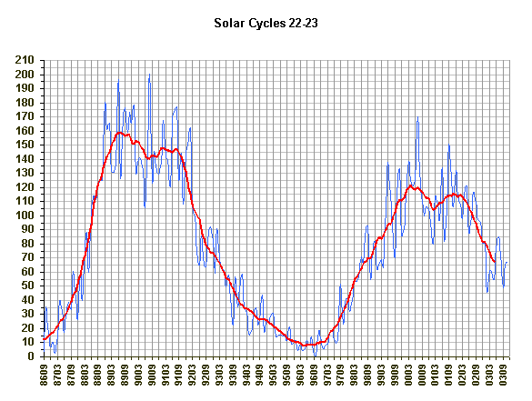

2003年 01.Jan-31.Dec
| Back Issues | Back Issues | Back Issues | Back Issues |
|---|---|---|---|
| Dec.01-31.2003 | Nov.01-30.2003 | Oct.01-31.2003 | Sep.01-30.2003 |
| Aug.01-31.2003 | Jul.01-31.2003 | Jun.01-30.2003 | May.01-31.2003 |
| Apr.01-30.2003 | Mar.01-31.2003 | Feb.01-28.2003 | Jan.01-31.2003 |


[Back Issues Jan-Dec.2003]
TIME:UTC(JST-09:00)
Report from JA1RJU (PM95sq)
31.Dec.2003(05:00b)
*VK-TV 06:00- 46.172 --
*9M-TV 07:00- 48.240/260 --
30.Dec.2003(15:00f)
*ZL-TV 02:10- 45.24/25/26--
ZL3NW 02:25 50.110 CW CQ
ZL4LV 02:27 50.110 SSB CQ
ZL3SIX/B 02:30- 50.0399 CW Beacon
*VK-TV 03:00- 46.172/240 -- strong!
*BY-TV 03:00- 49.747 --
*9M-TV 03:10- 48.240/260 -- strong!
ZL1UF 05:03 50.110 SSB
ZL3NE 05:04 50.110 SSB
ZL1VHF/B 05:05- 50.0433 CW Beacon
ZL3SIX/B 05:10- 50.0399 CW Beacon
ZL3TIC 05:10 50.110 SSB
ZL3NE 05:18 50.110 CW
ZL3TY 05:19 50.110 CW
*ZL-TV 05:20- 50.750/760 FM TV Audio strong!
VK4RGG 05:20- 50.058 CW Beacon
VK4ABP 05:20- 52.347 CW Beacon
VK2FHN 05:24 50.110 CW
VK2HO 05:27 50.110/120 SSB
ZL2MHF/B 05:30- 52.2754 CW Beacon
VK2ZXN 05:45 50.130 SSB
VK2BPL 05:48 50.110 CW
ZL3NE 05:49 50.110 CW
ZL3GS 05:49 50.110/107 CW
VK4CP 05:51 50.110 SSB CQ No JA!
ZL3TIC 05:58 50.140 SSB
ZL3SIX/B 06:15- 50.0399 CW Beacon
ZL3GS 06:15 50.110 CW
ZL3MH 06:55 50.110/130 SSB
ZL3SIX/B 07:00- 50.0399 CW Beacon
29.Dec.2003(15:00d)
*BY-TV 01:00- 49.747 --
*ZL-TV 01:50- 45.24/25/26--
*VK-TV 01:50- 46.172 --
*9M-TV 02:00- 48.240/260 -- strong!
DU1EV/B 02:30- 50.008 CW Beacon
3W22S 03:20 50.110/105 CW Chirping
3W22S 03:36 50.105 SSB
3W22S 03:57 50.110 CW CQing
3W22S 04:17 50.110 SSB/CW still good!
*VK-TV 06:00- 46.172/240 -- strong!
VK2ZXC 06:07 50.110 CW
C21SIX/B 06:10- 50.038 CW Beacon
VK2FHN 06:29 50.110 CW
28.Dec.2003(15:00c)
*ZL-TV 01:00- 45.260 --
*BY-TV 01:00- 49.747 -- strong!
*VK-TV 01:50- 46.172 --
VR2XMT 01:58 50.115 SSB
*ZL-TV 02:00- 45.24/25/26--
*9M-TV 02:30- 48.240/260 -- strong!
27.Dec.2003(15:00d)
*ZL-TV 01:00- 45.24/25/26--
*VK-TV 01:50- 46.172/240 --
V73SIX/B 01:57- 50.014 CW Beacon weak
VK2ZXC 02:41 50.110/130 SSB
VK4RGG/B 02:41- 50.058 CW Beacon
VK2TDN 02:46 50.110 SSB
VK2TWO 02:49 50.110 SSB
VK2PB 02:57 50.110 SSB
VK5GX 03:05 50.105 CW F.out 03:10z
*9M-TV 04:00- 48.240/260 -- strong!
DU1EV/B 03:05- 50.008 CW Beacon
*BY-TV 04:00- 49.747 -- strong!
*VK-TV 05:50- 46.240 -- strong!
DU1EV/B 07:30- 50.008 CW Beacon
26.Dec.2003(15:00c)
*ZL-TV 03:30- 45.250/260 --
*VK-TV 03:30- 46.172/240 --
*9M-TV 04:00- 48.240/260 --
25.Dec.2003(15:00d)
*ZL-TV 01:30- 45.24/25/26--
*9M-TV 05:30- 48.240/260 --
24.Dec.2003(15:00c)
*9M-TV 03:00- 48.240/260 --
*ZL-TV 04:00- 45.250/260 --
*VK-TV 05:30- 46.172/240 --
23.Dec.2003(15:00c)
*ZL-TV 01:00- 45.24/25/26--
*9M-TV 06:00- 48.240/260 --
DU1EV/B 06:20- 50.008 CW
22.Dec.2003(15:00c)
*ZL-TV 01:20- 45.24/25/26--
*9M-TV 04:30- 48.240/260 --
20-21.Dec.2003(00:00a-15:00a)
◎12/20日-12/21日の"Flash ! DX"の入感リポート(6m Today !)は休止しました。
19.Dec.2003(15:00c)
*ZL-TV 05:00- 45.24/25/26--
*VK-TV 05:00- 46.172/240 --
18.Dec.2003(15:00d)
*BY-TV 02:00- 49.750 --
*ZL-TV 04:00- 45.24/25/26--
*VK-TV 04:30- 46.240 --
HL1LTC 04:38 50.110 SSB
DU1EV/B 05:30- 50.008 CW Beacon
*9M-TV 07:00- 48.240/260 --
DU1EV/B 07:00- 50.008 CW Beacon (still into PM95)
VK4ABW 07:26 50.110 SSB
VK3XQ 07:29 50.110 SSB
17.Dec.2003(15:00c)
*BY-TV 01:00- 49.750 --
*9M-TV 03:30- 48.240/260 --
*ZL-TV 06:00- 45.24/25/26--
*VK-TV 07:30- 46.172 --
DU1EV/B 08:30- 50.008 CW Beacon weak
16.Dec.2003(15:00d)
*ZL-TV 01:00- 45.24/25/26--
*VK-TV 01:30- 46.172/240 --
ZL4LV 01:53 50.110 SSB
V73SIX/B 02:00- 50.014 CW Beacon
ZL3TY 02:03 50.110 CW
*ZL-TV 06:00- 45.24/25/26-- strong! again
*ZL-TV 06:00- 50.760 FM TV Audio
FK8SIX/B 06:30- 50.0797 CW Beacon
15.Dec.2003(15:00d)
*BY-TV 00:30- 49.750 --
*ZL-TV 02:00- 45.24/25/26--
C21SIX/B 02:50- 50.038 CW Beacon
ZL1VHF/B 02:55- 50.0433 CW Beacon
*ZL-TV 02:55- 50.750/760 FM TV Audio
*VK-TV 03:00- 46.240 --
FK8CA 03:02 50.110 CW
FK8GX 03:04 50.110 CW
FK8SIX/B 03:05- 50.0797 CW Beacon
VK2ZXC 03:09 50.110 SSB
FK8GX 03:10 50.110 SSB
C21SIX/B 03:35- 50.038 CW Beacon (good!)
14.Dec.2003(15:00c)
*ZL-TV 02:00- 45.24/25/26--
13.Dec.2003(15:00c)
*ZL-TV 00:30- 45.24/25/26-- weak
*VK-TV 00:30- 46.172/240 -- weak
HL1LTC 00:53 50.110 CW
*BY-TV 01:00- 49.750 --
DU1EV/B 08:00- 50.008 CW Beacon
12.Dec.2003(15:00b)
(Very Quiet on the band)
11.Dec.2003(15:00c)
*BY-TV 01:00- 49.750 --
*ZL-TV 01:30- 45.24/25/26--
*VK-TV 01:30- 46.172 --
VK4AN 01:47 50.110 CW
VK2ZXC 02:03 50.110 SSB
VK3DUT 02:05 50.110/140 SSB
VK2BPL 02:25 50.110 CW
VK2ZXC 02:31 50.110 SSB
10.Dec.2003(15:00c)
*BY-TV 01:30- 49.750 --
DU1EV/B 05:20- 50.008 CW Beacon
*VK-TV 05:30- 46.172/240 --
09.Dec.2003(15:00c)
*BY-TV 01:30- 49.750 --
*ZL-TV 03:30- 45.24/25/26--
*VK-TV 03:30- 46.172 --
08.Dec.2003(15:00d)
*ZL-TV 02:00- 45.24/25/26--
*BY-TV 02:00- 49.750 --
*VK-TV 03:30- 46.172/240 --
ZL1VHF/B 03:52- 50.0433 CW Beacon
VK5ZMB 04:49 50.110 SSB
07.Dec.2003(15:00e)
*ZL-TV 02:00- 45.24/25/26--
*VK-TV 02:00- 46.240 --
ZL3NE 02:30 50.110 CW CQ
ZL4LV 02:34 50.110 SSB
ZL3TY 03:06 50.110 CW
ZL-TV 03:10- 50.750 -- ZL-TV Audio
ZL3NE 03:17 50.110 CW
ZL1VHF/B 03:20- 50.0433 CW Beacon
ZL3NE 03:42 50.110 CW
VK4RTL 07:00- 50.087 CW Beacon
VK4ABW 07:05 50.110 SSB
VK3CAT 07:09 50.110 SSB
VK2DN 07:10 50.110/130 SSB/CW
VK3XQ 07:10 50.110/130 SSB
VK5ZMB 07:11 50.110/130 SSB
VK3JGL 07:37 50.120 SSB
VK3DUT 07:41 50.110/150 SSB
VK7ZIF 07:49 50.110 SSB
VK4JH 07:51 50.120 SSB
VK2FHN 08:00 50.104 CW
VK4ABW 08:05 50.110 CW
VK2DN 08:12 50.110 CW
DU1EV/B 08:25- 50.008 CW Beacon
06.Dec.2003(15:00d)
*VK-TV 02:00- 46.172 --
*9M-TV 02:00- 48.240/260 --
*BY-TV 02:00- 49.750 --
*ZL-TV 02:20- 45.24/25/26-- still in 05:30z
VK8RAS 05:55- 50.0467 CW Beacon
ZL1VHF/B 06:00- 50.0433 CW Beacon
ZL3SIX/B 06:00- 50.0399 CW Beacon
ZL-TV 06:00- 50.740/750 -- ZL-TV Audio
ZL2GX 06:01 50.110 CW
ZL3JT 06:09 50.110/107 CW
ZL2GN 06:13 50.110 CW
ZL2GK 06:14 50.110 CW
ZL2TPY 06:26 50.120 SSB CQ
ZL3GS 06:29 50.110/105 CW
ZL4WA 06:31 50.110 CW CQ
ZL2AAA 06:38 50.110/120 SSB CQ
ZL2GK 07:10 50.110 CW
ZL2GK 08:20 50.117 SSB
05.Dec.2003(15:00d)
*ZL-TV 01:30- 45.24/25/26--
V73SIX/B 01:30- 50.014 CW Beacon
*VK-TV 02:30- 46.240 --
*VK-TV 03:30- 46.172/240 --
*ZL-TV 03:30- 45.24/25/26-- strong!
ZL1VHF/B 03:30- 50.0433 CW Beacon
DU1EV/B 05:45- 50.008 CW Beacon strong!
VK6RPH 07:40- 50.066 CW Beacon
DU1EV/B 07:40- 50.008 CW Beacon still good!
VK8RAS 08:40- 50.0467 CW Beacon
04.Dec.2003(15:00b)
*ZL-TV 02:30- 45.24/25/26--
*VK-TV 02:30- 46.240 --
03.Dec.2003(15:00d)
*ZL-TV 02:30- 45.24/25/26--
*VK-TV 02:30- 46.172/240 --
V73SIX/B 03:00- 50.014 CW Beacon
ZL-TV 03:30- 50.760 -- ZL-TV Audio
ZL1VHF/B 03:30- 50.0433 CW Beacon
VK3XQ 03:50 50.110 CW
VK2ZXC 03:59 50.110 CW
V73SIX/B 04:00- 50.014 CW Beacon strong!
VK3SY 04:04 50.110 CW
VK3DZM 04:09 50.120/132 SSB
VK2ZXC 04:11 50.110 SSB
V73SIX/B 05:30- 50.014 CW Beacon
02.Dec.2003(15:00d)
*VK-TV 02:30- 46.172/240 --
*ZL-TV 03:30- 45.24/25/26--
V73SIX/B 04:45- 50.014 CW Beacon
ZL-TV 05:30- 50.740/750 -- ZL-TV Audio
ZL1VHF/B 05:35- 50.0433 CW Beacon
ZL3NE 05:42 50.110 CW
V73SIX/B 06:00- 50.014 CW Beacon
*9M-TV 07:00- 48.24/25/26--
DU1EV/B 07:00- 50.008 CW Beacon strong!
KG6DX 07:56 50.110/120 SSB F.out 08:06z
01.Dec.2003(15:00b)
◎12/01日の"Flash ! DX"の入感リポート(6m Today !)は休止しました。
27-30.Nov.2003(00:00a-15:00a)
◎11/27日-11/30日の"Flash ! DX"の入感リポート(6m Today !)は休止しました。
○SEANET Convention 2003 西マレーシア/9M2=Johor bahruで開催 (27.Nov-30.Nov)
26.Nov.2003(15:00b>
*ZL-TV 03:30- 45.24/25/26--
*VK-TV 04:00- 46.172/240 --
25.Nov.2003(15:00b>
*ZL-TV 02:30- 45.24/25/26--
*VK-TV 05:30- 46.172/240 --
V73SIX/B 05:30- 50.014 CW Beacon
C21SIX/B 05:30- 50.038 CW Beacon
24.Nov.2003(15:00b>
*ZL-TV 02:00- 45.24/25/26--
*VK-TV 03:00- 46.172/240 --
VK2BHO 04:00- 50.110 CW
VK2DN 04:06 50.110 CW
VK3DUT 04:29 50.110 SSB
VK2FHN 04:36 50.110 CW with HL1LTC
VK2BHO 04:37 50.110 CW
22-23.Nov.2003(00:00a-15:00a)
◎11/22日-11/23日の"Flash ! DX"の入感リポート(6m Today !)は休止しました。
* 2003 VSG/VCG全国ミーティング・JA2忘年会開催。
21.Nov.2003(15:00c)
◎ 先月末(10月28日)に太陽表面の激しい爆発現象(フレア)により人工衛星に異常が発生。
20.Nov.2003(15:00e)
*ZL-TV 01:00- 45.24/25/26--
*VK-TV 02:00- 46.240 --
ZL3SIX 03:30- 50.0398 CW Beacon
ZL2TPY 03:43 50.110 SSB CQ
VK2ANW? 06:09 50.110 SSB
ZL1VHF 06:15- 50.0433 CW Beacon
ZL3NW 06:18 50.110 CW
VK7AN 06:25 50.110/130 SSB
ZL3NW 06:38 50.130 SSB
VK3GJW 06:40 50.130 SSB
*VK-TV 11:00- 46.172 -- Evening TEP
VK6RSX 11:00- 50.304 CW Beacon
DU1EV/B 11:00- 50.008 CW Beacon
VK4CXQ 11:28 50.110 SSB SC 210
N7ET/DU7 12:05 50.110 CW
VR2XMT 12:29 50.110 SSB SC 210
DU1EV/B 13:00- 50.008 CW Beacon
DU1/GM4COK 13:06 50.110 CW CQ
19.Nov.2003(15:00e)
*ZL-TV 00:00- 45.24/25/26--
ZL1VHF 01:40- 50.0433 CW Beacon
ZL3NE 01:51 50.110 CW CQ
ZL-TV 02:20- 50.740 FM TV Audio
ZL1VHF 02:20- 50.0433 CW Beacon strong!
ZL2AGI 02:25 50.110 CW
ZL3NE 02:27 50.110 CW
ZL3JT 02:30 50.110 CW
ZL1TMF 02:34 50.110 SSB CQ
VK7BBW 02:35 50.110 SSB
ZL3NE 02:35 50.110 CW
ZL2AGI 02:36 50.103 CW
ZL2TPY 02:45 50.110 SSB
VK7BBW 02:48 50.110 CW
ZL3NE 02:53 50.113 SSB
ZL3JT 02:58 50.110 CW
ZL2AGI 03:00 50.130 SSB
ZL3TY 03:03 50.110 CW CQ
VK3DUT 03:03 50.110/150 SSB
ZL3SIX 03:17- 50.0398 CW Beacon
ZL-TV 03:20- 50.750 FM TV Audio
ZL2TPY 03:20 50.126 SSB
VK7BBW 03:35 50.110 SSB
ZL3SIX 03:45- 50.0398 CW Beacon
ZL3JT 03:51 50.110 CW
VK3DUT 04:00 50.110 SSB (ZL's gone now)
V73SIX/B 04:05- 50.014 CW Beacon
ZL3SIX 05:50- 50.0398 CW Beacon again!
ZL-TV 05:50- 50.750 FM TV Audio
ZL3NW 05:55 50.105 CW
ZL3NW 06:28 50.110 CW CQ
18.Nov.2003(15:00c)
※ 00:00z以前の入感情報は前日のReportに記載。
*VK-TV 02:20- 46.172 --
(9N7SZ 10:10- 50.100 CW JA2- SC 240)
DU1EV/B 10:40- 50.008 CW Beacon
17.Nov.2003(24:00e)
*ZL-TV 00:40- 45.24/25/26--
*BY-TV 01:00- 49.750 --
*VK-TV 01:20- 46.172/240 --
HL1LTC 01:35 50.110 SSB
V73SIX/B 01:53- 50.014 CW Beacon
VK4NW 02:04 50.110/130 SSB
FK8SIX/B 02:05- 50.0795 CW Beacon strong!
VK4CWJ 02:11 50.110 SSB
VK2ZXC 02:14 50.110 SSB
VK4ZRT 02:18 50.110 SSB
VK4AHW 02:25 50.110 SSB
V73SIX/B 02:45- 50.014 CW Beacon
FK8SIX/B 02:45- 50.0795 CW Beacon
VK4NW 02:45 50.110 SSB
FK8GX 02:57 50.110/125 SSB
VK4AHW 02:59 50.110 SSB
ZL-TV 03:00- 50.750 FM TV Audio
HL1LTC 03:07 50.125 SSB
FK8GX 03:17 50.095 CW
VK4KJL 03:22 50.110 SSB
VK4AN 03:25 50.110 SSB (ex KH6GLU)
FK8GX 03:40 50.110 CW
DU1EV/B 05:50- 50.008 CW Beacon
VK4ABP/B 06:00- 52.3467 CW Beacon
VK4AN 06:06 50.110 SSB/CW CQ
-------------------------------------------------
V73SIX/B 23:10- 50.014 CW Beacon
16.Nov.2003(15:00e)
*ZL-TV 00:10- 45.250 --
*VK-TV 02:00- 46.172/240 --
*ZL-TV 02:00- 45.24/25/26--
V73SIX/B 02:20- 50.014 CW Beacon
BN0F 03:25 50.115 CW
BW0IR 03:25 50.117 SSB
V73SIX/B 03:30- 50.014 CW Beacon
BN0F 03:57 50.110 CW
FK8SIX/B 04:20- 50.0795 CW Beacon strong!
VK4BLK 05:34 50.110/130 SSB
P29KFS 05:35 50.110/105 SSB
FK8SIX/B 05:40- 50.0795 CW still good!
VK4AN 05:52 50.110/140 SSB
VK6RPH 06:50- 50.066 CW Beacon
15.Nov.2003(15:00d)
*VK-TV 03:00- 46.172/240 --
*ZL-TV 03:20- 45.24/25/26-- strong!
DU1EV/B 08:05- 50.008 CW Beacon
K8VR/KH2 08:10 50.115 CW strong!(QSL via JF3IPR)
DU1EV 08:21 50.109 CW CQ
VK6RO 08:24 50.110 CW
DU1EV 08:47 50.107 CW CQ
VK6JQ 08:51 50.110 CW CQ
DU1EV/B 09:00- 50.008 CW Beacon
VK6RPH 09:00- 50.066 CW Beacon
K8VR/KH2 09:10 50.115 CW (gone now)
DU1/GM4COK 09:25 50.110 SSB strong!
DU1EV/B 09:55- 50.008 CW Beacon
14.Nov.2003(15:00d)
※ 00:00z以前の入感情報は前日のReportに記載。
*ZL-TV 01:50- 45.24/25/26-- strong!
*VK-TV 02:20- 46.240 --
ZL3TY 02:26 50.110 CW
ZL3NW 02:37 50.110/106 CW CQ
ZL3SIX/B 02:38- 50.0398 CW Beacon
ZL-TV 02:38- 50.750 FM TV Audio strong!
ZL3TY 03:12 50.110 CW
VK4BLK 03:26 50.110/140 SSB
13.Nov.2003(24:00e)
※ 00:00z以前の入感情報は前日のReportに記載。
*ZL-TV 01:50- 45.24/25/26--
V73SIX/B 03:25- 50.014 CW Beacon
DU1EV/B 07:00- 50.008 CW Beacon
*VK-TV 08:00- 46.240 --
VK3DUT 08:06 50.110/140 SSB
VK3DOU 08:08 50.110 SSB
VK7RST 08:15- 50.298 CW Beacon
DU1EV/B 08:20- 50.008 CW Beacon
VK3XQ 05:23 50.110 SSB CQ
--------------------------------------------------
V73SIX/B 22:38- 50.014 CW Beacon
CE-Music 22:40- 47.900 FM
*VK-TV 23:20- 46.172/240 --
12.Nov.2003(24:00e)
*ZL-TV 00:20- 45.250/260 -- strong!
*VK-TV 00:20- 46.240 --
*9M-TV 01:30- 48.240/260 --
*??-TV 01:30- 49.747 --
*VK-TV 01:50- 46.172/240 --
DU1EV/B 01:55- 50.008 CW Beacon
V73SIX/B 02:40- 50.014 CW Beacon
--------------------------------------------------
V73SIX/B 23:05- 50.014 CW Beacon
11.Nov.2003(15:00d)
※ 00:00z以前の南米の入感情報は前日のReportに記載。
*9M-TV 01:30- 48.240/260 --
*BY-TV 02:00- 49.7474 -- strong!
*ZL-TV 02:30- 45.250/260 --
DU1EV/B 02:35- 50.008 CW Beacon
ZL3TY 02:46 50.110 CW
ZL3SIX/B 03:00- 50.040 CW Beacon
ZL3TY 03:02 50.107 CW strong!
*VK-TV 03:15- 46.240 --
ZL3TY 03:35 50.107 CW (gone now)
DU1EV/B 07:20- 50.008 CW Beacon
DU1EV/B 08:00- 50.008 CW Beacon
DU1EV 08:14- 50.110 CW CQ
10.Nov.2003(24:00e)
*ZL-TV 01:40- 45.24/25/26--
*VK-TV 02:00- 46.172/240 --
*9M-TV 03:00- 48.240/260 --
V73SIX/B 03:30- 50.0141 CW Beacon
DU1EV/B 04:20- 50.008 CW Beacon
-------------------------------------------------
LW3EA 22:40 50.110 SSB
LU9EHF/B 22:40- 50.0155 CW Beacon
CX2LI 22:42 50.110 SSB
CX4AAJ 22:43 50.150 SSB strong! (F.out 22:58z)
09.Nov.2003(15:00d)
*ZL-TV 01:30- 45.24/25/26--
*VK-TV 02:00- 46.172/240 --
FK8SIX/B 02:40- 50.0795 CW Beacon
DU1EV 04:25- 50.115 SSB
DU1EV 06:08- 50.115 CW
DU1EV/B 06:20- 50.008 CW Beacon
N7ET/DU7 07:14 50.110 CW CQ
N7ET/DU7 07:38 50.115 CW
08.Nov.2003(15:00d)
*ZL-TV 00:00- 45.24/25/26--
*VK-TV 00:00- 46.172/240 --
FK8SIX/B 02:38- 50.0795 CW Beacon
V73SIX/B 03:00- 50.0141 CW Beacon
DU1EV/B 05:20- 50.008 CW Beacon
07.Nov.2003(15:00d)
*ZL-TV 00:00- 45.24/25/26--
V73SIX/B 00:20- 50.0141 CW Beacon
KH6/K9FD 00:28 50.110 CW SC
*VK-TV 00:30- 46.172/240 --
KH6SX 00:49 50.110 CW SC
KH6/K9FD 00:58 50.110 CW SC
DU1EV/B 04:20- 50.008 CW Beacon
DU1EV/B 05:30- 50.008 CW Beacon
VK6RSX 07:50- 50.304 CW Beacon
06.Nov.2003(15:00d)
*VK-TV 01:50- 46.172/240 --
*9M-TV 02:00- 48.240/260 --
V73SIX/B 02:20- 50.0141 CW Beacon
V73GOD 02:39 50.110 SSB CQ
FK8SIX/B 02:45- 50.0795 CW Beacon
VK8RAS 03:10- 50.0467 CW Beacon
DU1EV/B 04:10- 50.008 CW Beacon
VK6RSX 05:10- 50.304 CW Beacon
9M6AAC 07:15 50.110 SSB
05.Nov.2003(15:00d)
*VK-TV 00:00- 46.172 --
VK4APG 00:31 50.110 CW
*ZL-TV 01:30- 45.24/25/26--
FK8SIX/B 01:35- 50.0795 CW Beacon
*9M-TV 03:00- 48.240/260 --
VK4RTL 03:35- 50.0868 CW Beacon
VK4JH 03:43 50.110 CW
04.Nov.2003(15:00e)
*ZL-TV 00:00- 45.24/25/26-- strong! 23:40-
FK8SIX/B 01:30- 50.0795 CW Beacon
*VK-TV 02:00- 46.172/240 --
VK4AHW 02:12 50.110 SSB
VK4RGG 02:25- 50.058 CW Beacon
VK4AHW 02:25 50.110/130 SSB
VK4NW 02:37 50.110/160 SSB
FK8EB 02:45 50.110 CW
VK2HO 02:54 50.110 SSB/CW
KH6SX 02:58 50.110/105 CW
V73SIX/B 03:00- 50.0141 CW Beacon
FK8SIX/B 03:00- 50.0795 CW Beacon
VK2UMA 03:17 50.110/120 SSB
VK2YO 03:27 50.110 SSB
VK4ASL 03:30 50.125 SSB
VK4JFS 03:42 50.130 SSB
VK4AHW 03:45 50.135 SSB
VK4JOO 03:47 50.120 SSB
V73SIX/B 03:50- 50.0141 CW Beacon
VK8RAS 03:50- 50.0467 CW Beacon
VK4RGG 03:50- 50.058 CW Beacon
FK8SIX/B 03:50- 50.0795 CW Beacon
VK4RTL 03:50- 50.0868 CW Beacon
VK4ABP 03:50- 52.3467 CW Beacon
ZL-TV 03:50- 50.750 FM TV-Audio Loud!
9M6AAC 03:55 50.110 SSB CQ
VK4ADM 04:00 50.125 SSB
VK4JOO 04:12 52.525 FM
VK4CXQ 04:17 50.110 CW
9M6AAC 04:24 50.110 SSB CQ
9M6AAC 05:50 50.110 SSB CQ again strong!
YB1BGI 06:07 50.110 SSB
DU1EV/B 07:05- 50.008 CW Beacon
VK6RSX 07:50- 50.304 CW Beacon
9M6AAC 08:15 50.110 SSB CQ
VK6RSX 12:00- 50.304 CW Beacon
VK4FNQ 12:05 50.130 SSB
03.Nov.2003(15:00e)
*ZL-TV 01:00- 45.24/25/26--
*9M-TV 01:30- 48.240/260 --
FK8SIX/B 01:55- 50.0795 CW Beacon
FK8EB 01:57 50.110 CW
*VK-TV 02:00- 46.172/240 --
VK4NW 02:08 50.110 SSB
9M2TO 02:17 50.117 CW
ZL2AGI 02:32 50.110 CW
VK4PU 02:35 50.110 CW
3W22S 02:35 50.110 SSB CQ QSY to CW
3W22S 02:36 50.105 CW UP
VK4CXQ 02:40 50.110 CW
VK4RTL 02:50- 50.0868 CW Beacon
ZL3NE 02:56 50.110 CW
V73SIX/B 03:00- 50.0141 CW Beacon
ZL-TV 03:00 50.760 FM TV Audio
ZL1VHF/B 03:05- 50.0433 CW Beacon
ZL2AAA 03:17 50.110/130 SSB
9M6AAC 03:21 50.108 CW
V73SIX/B 03:30- 50.0141 CW Beacon
ZL1VHF/B 03:30- 50.0433 CW Beacon
FK8SIX/B 03:30- 50.0795 CW Beacon
ZL2AAA 03:35 50.130 SSB (gone now)
9M6AAC 03:37 50.170 SSB
ZL3NE 03:50 50.111 CW (03:58 9M/ZL gone now)
V73SIX/B 04:00- 50.0141 CW Beacon
9M6AAC 04:37 50.108 CW again
9M6AAC 07:50 50.110/160 SSB again (QSL via N2OO)
9M6AAC 08:41 50.106 CW again
9M6OO 08:47 50.106 CW (QSL via N2OO)
9M6OO 09:17 50.130 SSB
02.Nov.2003(15:00f)
※ 00:00z以前の入感情報は前日のReportに記載。
*ZL-TV 00:00- 45.24/25/26--
*VK-TV 00:00- 46.172/240 --
(W6YM 00:04 50.096 CW SC JA2-)
N6XQ 00:09 50.091 CW SC
KH6SX 00:13 50.110/105 CW
(XE2ED 00:20 50.100 CW SC DM12 ex XE2EED)
(KH7T 00:30 50.120 SSB JA2-)
AH6RE 00:42 50.089 CW
CE-FM 00:45- 47.900 FM CE-Music
*VK-TV 01:00- 46.172 -- strong!
FK8SIX/B 02:00- 50.0795 CW Beacon
VK4AHW 02:08 50.110/135 SSB
FK8EB 02:10 50.110 CW
VK4YRS 02:12 50.135 SSB
VK4RGG 02:14- 50.058 CW Beacon
FK8CA 02:22 50.102 CW
V73SIX/B 02:25- 50.0141 CW Beacon
V73MJ 02:28 50.047 CW
FK8EB 02:36 50.110 CW
FK8CA 02:58 50.110 CW
V73SIX/B 03:00- 50.0141 CW Beacon
VK8RAS 03:00- 50.0467 CW Beacon
FK8SIX/B 03:00- 50.0795 CW Beacon
V73MJ 03:00 50.120 SSB
FK8's 03:56 50.110 SSB
ZL4AAA 04:29 50.110 SSB strong! pile
ZL3NE 04:47 50.120 SSB
ZL1VHF 04:47- 50.043 CW Beacon
VK4RTL 04:50- 50.0868 CW Beacon
V73SIX/B 04:50- 50.0141 CW Beacon
9M2/JI1ETU 04:50- 50.085 CW Beacon strong!
FK8FZ 05:00 50.130 SSB
VK8RAS 05:10- 50.0467 CW Beacon
FK8SIX/B 05:10- 50.0795 CW Beacon strong!
ZL4AAA 05:45 50.110 SSB still pile ! (05:55 f.out)
V73SIX/B 05:55- 50.0141 CW Beacon (FK/ZL/VK all gone now)
V73SIX/B 07:30- 50.0141 CW Beacon
9M2/JI1ETU 07:30- 50.085 CW Beacon
V73SIX/B 08:30- 50.0141 CW Beacon
N7ET/DU7 11:34 50.110 CW
VK6RSX 12:00- 50.304 CW Beacon
VK4CXQ 12:16 50.110 CW
VK4DHF 12:30 50.110 CW
31.Oct.2003(16:00e)
*BY-TV 01:00- 49.750 --
V73SIX/B 01:30- 50.014 CW Beacon
DU1EV/B 01:30- 50.008 CW Beacon
*9M-TV 03:30- 48.240/260 --
V73SIX/B 06:50- 50.014 CW Beacon
9M2TO 08:05 50.116 CW/SSB
*??-TV 14:00- 48.251 --
*VK-TV 14:00- 46.172 --
VK6RSX 14:00- 50.304 CW Beacon
N7ET/DU7 14:00 50.110 CW
DU1BP 14:37 50.145 SSB strong!
VR2XMT 14:42 50.110 SSB
DU1BP 15:00 50.145 SSB strong!
VR2XMT 15:00 50.110 SSB
DU1EV 15:05 50.110 CW
BA7IA 15:15 50.110 CW
VK8RAS 15:35- 50.0467 CW Beacon
VK6RSX 15:35- 50.304 CW Beacon
30.Oct.2003(15:00c)
*9M-TV 01:30- 48.240/260 --
*BY-TV 05:00- 49.750 --
22-29.Oct.2003(00:00a-15:00a)
◎10/22日-10/29日の"Flash ! DX"の入感リポート(6m Today !)は休止しました。
21.Oct.2003(15:00e)
*BY-TV 01:00- 49.750 --
*ZL-TV 01:20- 45.24/25/26-- strong!
*VK-TV 02:00- 46.172/240 --
V73SIX/B 02:58- 50.014 CW Beacon
DU1EV/B 04:40- 50.008 CW Beacon
VK8RAS 04:40- 50.0467 CW Beacon
FK8SIX/B 05:10- 50.0795 CW Beacon
VK4NW 05:24 50.110 SSB
VK4APG 05:27 50.110 SSB
VK3DUT 05:30 50.110 SSB
FK8GX 05:34 50.110 SSB QSO with KH6SX
V73SIX/B 05:40- 50.014 CW Beacon
VK8RAS 05:40- 50.0467 CW Beacon
VK6RSX 06:00- 50.304 CW Beacon
VK4RTL 06:00- 50.087 CW Beacon
VK4APG 06:01 50.110 CW/SSB
KG6DX 06:10 50.120 CW
XV3AA 06:15 50.130 SSB
VK4AHW 06:20 50.110 SSB
VK4ABW 06:25 50.110 SSB
N7ET/DU7 06:27 50.110 CW
VK4ABP 06:30- 52.3467 CW Beacon
20.Oct.2003(15:00e)
*VK-TV 02:00- 46.172/240 --
V73SIX/B 02:30- 50.014 CW Beacon
VK4RGG 03:00- 50.058 CW Beacon
*9M-TV 03:00- 48.24/25/26 --
VK4AHW 03:08 50.110 SSB
VK4BLK 03:10 50.130 SSB
VK2HO 03:11 50.110/130 SSB
VK4ABP 03:15- 52.3467 CW Beacon
VK4YRS 03:15 50.110 SSB
VK4JH 03:15 50.110 SSB
VK4AHW 03:17 50.110 SSB
VK8RAS 03:18- 50.0467 CW Beacon
VK4CXQ 03:20 50.110 CW
VK4JSR 03:27 50.110/145 SSB
VK4NW 03:29 50.110 SSB
FK8SIX/B 03:30- 50.0795 CW Beacon
KH6SX 03:40 50.110 CW SC
VK4CXQ 03:48 50.110/105 CW
VK4APG 03:51 50.110 SSB
DS1CCU 03:54 50.110 CW
DU1EV/B 03:54- 50.008 CW Beacon
FK8EB 04:07 50.106 CW
DU1EV/B 07:00- 50.008 CW Beacon strong!
N7ET/DU7 07:07 50.115 SSB
VK6RSX 07:50- 50.304 CW Beacon
VI8NT 08:27 50.110/130 SSB (QSL via VK6NE)
VK6RSX 09:50- 50.304 CW Beacon
*VK-TV 09:50- 46.172/240 --
19.Oct.2003(15:00d)
*VK-TV 02:30- 46.172 --
*9M-TV 02:30- 48.240/260 --
V73SIX/B 03:20- 50.014 CW Beacon
VI8NT 04:54 50.110/130 SSB
VK4ABW 05:12 50.110 CW
VK4CXQ 05:12 50.110 CW
VK6RSX 07:48- 50.304 CW Beacon
VK6JQ 09:02 50.110 CW
VK4ABW 09:32 50.110 CW/SSB
18.Oct.2003(15:00d)
*ZL-TV 00:00- 45.24/25/26--
*VK-TV 01:30- 46.172 --
KH2VL/KH0 03:30 50.120 CW
V73SIX/B 04:00- 50.014 CW Beacon
FK8SIX/B 04:00- 50.0795 CW Beacon
V73GOD 04:53 50.110 SSB
*9M-TV 05:00- 48.240/260 --
XU7ACG 05:58 50.110/125 SSB
DU1EV/B 06:40- 50.008 CW Beacon
XU7ACG 06:40 50.110 SSB
YC1MH 07:24 50.110/145 SSB
YC1BYO 07:28 50.145 SSB
YC1MH 07:37 50.110 SSB
VK6RSX 08:20- 50.304 CW Beacon
VK6JJJ 10:03 50.110 SSB CQ
17.Oct.2003(15:00e)
*VK-TV 03:00- 46.240 --
V73SIX/B 03:10- 50.014 CW Beacon
VK8RAS 03:34- 50.0467 CW Beacon
VK2ZXC 03:50 50.110 SSB
VK6RPH 04:40- 50.066 CW Beacon
FK8SIX/B 04:20- 50.0795 CW Beacon
FK8GX 04:50 50.125 SSB
VK8RAS 05:20- 50.0467 CW Beacon
*9M-TV 05:20- 48.240/260 --
XU7ACG 06:15 50.110/121 SSB
3W22S 07:30 50.110 SSB/CW
VK6RSX 08:20- 50.304 CW Beacon
VK3DUT 08:37 50.110/130 SSB strong!
VK6JQ 08:40 50.112 CW
VK8ZAA 08:50 50.110/130 SSB
VK4CXQ 08:58 50.110 SSB
C21SIX 09:00- 50.038 CW Beacon
VK8RAS 09:00- 50.0467 CW Beacon
FK8SIX/B 09:00- 50.0795 CW Beacon
VK3DUT 09:42 50.110 SSB
VK3DUT 09:50 50.110/150 SSB
VK3ZC 09:58 50.130 SSB
VK3AZY 10:00 50.130 SSB
VK3GJW 10:01 50.130 SSB
VK3XQ 10:03 50.130 SSB
VK5AIM 10:06 50.130 SSB
VK3AUI 10:11 50.124 SSB
(ZL's 23:04-40 50.110 CW ZL3SIX/b.ZL3TY.ZL3NW)
16.Oct.2003(15:00e)
*BY-TV 00:00- 49.750 --
*ZL-TV 01:20- 45.24/25/26-- strong!
*VK-TV 02:10- 46.172/240 -- strong!
FK8SIX/B 02:10- 50.0795 CW Beacon strong!
VK4NW 03:04 50.110 SSB
VK2ZXC 03:05 50.110 CW
VK2DN 03:10 50.110 CW
VK4RGG 03:10- 50.058 CW Beacon
ZL1VHF 03:16 50.0433 CW
VK8RAS 03:30- 50.0467 CW Beacon
FK8EB 03:36 50.110 CW
V73SIX/B 03:45- 50.014 CW Beacon
FK8HA 03:55 50.130 SSB
FK8GX 03:56 50.125 SSB
VK4ZHN 04:01 50.110/145 SSB
VK4ZSS 04:25 50.110 SSB
FK8SIX/B 04:30- 50.0795 CW Beacon strong!
VK4RGG 04:30- 50.058 CW Beacon
VK4UMA 04:30 50.110/120 SSB
VK4CXQ 04:35 50.110 CW
VK4AML 04:35 50.110/160 SSB
VK4AHW 04:38 50.125 SSB
FK8GX 04:52 50.110 CW
VK4TZL 05:02 50.110 SSB
VK4ZAA 05:04 50.125 SSB
VK4YRS 05:07 50.110/120 SSB
VK2HO 05:10 50.110 SSB
VK4CXQ 05:10 50.110 CW
VK2DN 05:24 50.110 CW
VK4ZSS 05:41 50.110 SSB
VK4CP 05:41 50.110 SSB
VK4APG 05:54 50.110 SSB
VK4ADJ 06:11 50.110 SSB
VK4RGG 06:15- 50.058 CW Beacon
C21SIX 06:15- 50.0383 CW Beacon
*ZL-TV 06:30- 50.750 FM TV Audio
KG6DX 07:05 50.110 CW
DU1EV/B 07:15- 50.008 CW Beacon
DU1BP 07:15 50.110 SSB
KG6DX 07:30 50.091 RTTY
HL1LTC 09:06 50.110 CW/SSB CQ
*VK-TV 12:30- 46.172/240 --
15.Oct.2003(15:00c)
DU1EV/B 01:00- 50.008 CW Beacon
*VK-TV 01:00- 46.172 --
VI8NT 01:13 50.110/130 SSB
*VK-TV 02:45- 46.240 --
VK8MS 13:15 50.110 SSB
14.Oct.2003(15:00d)
*VK-TV 03:00- 46.172/240 --
V73SIX/B 04:30- 50.0142 CW Beacon
VK8RAS 04:30- 50.0467 CW Beacon
XV3AA 07:44 50.130 SSB
YC1MH 08:18 50.110 SSB
VK4FNQ 09:48 50.110/130 SSB
VK8MS 09:52 50.110 SSB/CW
13.Oct.2003(15:00c)
*VK-TV 03:00- 46.172/240 --
VK8RAS 04:20- 50.0467 CW Beacon
*9M-TV 06:00- 48.24/25/26--
12.Oct.2003(15:00d)
*VK-TV 03:00- 46.172 --
*9M-TV 06:00- 48.240/260 --
YB1BGI 05:35 50.120 SSB
YB1BGI 06:30 50.120 SSB
N7ET/DU7 06:39 50.110 CW CQ
YC1MH 07:15 50.110/120 SSB strong!
YB0DPO 07:23 50.110 CW up
YB1BGI 07:35 50.150 SSB
YB0DPO 07:42 50.110 SSB
(9M2/JR1WZI 07:43 50.105 CW JA2-6.9.0)
YC0OK 07:50 50.130 SSB
11.Oct.2003(15:00d)
*VK-TV 03:00- 46.172 --
*VK-TV 03:50- 46.172/240 --
VK8RAS 03:50- 50.0467 CW Beacon strong!
DU1EV/B 06:10- 50.008 CW Beacon
YC1MH 06:20 50.110/120 SSB
YB0DPO 06:40 50.125 CW up1(07:18z QRT)
*9M-TV 07:00- 48.240/260 --
10.Oct.2003(15:00d)
*VK-TV 01:30- 46.172/240 --
FK8SIX/B 02:40- 50.0795 CW Beacon strong!
VK4RGG 02:50- 50.058 CW Beacon
*9M-TV 03:50- 48.240/260 --
VK4NW 03:58 50.110 SSB
VK8RAS 04:00- 50.0467 CW Beacon
VK4RGG 04:00- 50.058 CW Beacon
VK4ABP 04:00- 52.3468 CW Beacon
DU1EV/B 04:34- 50.008 CW Beacon
VK6RSX 05:20- 50.304 CW Beacon strong!
*BY-TV 05:30- 48.747.5 --
3W22S 06:56 50.110/105 CW SPECIAL EVENT CALLSIGN (22th South East Asian Games)
3W22S 07:13 50.105(up) SSB QSL Direct only. Please add $2 or 2IRC's+SAE
DU1EV/B 07:30- 50.008 CW Beacon strong!
3W22S 07:30 50.105 CW/SSB up10
DU1BP 07:40 50.130 SSB
3W22S 07:57 50.105 AM up10
VK6RSX 08:35- 50.304 CW Beacon
N7ET/DU7 11:40 50.110/120 CW/SSB
09.Oct.2003(15:00d)
*VK-TV 01:30- 46.172 --
*VK-TV 02:30- 46.172/240 -- strong!
FK8SIX/B 03:15- 50.0794 CW Beacon
*9M-TV 04:00- 48.240/260 --
*BY-TV 04:00- 48.747.5 --
VK8RAS 04:40- 50.0467 CW Beacon
VK6RPH 05:10- 50.066 CW Beacon
VK6RSX 05:45- 50.304 CW Beacon
08.Oct.2003(15:00e)
*VK-TV 01:30- 46.172 --
VK6RSX 06:30- 50.304 CW Beacon
VK6RSX 08:30- 50.304 CW Beacon
VK6JQ 08:35 50.110 CW CQ
VK6JQ 09:05 50.110 CW CQ CQ!
VK6JQ 09:28 50.110 SSB QSO with A61AH!
FK8SIX/B 09:35- 50.0795 CW Beacon
VK6JQ 09:44 50.110/115 CW/SSB QSO with HZ1MD!
VK8RAS 10:00- 50.0467 CW Beacon
VK6RSX 10:00- 50.304 CW Beacon
VK6RSX 12:00- 50.304 CW Beacon
VK4FNQ 12:15 50.110/130 SSB
VK4CXQ 12:33 50.110 SSB/CW
YC1EHR 12:44 50.110 SSB
YB1BGI 12:49 50.110 SSB
YC1BYO 12:52 50.110 SSB
VK4CXQ 12:57 50.110 CW
07.Oct.2003(15:00d)
*VK-TV 03:00- 46.172 --
VK8RAS 05:05- 50.0467 CW Beacon
VK6RSX 06:33- 50.304 CW Beacon
VK6RSX 08:00- 50.304 CW Beacon
VK6JQ 09:49 50.110 CW CQ
VK8RAS 10:00- 50.0467 CW Beacon
VK6RSX 10:00- 50.304 CW Beacon
N7ET/DU7 12:58 50.110 CW
VK6RSX 13:00- 50.304 CW Beacon
06.Oct.2003(15:00d)
*VK-TV 03:00- 46.172 --
VK6RSX 08:35- 50.304 CW Beacon
VK6RSX 09:40- 50.304 CW Beacon
VK6JQ 09:43 50.110 CW CQ
DU1EV/B 12:00- 50.008 CW Beacon
VK8RAS 12:00- 50.0467 CW Beacon
VK6RSX 12:00- 50.304 CW Beacon
VK4ABW 12:23 50.110 SSB
VK8MS 12:28 50.110 SSB
VK4ABW 12:45 50.110 SSB
YC1MH 12:59 50.110 SSB
05.Oct.2003(15:00e)
*VK-TV 02:20- 46.172 --
VK4CXQ 03:56 50.110 CW
VK4TZL 03:58 50.110/130 SSB
VK4ABP 04:00- 52.347 CW Beacon
VK4PU 04:03 50.110 SSB
VK4WDM 04:08 50.110/130 SSB
VK4WDM 04:50 50.110 SSB
VK4JH 05:22 50.110 SSB
VK6RSX 06:20- 50.304 CW Beacon
*9M-TV 07:00- 48.240/260 --
VK6RSX 07:50- 50.304 CW Beacon
XZ7A 08:00 50.115 SSB
XU7ACD 08:01 50.110/123 CW/SSB
VK6RSX 09:55- 50.304 CW Beacon
VK6JJJ 10:05 50.110 SSB CQ
DU1EV/B 11:30- 50.008 CW Beacon
N7ET/DU7 12:50 50.110 CW
VK6RSX 13:15- 50.304 CW Beacon
N7ET/DU7 13:15 50.101 CW
YB0ASG 13:17 50.101 CW QSO with N7ET/DU7
YB0ASG 13:26 50.110 SSB
YC1MH 13:40 50.140 SSB
DU1EV/B 14:00- 50.008 CW Beacon
N7ET/DU7 14:00 50.110 CW
VK6RSX 14:30- 50.304 CW Beacon
04.Oct.2003(15:00e)
*VK-TV 02:30- 46.172 --
*9M-TV 02:30- 48.240/260 --
VK8RAS 03:00- 50.0467 CW Beacon strong!
XZ7A 03:25 50.110 CW
XZ7A 03:33 50.105 CW CQ up1
XZ7A 04:10 50.105 CW still good!
XZ7A 04:35 50.115 SSB up5
VK6RSX 05:10- 50.304 CW Beacon
XZ7A 05:45 50.115 SSB still good!
DU1EV/B 06:15- 50.008 CW Beacon
XZ7A 06:15 50.105 CW back to CW
VK6RSX 08:30- 50.304 CW Beacon
VK6JQ 08:56 50.110 CW CQ
VK6JQ 09:18 50.112/105 CW CQ
03.Oct.2003(15:00e)
*VK-TV 03:30- 46.172 --
*9M-TV 06:00- 48.240/260 --
VK6RSX 06:20- 50.304 CW Beacon
XZ7A 06:55 50.105 CW vy weak into PM95sq
9M2TO/B 07:45- 50.005 CW Beacon FB!
VK6RSX 08:30- 50.304 CW Beacon
VK6JQ 08:38 50.110 CW
VK8RAS 09:00- 50.0467 CW Beacon
FK8SIX/B 09:00- 50.0795 CW Beacon
VK6RSX 09:00- 50.304 CW Beacon strong!
(XU7ACD 09:10 50.110/115 CW JA1-)
VK4CXQ 09:21 50.105 CW
VK4JH 09:32 50.110 CW/SSB
VK6JQ 09:38 50.115 CW
VK4CXQ 09:50 50.105 CW
02.Oct.2003(15:00c)
*9M-TV 07:30- 48.24/25/26--
*BY-TV 08:00- 49.750 --
VK6RSX 08:42- 50.304 CW Beacon
VK6RSX 09:40- 50.304 CW Beacon strong!
01.Oct.2003(15:00d)
*VK-TV 02:30- 46.172/240 --
FK8SIX/B 03:10- 50.0794 CW Beacon
FK8HA 03:10 50.110 SSB QSO with FK8EB
FK8EB 03:10 50.110 SSB
FK8GX 03:42 50.110 CW
C21SIX/B 03:45- 50.038 CW Beacon
V73SIX/B 03:50- 50.0142 CW
FK8EB 03:56 50.115 CW
FK8GX 04:13 50.110 CW
VK8RAS 04:30- 50.0467 CW Beacon
VK4CXQ 04:32 50.110 CW
V73SIX/B 05:00- 50.0142 CW
VK6RSX 06:10- 50.304 CW Beacon
VK6RSX 07:20- 50.304 CW Beacon
(XZ7A 08:20 50.105 CW into JA5/6)
VK6RSX 13:10- 50.304 CW Beacon
30.Sep.2003(15:00e)
*VK-TV 03:00- 46.172/240 --
VK4RGG 03:15- 50.058 CW Beacon
VK4NW 03:32 50.110 SSB
VK4AHW 03:33 50.110/130 SSB
VK4ZRT 03:36 50.110 SSB
VK4YRS 03:41 50.130 SSB
VK4JSR 03:45 50.130 SSB
VK4AHW 03:59 50.140 SSB
VK4GR 04:12 50.125 SSB
VK4TZL 04:14 50.125 SSB
VK4SJ 04:16 50.125 SSB YL stn.
V73NS 04:22 50.110 CW
VK4CXQ 04:25 50.110 CW
VK4RGG 04:40- 50.058 CW Beacon
V73NS 04:40 50.110 CW CQing
V73SIX/B 04:45- 50.0143 CW Beacon (after the end of V73NS QRV)
VK8RAS 04:45- 50.0467 CW Beacon
VK4ABP 04:45- 52.347 CW Beacon
VK4JSR 05:00 50.110/120 SSB
VK4ZRT 05:50 50.110 SSB
VK6RSX 05:50- 50.304 CW Beacon
VK8GF 06:31 50.110/124 SSB
DU1EV/B 08:50- 50.008 CW Beacon
DU1/GM4COK 08:52 50.110 CW
VK4BLK 09:16 50.110/130 SSB
VK4CXQ 09:24 50.110 CW
29.Sep.2003(15:00c)
*VK-TV 03:00- 46.172 --
*9M-TV 05:00- 48.240/260 --
VK6RSX 06:15- 50.304 CW Beacon
28.Sep.2003(15:00d)
*VK-TV 03:00- 46.172 --
FK8SIX/B 03:35- 50.0794 CW Beacon
V63SC 05:02 50.120 SSB QSL JM1LBO
VK8RAS 05:15- 50.0467 CW Beacon
VK6RSX 05:30- 50.304 CW Beacon strong!
*BY-TV 06:00- 49.747 --
DU1EV/B 06:55- 50.008 CW Beacon
DU1EV/B 07:55- 50.008 CW Beacon
BG9BA 08:03 50.115/110 CW CQ SC
27.Sep.2003(15:00d)
*VK-TV 02:30- 46.172 --
VK4RGG 03:00- 50.058 CW Beacon weak
*9M-TV 04:30- 48.240/260 --
VK8RAS 05:30- 50.0467 CW Beacon
V73SIX/B 05:30- 50.0143 CW Beacon strong!
*BY-TV 07:00- 49.747 --
DU1EV/B 07:45- 50.008 CW Beacon
VR2XMT 07:46 50.110/130 SSB
BG9BA 08:15 50.110 CW CQ SC
DU1EV/B 08:45- 50.008 CW Beacon
BG9BA 08:45 50.110 CW CQ
VR2PX 08:50 50.108 CW CQ
VR2XZK 08:50 50.145 SSB
VR2ZNC 09:00 50.180 SSB
VK8RAS 09:55- 50.0467 CW Beacon
26.Sep.2003(15:00d)
*VK-TV 01:30- 46.172 --
*9M-TV 03:30- 48.240/250 --
VK6JJ 04:17 50.110 CW CQ DX
*9M-TV 04:30- 48.240/260 --
*BY-TV 04:30- 49.750 --
VK6RSX 05:00- 50.304 CW Beacon
DU1EV/B 07:00- 50.008 CW Beacon strong!
BG9BA 07:43 50.110 CW CQ SC
BG9BA 07:54 50.110 SSB
VK6RSX 09:50- 50.304 CW Beacon
25.Sep.2003(15:00d)
*VK-TV 03:30- 46.172 --
*9M-TV 03:30- 48.24/25/26--
VK8RAS 04:00- 50.0467 CW Beacon
VK6RSX 07:30- 50.304 CW Beacon
VK6JQ 08:00 50.110 CW CQ
DU1EV/B 08:30- 50.008 CW Beacon strong!
DU1BP 08:32 50.110 SSB
VK6JQ 08:34 50.110 CW CQ
DU1BP 08:54 50.110 SSB vy strong!
VK6RSX 09:25- 50.304 CW Beacon
VK6JQ 09:25 50.112 CW
DU1EV/B 09:30- 50.008 CW Beacon
VK8RAS 09:51- 50.0467 CW Beacon
VK6RSX 09:55- 50.304 CW Beacon
24.Sep.2003(15:00d)
*VK-TV 05:30- 46.172 --
*9M-TV 05:30- 48.240/260 --
VK8RAS 05:30- 50.0467 CW Beacon
V63SC 05:41 50.120 SSB QSL JM1LBO
V63SC 06:30 50.120 SSB strong!
DU1EV/B 07:30- 50.008 CW Beacon
DU1/GM4COK 07:53 50.110 CW/SSB strong! (CQ & QSO with JA5)
*VK-TV 09:00- 46.172 -- strong!
VK8RAS 09:00- 50.0467 CW Beacon
23.Sep.2003(15:00d)
*BY-TV 01:00- 49.750 --
*9M-TV 06:40- 48.24/25/26--
BG9BA 07:46 50.110 CW CQ SC
XV3AA 07:49 50.130 SSB
DU1EV/B 08:15- 50.008 CW Beacon strong!
4D71HBC 08:22 50.194 SSB
VK6RSX 09:20- 50.304 CW Beacon
22.Sep.2003(15:00d)
*VK-TV 03:30- 46.172 --
*9M-TV 05:00- 48.240/260 --
*BY-TV 06:00- 49.750 --
VK6RSX 06:20- 50.304 CW Beacon
DU1EV/B 07:30- 50.008 CW Beacon
XV3AA 07:30 50.130 SSB
BG9BA 08:21 50.110 CW CQ SC
VK6JQ 08:38 50.110 CW CQ
VK8RAS 09:30- 50.0467 CW Beacon
VK6RSX 09:30- 50.304 CW Beacon strong!
VK4CXQ 09:46 50.110 SSB
VK6JQ 10:01 50.112 CW CQ
21.Sep.2003(15:00d)
*BY-TV 04:00- 49.750 --
*BY-TV 08:00- 49.750 --
*VK-TV 08:55- 46.172 -- weak
VK4WDM 09:55 50.110 SSB CQ
VK4*** 10:00 50.110 SSB
VK6JQ 10:00 50.110 CW CQ
VK6RSX 10:02- 50.304 CW Beacon
20.Sep.2003(15:00d)
VK6RSX 07:40- 50.304 CW Beacon
XV3AA 08:10 50.130 SSB
VK6RSX 08:30- 50.304 CW Beacon
XV3AA 08:33 50.130 SSB strong!
VK6JQ 09:20 50.115 CW
VK4ABW 09:30 50.110 CW strong!
VK4ABP 09:35- 52.347 CW Beacon
VK4CXQ 09:45 50.105 CW
VK4ABW 09:50 50.110 SSB
VK8RAS 09:50- 50.0467 CW Beacon
19.Sep.2003(15:00c)
*VK-TV 05:00- 46.172 --
*9M-TV 08:20- 48.240/260 --
VK6RSX 08:50- 50.304 CW Beacon
VK6JQ 09:10 50.110 CW
18.Sep.2003(15:00c)
*9M-TV 08:00- 48.24/25/26--
*BY-TV 08:00- 49.750 --
VK6RSX 08:25- 50.304 CW Beacon
DU1EV/B 08:45- 50.008 CW Beacon
VK6RSX 09:30- 50.304 CW Beacon strong!
VK6JQ 10:17 50.110 CW CQing
17.Sep.2003(15:00b)
16.Sep.2003(15:00c)
*9M-TV 05:30- 48.24/25/26-- strong!
*BY-TV 06:00- 49.750 --
9M2TO/B 06:00- 50.005 CW Beacon
9M2TO/B 07:30- 50.005 CW Beacon
15.Sep.2003(15:00b)
14.Sep.2003(15:00b)
13.Sep.2003(15:00c)
*BY-TV 05:00- 49.750 --
*9M-TV 06:00- 48.240/260 --
12.Sep.2003(15:00c)
*VK-TV 01:30- 46.172 --
V73SIX/B 08:30- 50.0143 CW Beacon
DU1EV/B 09:20- 50.008 CW Beacon
C21SIX/B 09:30- 50.038 CW Beacon weak
11.Sep.2003(15:00c)
*9M-TV 08:30- 48.240/260 --
10.Sep.2003(15:00d)
*VK-TV 04:00- 46.172/240 --
VK8RAS 04:30- 50.0467 CW Beacon
XV3AA 07:32 50.130 SSB
VK6RSX 08:30- 50.304 CW Beacon
DU1EV/B 08:40- 50.008 CW Beacon strong!
XV3AA 08:54 50.130 SSB QSL via JA6UHG
VK6JQ 09:10 50.110 CW
09.Sep.2003(15:00d)
*BY-TV 02:00- 49.750 --
VK6RSX 05:54- 50.304 CW Beacon strong!
KG6DX 07:37 50.110 CW CQ
YC1MH 08:14 50.110 SSB strong!
*9M-TV 08:30- 48.240/260 --
YC1NYU 09:17 50.110 CW CQ
08.Sep.2003(15:00d)
*VK-TV 04:50- 46.172 --
VK6RSX 06:30- 50.304 CW Beacon
T88VC 06:57 50.110 CW QSL to JA7OVC
T88VC 07:09 50.120 CW
V63KA 07:11 50.120/130 SSB strong!
V63UB 07:16 50.133 SSB strong! (QSL to JA3UB)
*BY-TV 07:30- 49.750 --
V73SIX/B 07:35- 50.0143 CW Beacon
T88VC 07:40 *50.120 RTTY * JA station can't use this frequency for RTTY.
T88VC 07:48 50.120 SSTV strong! (The picture of a beautiful hibiscus)
T88VC 08:05 50.120 CW
T88VC 08:15 50.0893 RTTY
DU1EV/B 08:20- 50.008 CW Beacon
FK8SIX/B 08:20- 50.0794 CW Beacon(FSK)
KH2GR 08:32 50.110 SSB weak into PM95 (QSL to JF6BCC)
07.Sep.2003(15:00d)
VK6RSX 04:40- 50.304 CW Beacon strong!
VK4RTL 09:50- 50.0874 CW Beacon
VK6RSX 09:50- 50.304 CW Beacon
VK4CXQ 10:06 50.110 CW/SSB
06.Sep.2003(15:00c)
VK8MS 11:06 50.110 SSB
05.Sep.2003(15:00d)
*VK-TV 04:30- 46.172 --
VK8RAS 05:25- 50.0467 CW Beacon
VK4RTL 05:50- 50.0874 CW Beacon
VK6RSX 06:10- 50.304 CW Beacon strong!
VK8RAS 07:15- 50.0467 CW Beacon
VK6RSX 07:15- 50.304 CW Beacon
*9M-TV 07:30- 48.240/260 --
VK4RTL 09:00- 50.0874 CW Beacon
VK4CXQ 09:08 50.110 CW
C21SIX/B 09:10- 50.038 CW Beacon
VK6RSX 09:40- 50.304 CW Beacon
*VK-TV 09:45- 46.172 -- evening TEP
VK4FNQ 09:56 50.110/130 SSB
VK4BLK 09:59 50.110 CW
04.Sep.2003(15:00d)
*BY-TV 01:30- 49.750 --
*VK-TV 01:40- 46.172 --
V73SIX/B 05:50- 50.0143 CW Beacon
V63KA 06:50 50.120 SSB
VK6RSX 07:40- 50.304 CW Beacon
FK8SIX/B 08:00- 50.0794 CW Beacon(FSK)
VK8RAS 08:00- 50.0467 CW Beacon
VK6RSX 08:00- 50.304 CW Beacon
FK8EB 08:24 50.110 CW
VK4RTL 08:30- 50.0874 CW Beacon
*VK-TV 09:00- 46.172 -- evening TEP
VK4FNQ 09:05 50.110/130 SSB
C21SIX/B 09:30- 50.038 CW Beacon
FK8SIX/B 09:30- 50.0794 CW Beacon(FSK)
03.Sep.2003(15:00d)
*VK-TV 02:30- 46.172 --
*VK-TV 05:00- 46.172/240 --
VK8RAS 05:00- 50.047 CW Beacon
(V63KA 08:07 50.120 SSB)
VK8RAS 08:40- 50.047 CW Beacon
VK6RSX 08:40- 50.304 CW Beacon
FK8SIX/B 09:05- 50.0794 CW Beacon(FSK)
VK8RAS 09:30- 50.047 CW Beacon
VK6RSX 09:30- 50.304 CW Beacon
02.Sep.2003(15:00d)
*BY-TV 01:00- 49.750 --
*9M-TV 09:00- 48.240/260 --
*VK-TV 09:30- 46.172 -- evening TEP(QSB)
VK6RSX 09:50- 50.304 CW Beacon
VK4RTL 09:50- 50.088 CW Beacon
VK8RAS 10:05- 50.047 CW Beacon
VK8MS 11:20 50.110 CW/SSB
01.Sep.2003(15:00c)
*BY-TV 01:00- 49.750 --
31.Aug.2003(15:00d)
*VK-TV 04:20- 46.172 --
*BY-TV 05:00- 49.750 --
*VK-TV 05:30- 46.240 --
*VK-TV 09:20- 46.172 --
VK6RSX 09:30- 50.304 CW Beacon
VK8MS 11:20 50.110 CW/SSB
30.Aug.2003(15:00b)
29.Aug.2003(15:00c)
*VK-TV 05:30- 46.172/240 -- weak
28.Aug.2003(15:00c)
*VK-TV 06:00- 46.172 --
*BY-TV 07:00- 49.750 --
27.Aug.2003(15:00c)
◎ 6mのコンデションは落ち込んだまま。
26.Aug.2003(15:00c)
*9M-TV 09:00- 48.240/260 --
25.Aug.2003(15:00b)
*BY-TV 12:00- 49.750 --
24.Aug.2003(15:00a)
23.Aug.2003(00:00a)
◎ 8月23日(土)、24日(日)の2日間、東京・有明の東京ビッグサイトで「ハムフェア2003」が開催。
22.Aug.2003(15:00c)
*BY-TV 23:00- 49.750 --
21.Aug.2003(15:00d)
*9M-TV 07:00- 48.240/260 --
9M2TO/B 07:50- 50.005 CW Beacon
*VK-TV 09:00- 46.172 -- weak
VK4FNQ 09:11 50.110/130 SSB
VK8RAS 09:15- 50.047 CW Beacon
VK4RTL 09:15- 50.088 CW Beacon
VK6RSX 09:15- 50.304 CW Beacon
DU1EV/B 09:45- 50.008 CW Beacon
VK4FNQ 09:55 50.110/130 SSB
VK6RSX 10:00- 50.304 CW Beacon strong!
DU1/N6HPX 10:08 50.110/125 SSB
20.Aug.2003(15:00e)
*VK-TV 01:30- 46.172 --
*BY-TV 03:30- 49.750 --
*9M-TV 05:00- 48.240/260 --
VK8RAS 06:00- 50.047 CW Beacon
VK4AHW 06:12 50.110/120 SSB
VK4RTL 07:00- 50.088 CW Beacon
VK4CXQ 07:34 50.110 CW
VK8RAS 09:00- 50.047 CW Beacon
VK4RTL 09:00- 50.088 CW Beacon
VK4FNQ 09:05 50.110/130 SSB
VK4CXQ 09:12 50.110 CW
VK4ABP 09:15- 52.347 CW Beacon
VK4FNQ 09:45 50.110/130 SSB
VK6RSX 09:55- 50.304 CW Beacon
19.Aug.2003(15:00c)
◎ 今日は終日大陸方面の49/48MHz帯のTVも入感しない静かな6mバンド。
18.Aug.2003(15:00d)
*BY-TV 23:00- 49.750 --
*VK-TV 06:30- 46.172 --
VK6RSX 09:30- 50.304 CW Beacon
VK8RAS 09:30- 50.047 CW Beacon
17.Aug.2003(15:00c)
*BY-TV 23:00- 49.750 --
DS5JQK 01:20 50.135 SSB/CW
16.Aug.2003(15:00e)
*BY-TV 23:00- 49.750 --
6L0NJ/4 00:07 50.110 SSB (QTH=IOTA AS-060)
BN0F 01:53 50.115 CW
JD1BKZ 01:54 50.240 SSB
JD1YAB 01:57 50.168 SSB strong!
BN0F 02:00 50.115 SSB
*VK-TV 02:10- 46.172 --
VK4CXQ 02:10 50.110 CW
*9M-TV 02:45- 48.240/260 --
*VK-TV 03:30- 46.172 -- again
BN0F 05:40 50.115 CW
KG6DX 06:20 50.110/115 SSB
VK6RSX 06:55- 50.304 CW Beacon
VK6RSX 09:30- 50.304 CW Beacon
VK6JQ 10:01 50.110 CW strong!
15.Aug.2003(15:00d)
*BY-TV 23:30- 49.750 --
*VK-TV 07:00- 46.172/240 -- weak
VK8RAS 07:15- 50.047 CW Beacon
*9M-TV 08:00- 48.240/260 -- strong!
JD1YAB 08:10 50.289 SSB strong!
VK6RSX 08:50- 50.304 CW Beacon
VK6RSX 09:50- 50.304 CW Beacon strong!
6L0NJ/4 12:05 50.100 CW
6L0NJ/4 14:05 50.105 CW QSL via DS4AEN
14.Aug.2003(15:00d)
*BY-TV 23:00- 49.750 --
*9M-TV 00:30- 48.240/260 --
DX1F 00:57 50.115 CW QSL via JA1HGY
DX1F 01:18 50.115 SSB (OP DU1ZV/JA1BRK)
HL4CEL 01:25 50.106 CW
DS1CCU 01:30 50.112 CW
DS1CCU 02:30 50.115 CW
DS4DBF 02:38 50.110 CW
DS1CCU 03:31 50.130 SSB
*VK-TV 06:55- 46.172/240 --
VK6RSX 06:55- 50.304 CW Beacon
*9M-TV 12:00- 48.240/260 --
(4S7JAG 12:27 50.100 CW into JA7=QSL via JA6EV)
DS5JQK 13:09 50.115 CW
13.Aug.2003(15:00d)
*BY-TV 00:00- 49.750 --
BG9BA 01:17 50.110 CW
BG9BA 02:00 50.110 CW
DS1CCU 02:10 50.118 CW
BG9BA 02:58 50.110 CW
*VK-TV 06:30- 46.172 --
FK8SIX/B 06:50- 50.0794 CW Beacon (FSK)
VK4RGG 07:05- 50.058 CW Beacon
VK8RAS 07:50- 50.047 CW Beacon
VK4FNQ 07:58 50.110/130 SSB
VK4JSR 08:07 50.110 SSB
FK8SIX/B 08:10- 50.0794 CW Beacon
VK4RGG 08:10- 50.058 CW Beacon
VK8RAS 08:10- 50.047 CW Beacon
C21SIX/B 08:35- 50.038 CW Beacon weak
*VK-TV 13:00- 46.172 -- evening TEP
12.Aug.2003(15:00c)
*BY-TV 00:00- 49.750 --
BV2NT 09:29 50.110 SSB
11.Aug.2003(15:00d)
*BY-TV 00:00- 49.750 --
DS5ISO 02:44 50.110 CW
JD1YAB 03:20 50.145 CW
(KG6DX 11:03 50.110 CW)
(H40V 11:50 50.110 CW QSL via JA1PBV)
(VK6JQ 11:55 50.110 CW)
10.Aug.2003(15:00c)
*BY-TV 00:30- 49.750 --
09.Aug.2003(15:00e)
*BY-TV 00:00- 49.750 --
VK4RTL 06:00- 50.088 CW Beacon
VK4JH 06:05 50.110/140 SSB
VK4FNQ 06:09 50.110/130 SSB
VK4RTL 07:30- 50.088 CW Beacon again
VK4RTL 09:00- 50.088 CW Beacon
VK6RSX 09:15- 50.304 CW Beacon
08.Aug.2003(15:00c)
*BY-TV 00:00- 49.750 --
BG9BA 01:23 50.110 CW
DS5ISO 01:39 50.110 CW
07.Aug.2003(15:00c)
*BY-TV 00:00- 49.750 --
*9M-TV 04:30- 48.240 --
06.Aug.2003(15:00c)
*BY-TV 00:00- 49.750 --
*9M-TV 03:30- 48.240/260 --
DU1EV/B 03:30- 50.008 CW Beacon
VK6RSX 10:24- 50.304 CW Beacon
05.Aug.2003(15:00d)
*BY-TV 00:00- 49.750 --
*9M-TV 04:00- 48.240/260 --
DS1PCF 05:54 50.110 CW
H44V 10:55 50.110 CW QSL via JA1PBV
6K2DHP 12:00 51.000/080 FM
04.Aug.2003(15:00c)
*BY-TV 00:00- 49.750 --
03.Aug.2003(15:00c)
*ZL-TV 06:00- 45.240/260 -- weak
*VK-TV 06:00- 46.172 -- strong!
02.Aug.2003(15:00c)
*BY-TV 23:00- 49.750 --
*VK-TV 08:30- 46.172 -- weak
VK4RTL 08:30- 50.088 CW Beacon
01.Aug.2003(15:00c)
*BY-TV 01:00- 49.750 --
31.Jul.2003(15:00d)
*BY-TV 00:00- 49.750 --
HL5BMX 03:15 50.119 SSB
HL5BMX 06:35 50.118 SSB
30.Jul.2003(15:00c)
*BY-TV 00:00- 49.750 --
*P5-AM 07:10- 48.250 AM (9.650MHz×5)
29.Jul.2003(15:00d)
*BY-TV 23:00- 49.750 --
*BY-TV 03:00- 49.750 -- weak
KG6DX 07:30 50.110 CW
VK6JQ 08:15 50.110 CW
KG6DX 08:40 50.110 CW weak
28.Jul.2003(15:00c)
*BY-TV 00:00- 49.750 --
27.Jul.2003(15:00e)
*BY-TV 00:00- 49.750 --
BV2B/BV9W 00:35 50.110/120 CW QSL via BV2KI
BV2B/BV9W 00:57 50.110 CW
JD1YAB 00:59 50.130 CW
BV8YB 01:00 50.115 CW
BV2B/BV9W 01:10 50.102 CW
UA0CQ 02:32 50.110 CW/SSB (QSY to 144.110MHz)
JR8XXQ/JD1 04:30 50.162 CW/SSB Minami Torishima
UA0SC 05:30 50.115 CW/SSB
UA0SC 07:30 50.115 CW
BG9BA 09:01 50.110 CW
UA0SC 09:02 50.110 CW
26.Jul.2003(15:00d)
*BY-TV 23:00- 49.750 --
BV2B/BV9W 00:35 50.110/115 SSB QSL via BV2KI
JR8XXQ/JD1 03:25 50.182 CW Minami Torishima
UA0CQ 08:40 50.104 CW
25.Jul.2003(15:00d)
*BY-TV 00:00- 49.750 --
BV8BC 03:25 50.116 CW
BV2/JA3AQM 04:17 50.120 SSB
24.Jul.2003(15:00d)
*BY-TV 23:00- 49.750 --
W5OZI 00:47 50.110 CW worked JA1.2
BD6RAV 05:58 50.110 SSB
BG9BA 06:08 50.110 CW
*P5-AM 07:30- 48.250 AM (9.650MHz×5)
UA0SC 12:15 50.112 CW
UA0SC 12:38 50.112 CW/SSB
UA0SC 13:50 50.111 CW
23.Jul.2003(15:00d)
*BY-TV 23:00- 49.750 --
(W6YLL 00:25 50.110 CW JA2)
W6YLL 00:29 50.105 CW CM97
W6YLL 00:32 50.115 CW
HL3IUA 00:56 50.110 CW
BG9BA 02:19 50.110 CW
*BY-TV 09:00- 49.750 --
22.Jul.2003(15:00d)
*BY-TV 23:00- 49.750 --
K6QXY 23:54 50.105 CW
(N6JV 00:00 50.103 CW JA6)
K6QXY 00:03 50.106 CW JA1.2
(K6QXY 04:44 50.110 CW JA1.2)
(N9JIM/6 04:50 50.110 CW CM87→JA1.2)
(W6BYA 05:02 50.110/105 CW JA1.2.7)
21.Jul.2003(15:00d)
*BY-TV 00:00- 49.750 --
BV2/JA3AQM 02:08 50.112 CW
DS2UEN 03:35 50.110 CW
DS1CCU 03:50 50.116 CW
BO2LH 08:38 50.115 SSB
UA0CQ 08:56 50.107 CW
UA0SC 12:07 50.112 CW
20.Jul.2003(16:00e)
*BY-TV 00:00- 49.750 --
UA0CQ 07:37 50.110 CW
(UX0FF 07:45 50.136 CW JA7 QM07)
UA0SC 07:59 50.114 CW
UX0FF 08:05 50.115/105 CW
(UT1FA 08:34 50.100 CW JA1 QM06)
(Z32ZM 08:37 50.103 CW JA1 QM06)
UA0SC 08:38 50.113 SSB
(UT1FA 08:47 50.100 CW JA7 QM08)
(9H1XT 08:58 50.102 CW JA1 QM06)
9H1GB 08:59 50.102 CW
(UY5QQ 08:12 50.090 CW JA7 QM08)
(SP6GWB 09:13 50.100 CW JA1 QM05-06)
(LZ1AQ 09:13 50.104 CW JA1 QM06)
(LZ3RX 09:18 50.104 CW JA1 QM06)
(9A2DS 09:27 50.104 CW JA1 QM06)
SP7KN 09:36 50.104 CW
UA0SC 13:40 50.113 CW/SSB
UA0SC 14:30 50.112 CW
UA0SC 15:02 50.111 SSB
UA0SC 15:40 50.111 CW/SSB still good!
19.Jul.2003(15:00d)
*BY-TV 23:00- 49.750 --
JD1YAB 01:44 50.120 CW
VR2XMT 03:26 50.110 SSB
DS2LNR 03:56 50.107 CW
HL5XF 04:20 50.130 CW/SSB
*VK-TV 08:30- 46.172/240 --
JD1BKZ 08:50 50.240 SSB
18.Jul.2003(15:00e)
*BY-TV 00:30- 49.750 --
BG9BA 01:18 50.110 CW
BG9BA 01:45 50.110 CW
DS1CCU 03:53 50.117 CW
VR2XZK 04:03 50.110 SSB
YA4F 06:32 50.110 CW good sig !
YA4F 06:38 50.116/115 CW/SSB
DS1CCU 07:33 50.114 SSB QSO with YA4F
YA4F 07:44 50.114 SSB F.out
HL5BMX 08:17 50.110 SSB
BG9BA 09:08 50.110 CW
17.Jul.2003(15:00d)
*BY-TV 00:00- 49.750 --
VR2SIX 00:20- 50.075 CW Beacon
BG9BA 04:33 50.115/110 CW
DU1EV/B 08:15- 50.008 CW Beacon
16.Jul.2003(15:00d)
*BY-TV 23:00- 49.750 --
BG9BA 23:57 50.110 CW
JT1CO 00:22 50.114 CW
BG9BA 00:27 50.110 CW
VK6RSX 12:10- 50.304 CW Beacon
*VK-TV 12:10- 46.172 --
VK8MS 12:19 50.110 CW
VK8MS 12:25 50.110 SSB
15.Jul.2003(15:00d)
*BY-TV 22:00- 49.750 --
(KH7R 22:10 50.110 SSB into JA8)
KH7R 22:34 50.110 SSB weak
*BY-TV 00:00- 49.750 --
14.Jul.2003(15:00d)
*BY-TV 23:50- 49.750 --
*9M-TV 23:50- 48.240/260 --
UA0SC 23:50 50.112 CW
VR2UW 00:14 50.110 CW
DU1EV/B 00:15- 50.008 CW Beacon
DU1EV/B 08:45- 50.008 CW Beacon
VR2SIX 08:45- 50.075 CW Beacon
VR2XMT 12:19 50.110 SSB
13.Jul.2003(15:00c)
*BY-TV 00:00- 49.750 --
HL1AEY 01:07 50.110 CW
UA0CQ 01:37 50.110 CW
BG9BA 01:42 50.110 CW
UA0SC 02:20 50.112 CW
12.Jul.2003(15:00e)
*BY-TV 00:00- 49.750 --
BG9BA 00:45 50.110 CW
VR2BG 01:29 50.110 SSB
HL5BMX 01:36 50.110 SSB
VR2BG 01:59 50.100 CW
VR2UW 02:25 50.097 CW
BV2NT 02:30 50.115 SSB
DS1CCU 06:35 50.115 CW
DS4DBF 09:15 50.107 CW
HL1LTC 09:22 50.107 CW
DS4DBG 09:23 50.285 SSB
HL2DBP 09:30 50.247 SSB
DS2TXG 09:45 50.100 CW
HL1AZH 09:46 50.103 CW
HL2NH 09:55 50.120 SSB
UA0SC 11:40 50.112 CW
11.Jul.2003(15:00b)
*BY-TV 00:00- 49.750 --
10.Jul.2003(15:00d)
*BY-TV 00:00- 49.750 --
UA0SC 00:15 50.110 CW
DS1CCU 01:40 50.111 CW
UA0CQ 01:59 50.110 SSB (QSY to 144.110)
BG9BA 02:12 50.110 CW/SSB
DS1CCU 02:37 50.120 CW
(NN7J 06:38 50.110 CW JA2)
BG9BA 09:08 50.110/115 CW
YB35AR 09:46 50.135 SSB (35th anniversary of the radio club ORARI)
UA0SC 10:40 50.110 CW
DS5FHH 12:00 50.110 SSB
09.Jul.2003(15:00d)
*BY-TV 00:00- 49.750 --
BG9BA 00:14 50.110 CW
(K6? 07:07 50.110 CW QM06)
JT1DA 07:40 50.115 CW
JT1DA 07:55 50.115 SSB
UA0CQ 08:30 50.110 CW
UA0SC 14:25 50.110 CW
08.Jul.2003(10:00c)
DS1CCU 23:00 50.125 CW
DS1CCU 23:26 50.110 CW
*BY-TV 00:00- 49.750 --
07.Jul.2003(10:00d)
KR7O 06:00 50.110 SSB
AA6S 06:02 50.105/127 SSB
N6JV 06:04 50.105 SSB
KR7O 06:07 50.150 SSB
AA7A 06:08 50.102 CW
W6QUV 06:10 50.100/096 CW
N6AJ 06:15 50.099 CW
N6JV 06:22 50.140 SSB
AD6XI 06:24 50.150 SSB
K6KLY 06:27 50.106 CW
(AA7A 06:47 50.089 CW JA1-2.7)
06.Jul.2003(15:00d)
*BY-TV 00:00- 49.750 --
DU1EV/B 00:00- 50.008 CW Beacon
VR2XMT 01:40 50.110 SSB (Es JA4-JA6/JR6)
XV3AA 01:35 50.130 SSB
XV3AA 01:46 50.130 SSB again CQ
DS1PEG 02:09 50.110 CW
BD4ABC 04:25 50.110 SSB
VR2XZK 04:26 50.110 SSB
BW0IR 04:34 50.116 SSB
DU1EV/B 05:10- 50.008 CW Beacon again
VR2XMT 05:14 50.175 SSB
BV6GM 05:18 50.110 CW
VR2XZK 05:34 50.110 SSB
BD4ABC 05:37 50.110 SSB
VR2XMT 05:54 50.110 SSB
DU1EV/B 06:15- 50.008 CW Beacon
(K6FV/B 06:15- 50.069 CW Beacon into QM05/06/08)
(KR7O 06:25 50.110 CW QTH DM07=California JA1=QM05/06)
(K7SS 06:30 50.105 CW JA1=QM05/06)
(WA6JRA 06:38- 50.110 CW JA1,7=QM05/06 & 08)
(W6QUV 06:58- 50.096 CW JA1,2=QM05/06 & PM94/95)
VR2XMT 06:59 50.115 SSB
(KB7WW 07:06-30 50.103/110 CW JA1,2=QM05/06 & PM94)
(K6FV/B 08:00- 50.069 CW Beacon into QM08)
05.Jul.2003(15:00c)
*BY-TV 00:00- 49.750 --
VR2XMT 02:12 50.110 SSB
VR2XMT 02:58 50.110 SSB
04.Jul.2003(15:00d)
*BY-TV 00:00- 49.750 --
HL5XF 03:20 50.110 SSB
DU1EV/B 03:25- 50.008 CW Beacon
DU1EV/B 04:35- 50.008 CW Beacon
HL5XF 05:04 50.110 SSB
HL5XF 05:50 50.130/120 SSB/CW
BG9BA 07:24 50.110 CW
BG9BA 07:50 50.110/115 SSB/CW
JT1CO 08:05 50.110/114 CW
03.Jul.2003(15:00d)
*BY-TV 00:00- 49.750 --
DS4DBF 02:06 50.105 CW (Es JA8)
VR2XMT 12:48 50.110 SSB
VR2XMT 13:56 50.110 SSB (Es JA6)
VR2XMT 14:30 50.110 SSB still good!
02.Jul.2003(15:00d)
*BY-TV 00:00- 49.750 --
*9M-TV 01:00- 48.240/260 --
DU1EV/B 01:20- 50.008 CW Beacon
DU1EV/B 04:00- 50.008 CW Beacon
VR2SIX 05:00- 50.075 CW Beacon (Es JR6)
N7ET/DU7 05:15 50.110 CW
VR2HAM 05:25 50.104 CW
JD1YAB 05:30- 50.069 CW Beacon
DS4DBF 05:31 50.104 CW
DU1EV/B 05:33- 50.008 CW Beacon still good!
JD1YAB 09:00- 50.069 CW Beacon
01.Jul.2003(15:00d)
*BY-TV 00:00- 49.750 --
JD1YAB 00:00- 50.069 CW Beacon
VR2XMT 01:36 50.110 SSB
VR2SIX 02:00- 50.075 CW Beacon
VR2XMT 02:35 50.110 SSB
BG9BA 03:11 50.110 CW
BG9BA 03:58 50.110 CW
30.Jun.2003(15:00e)
*BY-TV 00:00- 49.750 --
DU1EV/B 01:20- 50.008 CW Beacon
DU1ZV 01:26 50.110/115 CW (Es JR6)
DU1ZV 01:35 50.115 SSB OP & QSL JA1BRK
DS1CCU 01:46 50.115 CW
DU1EV/B 04:45- 50.008 CW Beacon
29.Jun.2003(15:00e)
*BY-TV 00:00- 49.750 --
JD1YAB 00:50 50.130 SSB (Es JA8 & 6)
DS1JQK 01:25 50.125 SSB
DS3VEL 02:24 50.207 SSB
BG9BA 02:45 50.115 CW
DS1JQK 02:53 50.130 CW
HL1KTX 03:11 50.110 SSB/CW
HL2JFM 03:40 50.120 SSB
HL1KTX 03:48 51.040 FM
DS1PEG 03:51 50.105 CW
HL1AEY 03:55 50.110 CW
DS1CCU 03:55 50.099 RTTY
BD2LH 06:41 50.115 SSB
BG9BA 06:48 50.115 CW
UA0SC 11:15 50.110 CW
28.Jun.2003(00:00a)
◎ 今日の"Flash ! DX"リポートは休止します。
27.Jun.2003(15:00e)
*BY-TV 00:00- 49.750 --
HL5XF 02:03 50.110 CW
UA0CQ 05:20 50.110 SSB QSY to 144.110MHz
UA0SC 11:00 50.110 CW
(5B4FL 11:05 50.108 CW JA1-)
(UK8OM 11:12 50.102 CW JA7)
JD1YAB 13:03 50.130 SSB
VR2XMT 13:28 50.110 SSB
26.Jun.2003(15:00d)
*BY-TV 00:00- 49.750 --
(VE7AG 05:17 50.110 CW into QM05)
VE7AG 05:24 50.110 CW weak in PM95
VE7AG 05:31 50.106 CW sig coming up!
(KL7XL 05:40 50.110 SSB JA2)
(K7SS 05:45 50.107 CW JA1-)
(W7ND 06:05 50.103 CW JA2.3-)
VE7AG 06:10 50.106 CW
K7OFT 06:17 50.109 CW weak in PM95
(N7EPD 06:27 50.112 CW JA1.2.6.0)
VE7AG 06:30 50.106 CW still open!
KG6DX 07:16 50.110/105 SSB
25.Jun.2003(15:00e)
*BY-TV 00:00- 49.750 --
XW1IC 02:15 50.115 CW
DU1EV/B 02:15 50.008 CW Beacon
XW1IC 03:05 50.115 SSB/CW
JD1YAB/JD1 09:13 50.130 SSB Hahajima (OP.JD1BIA)
JD1YAB/b 09:15- 50.069 CW Beacon strong!
VK4RTL 09:20- 50.088 CW Beacon
VK6RSX 09:35- 50.304 CW Beacon
VK4CXQ 09:38 50.110 CW
VK6JQ 10:00 50.113 CW
VR2XMT 13:10 50.110 SSB
24.Jun.2003(15:00d)
*BY-TV 00:00- 49.750 --
JD1YAB/b 01:00- 50.069 CW Beacon (Es JA8)
JD1YAB 02:10- 50.113 CW
HL2KV 06:10 50.110 CW
(N4BQW/KH9 06:10- 50.110 CW/SSB JA2-6.8)
BD9BL/7 07:05 50.110 SSB
XV3AA 07:20 50.130 SSB
N4BQW/KH9 07:40- 50.110 CW/SSB weak
HL5XF 08:40 50.110 SSB
DU1EV/B 08:55 50.008 CW Beacon (Es JA6)
DU1ZV 09:05 50.115 SSB QSL & OP JA1BRK(also DX1F)
BG7JBA 09:44 50.110 CW
DS3HWS 09:59 50.150 SSB
23.Jun.2003(15:00d)
*BY-TV 00:00- 49.750 -- (Es JA6)
HL3EHN 02:41 50.150 CW
KG6DX 07:05 50.110 CW (Es JA8)
KH0/JA3MVI 07:50 50.110 SSB
KG6DX 07:54 50.110 SSB
KH0/JJ1CDY 07:56 50.110 SSB
KH0/JK1WUR 08:12 50.110 SSB
KH0/JA1HOD 08:30 50.110 SSB
KH0/JA1HOD 08:36 50.110 CW
KH0/JA3MVI 08:54 50.110/113 CW
22.Jun.2003(15:00d)
*BY-TV 00:00- 49.750 --
BV2SR 01:34 50.110 CW
DS4DBF 01:36 50.110 CW
BX2AB 02:15- 50.001 CW Beacon
BV2NT 02:36 50.110 SSB
KH0/JA3MVI 07:00 50.110 CW
KH0/JA3MVI 07:38 50.110 CW
KH0/JA1HOD 08:50 50.110 CW
21.Jun.2003(15:00d)
*BY-TV 01:00- 49.750 --
*9M-TV 01:00- 48.240/260 --
DS5JQK 07:40 50.150 CW/SSB (Es JA4-6 & JA8)
19-20.Jun.2003
◎ 6月19-20日の"Flash ! DX"リポートは休止します。
18.Jun.2003(15:00c)
*BY-TV 01:00- 49.750 --
17.Jun.2003(15:00d)
*BY-TV 01:00- 49.750 --
*9M-TV 01:00- 48.240/260 --
*VK-TV 08:30- 46.172 --
VK4FNQ 08:44 50.110/130 SSB
VK4RTL 08:45- 50.088 CW Beacon
VK6RSX 08:45- 50.304 CW Beacon
VI6TI 08:50 50.110 SSB IOTA-OC140(QSL via VK6NE)
VK6JJJ 08:55 50.110 SSB
VR2XMT 14:38 50.110 SSB
16.Jun.2003(15:00d)
*BY-TV 01:00- 49.750 --
*9M-TV 01:00- 48.240/260 --
BV2NT 01:46 50.110 SSB
BV2NT 09:45 50.110 SSB
14-15.Jun.2003
◎ 第32回東北6SGミーティングが6月14-15日の両日、青森県南津軽郡大鰐町で開催。
(Flash ! DXのリポートは休止します)
13.Jun.2003(15:00d)
*BY-TV 00:00- 49.750 --
*9M-TV 00:30- 48.240/260 --
DS1CCU 00:30 50.110 CW
DU1EV/B 01:00- 50.008 CW Beacon
VR2SIX/B 01:00- 50.075 CW Beacon
XV9DT 01:09 50.110 SSB/CW
BV4VJ 02:58 50.110 SSB
DU1EV 03:45 50.110 CW
DU1EV/B 06:30- 50.008 CW Beacon
XW1IC 07:01 50.110 SSB/CW
XW1IC 08:22 50.115 SSB/CW
XV9DT 08:42 50.110 SSB
12.Jun.2003(15:00e)
*BY-TV 00:30- 49.750 --
*9M-TV 01:30- 48.240/260 --
XV9DT 06:15 50.110 CW CQing
JR8XXQ/JD1 08:00- 50.162 CW Minami Torishima
JR8XXQ/JD1 08:17- 50.162 SSB (Es JA8 & JR6)
BV2NT 08:56 50.110/115 SSB
JR8XXQ/JD1 09:27- 50.162 CW
BV2NT 11:54 50.110/115 SSB
(5B4FL 12:00 50.101 CW JA5)
BV4VJ 12:41 50.120 SSB
VR2XMT 12:53 50.110 SSB (Es JA5.JA6/JR6)
VR2XMT 14:38 50.110 SSB
11.Jun.2003(15:00d)
*BY-TV 01:00- 49.750 --
*9M-TV 01:00- 48.24/25/26--
VR2SIX/B 01:10- 50.075 CW Beacon
DS1CCU 01:17 50.110 CW
JD1YAB 01:26 50.114 CW
BV2NT 06:16 50.110 SSB
VR2SIX/B 07:05- 50.075 CW Beacon
10.Jun.2003(15:00c)
*BY-TV 00:00- 49.750 --
*9M-TV 00:30- 48.240/260 --
DU1EV/B 01:30- 50.008 CW Beacon
XW1IC 09:40 50.110 CW
09.Jun.2003(15:00c)
*BY-TV 01:00- 49.750 --
XW1IC 04:18 50.110 CW strong!
BG9BA 04:52 50.110 SSB
08.Jun.2003(15:00d)
*BY-TV 01:00- 49.750 --
VR2XMT 01:50 50.195 SSB
JD1BKZ 01:50 50.180 SSB
VR2XMT 06:10 50.160 SSB
XW1IC 08:27 50.110 CW QSL via E21EIC
XV9DT 08:32 50.110 CW
XW1IC 08:49 50.110 SSB UP5
XW1IC 10:30 50.112 CW UP1-2
VR2XMT 12:30 50.110 SSB
07.Jun.2003(15:00d)
*BY-TV 00:30- 49.750 --
*9M-TV 00:30- 48.24/25/26--
DU1EV/B 01:50- 50.008 CW Beacon
VR2SIX/B 01:50- 50.075 CW Beacon
VR2XMT 02:20 50.195 SSB
XV9DT 02:29 50.110 CW/SSB
BV3FQ 02:37 50.110/130 SSB
XV9DT 03:09 50.110 CW/SSB
BV2NT 03:25 50.110/115 SSB
06.Jun.2003(15:00d)
*BY-TV 00:00- 49.750 --
DU1EV/B 01:30- 50.008 CW Beacon
HL5XF 03:56 50.110 CW/SSB
KG6DX 07:25 50.110/106 CW
05.Jun.2003(15:00e)
*BY-TV 00:00- 49.750 --
*9M-TV 01:30- 48.240/260 --
DU1EV/B 01:50- 50.008 CW Beacon
*ZL-TV 06:30- 45.24/25/26--
6K0JK 09:40 50.157 SSB
DS1PEG 10:10 50.120 SSB
BG9BA 10:14 50.110 CW
JT1CO 10:20 50.112 CW
DS1CCU 10:29 50.112 CW
JT1CO 10:42 50.112 SSB
6K0JK 10:58 50.163 SSB
DS3HWS 12:57 50.150 SSB
DS1PEG 13:07 50.120 CW
04.Jun.2003(15:00d)
*BY-TV 00:00- 49.750 --
*9M-TV 01:00- 48.240/260 --
VR2XMT 01:39 50.110/115 SSB
VR2ZST 01:43 50.110 SSB
BV2NT 01:44 50.110/120 SSB
VR2XMT 01:50 50.180 SSB
VR2XMT 03:55 50.110/180 SSB
HL5XF 04:20 50.110/130 SSB/CW
VR2XMT 08:30 50.110 SSB
HL1LTC 09:23 50.110/140 SSB
HL1FO 09:34 50.230 SSB
DS1PCF 09:35 50.105 CW
HL3IB 09:36 50.193/188 SSB
03.Jun.2003(15:00c)
*BY-TV 00:00- 49.750 --
*9M-TV 01:00- 48.240/260 --
VR2XMT 02:15 50.110 SSB
BG9BA 02:20 50.115 SSB (Es JA5-6)
BG9BA 02:35 50.110 CW
VR2XMT 02:59 50.160 SSB
02.Jun.2003(15:00d)
*BY-TV 00:00- 49.750 --
*9M-TV 01:00- 48.240/260 --
XV9DT 01:42 50.110 CW CQing
XV9DT 02:01 50.110 SSB
XV9DT 02:24 50.110 CW
DU1EV/B 04:00- 50.008 CW Beacon QRH!
01.Jun.2003(15:00d)
*BY-TV 02:00- 49.750 --
BD2OG 05:35 50.110 SSB CQing
DS1HUM 05:42 50.110 SSB
DS1CCU 05:47 50.110 CW
DS1RRQ 05:54 51.000 FM
HL2NF 06:12 50.120 SSB
DS1CCU 07:10 50.111 CW
DS1PCF 07:12 50.105 SSB
HL3AVK 07:25 50.150 SSB
*VK-TV 07:50- 46.172/240 --
VK6RSX 09:45- 50.304 CW Beacon
N7ET/DU7 09:54 50.140 SSB
31.May.2003(15:00b)
*BY-TV 00:00- 49.750 --
◎ 5/31のリポートは休止します。
30.May.2003(15:00c)
*BY-TV 00:00- 49.750 --
KG6DX 06:29 50.110 CW CQing
*9M-TV 08:30- 48.240/260 --
BV2NT 09:15 50.110/115 SSB
DU1EV/B 10:00- 50.008 CW Beacon
29.May.2003(15:00e)
*BY-TV 00:00- 49.750 --
BG9BA 02:30 50.110 SSB CQing
BG9BA 03:00 50.110/115 SSB with BV's
*VK-TV 04:00- 46.172 --
VK4NW 06:22 50.110 SSB
VK4CXQ 06:24 50.110/115 SSB
VK8RAS 06:25- 50.046 CW Beacon
VK4RGG 06:25- 50.058 CW Beacon
VK4RTL 06:25- 50.088 CW Beacon
VK4FNQ 06:28 50.110/130 SSB
VK4ABP 06:50- 52.347 CW Beacon
VK4CXQ 07:04 50.110 CW
KG6DX 07:07 50.100 CW CQing loud!
*9M-TV 08:00- 48.240/260 --
VK8RAS 08:00- 50.046 CW Beacon
VR2SIX 08:00- 50.075 CW Beacon
VK4RTL 08:00- 50.088 CW Beacon
VK6RSX 08:00- 50.304 CW Beacon
VK4CXQ 08:05 50.110 CW
BG9BA 08:30 50.110 CW
VK6RPH 08:30- 50.066 CW Beacon
DU1EV/B 08:30- 50.008 CW Beacon
DU1HBC 08:35 50.195 SSB
VK6JJJ 08:52 50.110 SSB
YC1BYO 08:55 50.110 SSB
VK4FNQ 08:57 50.110/130 SSB
YB0AN 09:05 50.120 SSB
BG9BA 09:15 50.110 CW/SSB
VK4CXQ 09:15 50.110 CW/SSB
DU1EV/B 09:30- 50.008 CW Beacon
DU1EV 09:30 50.110 CW
DU1HBC 09:30 50.195 SSB strong!
VK4RTL 09:30- 50.088 CW Beacon
VK6RSX 09:30- 50.304 CW Beacon
28.May.2003(15:00c)
*BY-TV 01:30- 49.750 --
27.May.2003(15:00d)
*BY-TV 01:30- 49.750 --
UA0CQ 03:30 50.110 SSB
*BY-TV 08:00- 49.750 --
26.May.2003(15:00d)
*BY-TV 01:30- 49.750 --
*VK-TV 04:00- 46.172/240 --
VK6RSX 04:20- 50.304 CW Beacon
KG6DX 08:38 50.110 CW CQing
VK6JQ 09:40 50.110 CW
25.May.2003(15:00e)
*BY-TV 00:30- 49.750 --
BX2AB 02:00- 50.001.4 CW Beacon
VR2XMT 02:14 50.178 SSB
BV2B/1 02:48 50.115 SSB
BV2KI 02:56 50.115 SSB
BV6GM 03:14 50.110 CW
BV6HJ 03:21 50.115 SSB
VR2XMT 03:30 50.175 SSB
24.May.2003(15:00e)
*BY-TV 00:30- 49.750 --
*VK-TV 01:30- 46.172 --
VR2XMT 02:00 50.178 SSB
BG9BA 02:20 50.110 CW CQing
HL2NF 05:55 50.110 SSB
HL3AVK 07:20 50.157 SSB
HL2WP 07:24 50.103 CW
VK8RAS 07:45- 50.046 CW Beacon
VK6RPH 07:45- 50.066 CW Beacon
VK4RTL 07:45- 50.088 CW Beacon
VK6RSX 07:45- 50.304 CW Beacon
VK4ABP 07:45- 52.347 CW Beacon
VK4CXQ 07:47 50.110 CW
HL4CAE 07:47 50.110 CW
VK4CXQ 08:00 50.105 CW
VK4JSR 08:01 50.110/125 SSB
VK4RGG 08:13- 50.058 CW Beacon
VR2XMT 08:24 50.110 SSB
BV2NT 08:40 50.115 SSB
VK4BLK 08:44 50.110/130 SSB/CW
BG4AGR 08:57 50.120 SSB
VK8RAS 09:00- 50.046 CW Beacon loud!
VK4RTL 09:00- 50.088 CW Beacon
VK6RSX 09:00- 50.304 CW Beacon
VK4ABP 09:00- 52.347 CW Beacon
VK4BLK 09:00 50.130 SSB
DU1/GM4COK 09:12 50.110/106 CW
DU1/GM4COK 09:42 50.106 SSB strong!
VK6JQ 09:46 50.103 CW
VR2XMT 09:50 50.110 SSB
BX2AB 13:47 50.110 CW
BX2AB 14:04 50.001.4 CW Beacon
23.May.2003(15:00e)
*BY-TV 00:00- 49.750 --
*9M-TV 01:00- 48.240/260 --
*VK-TV 06:00- 46.172 --
VK8RAS 07:20- 50.046 CW Beacon
FK8SIX/B 07:20- 50.080 CW Beacon
VK4RTL 07:20- 50.088 CW Beacon
VK4ABP 07:20- 52.347 CW Beacon
VK4FNQ 07:37 50.110 SSB
HL2IGB 07:52 50.110 SSB
DS1CCU 07:53 50.110 CW
FK8SIX/B 09:00- 50.080 CW Beacon
VK4RTL 09:00- 50.088 CW Beacon
VK6RSX 09:10- 50.304 CW Beacon
VK6JQ 09:48 50.102 CW
22.May.2003(15:00e)
*BY-TV 01:00- 49.750 --
*VK-TV 05:00- 46.172/240 --
DS4DBF 07:52 50.115 CW
FK8SIX/B 08:20- 50.080 CW Beacon
VK4RTL 08:20- 50.088 CW Beacon
DS1CCU 08:28 50.115 CW
HL3AVK 08:40 51.100 FM
DS1CCU 08:46 50.120 CW
HL4CAE 08:48 50.100 CW
VK4FNQ 09:08 50.110/130 SSB
DS1CCU 09:30- 50.120 CW
DS1PCF 09:37 50.105 CW
HL2IGB 09:43 50.130 SSB
21.May.2003(15:00d)
*BY-TV 03:00- 49.750 --
FK8SIX/B 07:30- 50.080 CW Beacon
VK4RTL 07:30- 50.088 CW Beacon
VK6RSX 07:30- 50.304 CW Beacon
*BY-TV 09:00- 49.750 --
FK8SIX/B 09:00- 50.080 CW Beacon loud!
VK4RTL 09:00- 50.088 CW Beacon
20.May.2003(15:00d)
*BY-TV 01:00- 49.750 --
*9M-TV 01:00- 48.240/260 --
19.May.2003(15:00d)
*BY-TV 01:00- 49.750 --
*BY-TV 08:00- 49.750 --
VK6RSX 09:00- 50.304 CW Beacon
VK6RSX 09:30- 50.304 CW Beacon
BG4AGR 09:38 50.110 SSB
VK4ABW 09:41 50.110 SSB
18.May.2003(15:00e)
*BY-TV 08:00- 49.750 --
*9M-TV 08:00- 48.240/260 --
*VK-TV 08:00- 46.172 --
VK6RSX 08:00- 50.304 CW Beacon
9M2/JI1ETU 08:20- 50.085 CW Beacon
9M2/JI1ETU 08:23 50.085 CW
KH0/JJ1ENZ 08:30 50.120/130 SSB
VK6RSX 09:50- 50.304 CW Beacon
BA7IA 09:50 50.109 CW
BV2NT 09:51 50.115 SSB
VR2BG 09:51 50.099 CW
VR2SIX 09:52- 50.075 CW Beacon
VR2ZST 10:01 50.130 SSB
VR2XVH 10:03 50.110/140 SSB
VR2XMT 10:04 50.180 SSB
BG7IDX 10:06 50.110 SSB
VR2XZK 10:08 50.125 SSB
BV2FI 10:23 50.105 SSB
VR2XMT 10:32 50.115 SSB
17.May.2003(15:00e)
KH0/JJ1ENZ 00:30 50.120 SSB
KH0/JH1MLO 01:00 50.120 SSB
*9M-TV 01:00- 48.240/260 --
*VK-TV 01:00- 46.172 --
KH0/JR1FKR 02:51 50.120 SSB
KH0/JR1FKR 03:00 50.120 SSB CQing
BX2AB 03:37 50.107 CW
*9M-TV 06:00- 48.240/260 -- strong!
*VK-TV 06:00- 46.172 --
VK4RGG 06:30- 50.058 CW Beacon
FK8SIX/B 06:30- 50.080 CW Beacon
VK4ABW 07:41 50.115 CW
VK4FNQ 08:13 50.115 CW
VK6RSX 08:20- 50.304 CW Beacon
HL1LTC 08:32 50.110 CW
VK8RAS 08:35- 50.047 CW Beacon
VK4RGG 08:50- 50.058 CW Beacon
KG6DX 08:53 50.110/105 SSB
16.May.2003(15:00e)
*BY-TV 00:00- 49.750 --
*ZL-TV 05:00- 45.24/25/26--
*VK-TV 05:00- 46.172/240 --
VK6RSX 05:00- 50.304 CW Beacon
VK8RAS 05:15- 50.047 CW Beacon
VK7RAE 05:50- 50.057 CW Beacon
5W1SA 07:18 50.110 CW CQ
*BY-TV 08:00- 49.750 -- Buzz strong
VK4RTL 08:40- 50.088 CW Beacon
BG4AGR 09:55 50.110 CW
VK4CXQ 09:57 50.110 CW
VK6RSX 10:00- 50.304 CW Beacon
DS3HWS 10:35 50.150 SSB
DS5JQK 10:50 50.135 SSB
15.May.2003(15:00c)
*BY-TV 00:00- 49.750 --
VK6RSX 08:20- 50.304 CW Beacon
14.May.2003(15:00c)
*BY-TV 00:00- 49.750 --
*9M-TV 01:50- 48.240/260 --
*BY-TV 09:30- 49.750 --
13.May.2003(15:00d)
*BY-TV 00:00- 49.750 --
*VK-TV 05:00- 46.172/240 --
VK6RSX 06:00- 50.304 CW Beacon
VK4RTL 06:50- 50.088 CW Beacon
VK4FNQ 08:49 50.110/130 SSB
VR2XMT 12:08 50.110 SSB
BG7IFT 13:22 50.110 SSB
12.May.2003(15:00d)
*BY-TV 03:00- 49.750 --
*ZL-TV 03:40- 45.24/25/26--
*VK-TV 05:00- 46.172/240 --
FK8SIX/B 05:00- 50.080 CW Beacon
VK6RSX 05:00- 50.304 CW Beacon
VK4BLK 05:08 50.110 CW
ZL1VHF 05:30- 50.043 CW Beacon
VK4BLK 05:30 50.110 CW
VK2DN 06:22 50.110 CW
FK8SIX/B 06:30- 50.080 CW Beacon Strong!
VK6RSX 06:30- 50.304 CW Beacon
VK2BPL 07:13 50.120 SSB
VK2BPL 07:18 50.110 CW
VK4FNQ 07:30 50.110 SSB
VK4RTL 08:00- 50.088 CW Beacon
VK6RSX 08:00- 50.304 CW Beacon
VK6RSX 09:30- 50.304 CW Beacon
11.May.2003(15:00d)
*BY-TV 00:00- 49.750 --
*VK-TV 04:00- 46.172 --
*ZL-TV 05:00- 45.24/25/26--
*VK-TV 05:00- 46.172/240 --
FK8SIX/B 05:00 50.080 CW Beacon Strong!
YJ0AHA 05:10 50.130 SSB
VK8RAS 05:35- 50.047 CW Beacon
VK4RGG 05:40- 50.058 CW Beacon
VK4ABP 05:40- 52.347 CW Beacon
VK4FNQ 07:05 50.110/130 SSB
VK4RTL 07:05- 50.087 SSB Beacon
VK4WDM 07:31 50.110 SSB
YJ0AHA 07:32 50.110/130 SSB
VK6RSX 08:20- 50.304 CW Beacon
BX2AB 09:10 50.120 SSB
DS1PEG 09:44 50.105 CW
HL3AVK 09:55 50.160 SSB
10.May.2003(15:00e)
*BY-TV 02:00- 49.750 --
*VK-TV 06:00- 46.172 --
FK8SIX/B 06:30 50.080 CW Beacon
HL2WP 07:57 50.105 CW
N7ET/DU7 07:58 50.095 CW
DS1PEG 07:58 50.100 CW
6K2BTX 08:00 50.095 CW
DS1CCU 08:04 50.097/112 CW
HL2DBF 08:10 50.157 SSB
HL1/WX8C 08:12 50.161 SSB
DS1CCU 08:13 50.115 CW
HL2WP 08:15 50.105 CW
BV2NT 08:17 50.120 SSB
BG4AGR 08:19 50.130 SSB
HL2DPB 08:21 50.120 SSB
BV3FQ 08:20 50.120 SSB
BD4ABC 08:23 50.120 SSB
6K2BTX 08:25 50.118 CW
DS1CCU 08:27 50.118 CW
HL2LCH 08:29 50.140 SSB
DS1PCF 08:30 50.115 SSB
HL2WP 08:32 50.115 SSB
DS1PEG 08:37 50.100 CW
HL4XM 08:45 50.090 CW (HL's F.Out 08:55z)
BG9BA 09:00 50.120 CW
VK6RSX 09:25- 50.304 CW Beacon
09.May.2003(15:00d)
*BY-TV 03:00- 49.750 --
*VK-TV 06:30- 46.172 --
KG6DX 09:08 50.110 SSB
VR2XMT 13:44 50.110 SSB
BV2KI 13:48 50.110 CW
VR2XMT 14:11 50.115 SSB
08.May.2003(15:00c)
*9M-TV 06:00- 48.240/260 -- weak
*BY-TV 09:00- 49.750 --
07.May.2003(15:00d)
VK6RSX 08:30- 50.304 CW Beacon
VK4RTL 08:40- 50.088 CW Beacon
VK4RGG 08:40 50.058 CW Beacon
06.May.2003(15:00d)
*9M-TV 06:00- 48.240/260 --
VK6RSX 08:53- 50.304 CW Beacon
VK8RAS 09:00- 50.047 CW Beacon
XV3AA 09:06 50.130 SSB
VK4FNQ 09:31 50.110/115 SSB
VK6JQ 09:42 50.110 CW
Report from JA1RJU/1 (QM06ec)
05.May.2003(15:00c)
VK4AHW 03:45 50.110 SSB
VK4YRS 03:50 50.110/190 SSB
VK8RAS 06:50- 50.047 CW Beacon
FK8SIX/B 06:50 50.080 CW Beacon
VK4RTL 06:50- 50.088 CW Beacon
VK6RSX 06:50- 50.304 CW Beacon
VK4BLK 06:55 50.110/135 SSB
Report from JA1RJU (PM95sq)
YJ0AHA 08:50 50.110 SSB OP FK8HA
VK4BLK 09:30 50.110 SSB
BG4AGR 10:09 50.110 SSB
(9J2KC 11:27 50.110 CW into JA2)
Report from JA1RJU/1 (QM06ec)
04.May.2003(15:00c)
*BY-TV 00:00- 49.750 --
VK8RAS 03:30- 50.047 CW Beacon
VK4FNQ 04:15 50.227 SSB with 8J1ITU
FK1TK 06:15 50.130 SSB
FK8SIX/B 06:15 50.080 CW Beacon
VK4RGG 06:15 50.058 CW Beacon
VK8RAS 06:25- 50.047 CW Beacon
VK6RSX 06:20- 50.304 CW Beacon
FK8CA 07:20 50.110 CW
KG6DX 08:50 50.110 CW
(VU2RM 10:17 50.110 CW JR6) JA1-JR6(Es)
BG4AGM 10:21 50.110 CW
BG9BA 13:49 50.110 CW
VK8MS 13:53 50.110 CW
BG9BA 14:00 50.110 CW
03.May.2003(15:00c)
*ZL-TV 01:00- 45.24/25/26--
*BY-TV 02:00- 49.750 --
*VK-TV 05:00- 46.172 --
VK8RAS 06:00- 50.047 CW Beacon
VK4BLK 06:17 50.110 CW
VK6RSX 06:20- 50.304 CW Beacon
VK4ABP 06:20- 52.347 CW Beacon
VK4BLK 06:31 50.110 CW
----------------------------------
VU2RM 08:55 50.110 CW
(9J2KC 10:55 50.110 SSB into JA7 QM08)
02.May.2003(15:00d)
*BY-TV 01:00- 49.750 --
*VK-TV 03:00- 46.172 --
*ZL-TV 03:00- 45.24/25/26--
VK4RTL 03:00- 50.088 CW Beacon
VK4RTL 08:00- 50.088 CW Beacon
T88KL 08:53- 50.110 SSB
VK9XY 09:30 50.125 CW
DS1CCU 09:58 50.110 CW
VK9XY 12:00 50.125 CW
VK9XY 13:00 50.125 CW
01.May.2003(15:00d)
*VK-TV 03:20- 46.172 --
*ZL-TV 03:50- 45.24/25/26--
VK4RTL 09:00- 50.088 CW Beacon
VK4ABP 09:00- 52.347 CW Beacon
VR2XMT 09:24 50.110 SSB SC
VK8RAS 09:32- 50.047 CW Beacon
VK6JQ 09:48 50.110 CW
DU1/GM4COK 09:53 50.110 CW
VK6RSX 11:50- 50.304 CW Beacon
VK9XY 12:30 50.125 CW UP3-5
VK9XY 14:00 50.125 CW still good!
VK9XY 14:17 50.125 SSB down
30.Apr.2003(15:00e)
*VK-TV 02:30- 46.172 --
*ZL-TV 04:30- 45.24/25/26--
ZL1VHF 04:30- 50.043 CW Beacon
VK6RSX 04:30- 50.304 CW Beacon
VK8RAS 05:00- 50.047 CW Beacon
C21SIX 07:00- 50.038 CW Beacon
VK8RAS 07:00- 50.047 CW Beacon
VK4RTL 07:00- 50.088 CW Beacon
VK4FNQ 07:30 50.110/130 SSB
VK6JQ 08:21 50.110 CW
T88KL 08:25 50.110/130 SSB QSL via JN3JBC
VK8RAS 09:30- 50.047 CW Beacon
VK4RTL 09:30- 50.088 CW Beacon
VK6RSX 09:30- 50.304 CW Beacon
VK6JQ 09:37 50.110 CW
T88KL 09:40- 50.130 SSB strong!
VK9XY 12:00 50.125 CW strong -JA7-8-0
VK9XY 12:20 50.125 CW JA1-
VK9XY 12:54 50.125 SSB
VK9XY 13:37 50.125 CW again
29.Apr.2003(15:00e)
*ZL-TV 03:30- 45.24/25/26--
*VK-TV 03:30- 46.172/240 --
VK8RAS 05:00- 50.047 CW Beacon
FK8SIX/B 05:00- 50.080 CW Beacon with QRM (All JA Contest)
VK4RTL 05:00- 50.088 CW Beacon ↓ ↓
VK6RSX 05:00- 50.304 CW Beacon
VK4RTL 06:00- 50.088 CW Beacon
VK4ABP 06:00- 52.347 CW Beacon
T88KL 08:05 50.110/130 SSB QSL via JN3JBC
VK8RAS 09:00- 50.047 CW Beacon
VK4RTL 09:00- 50.088 CW Beacon
VK8MS 09:02 50.110 CW
VK4FNQ 09:12 50.110/130 SSB
VK8MS 09:40 50.110 CW
VK9XY 13:30 50.125 CW
28.Apr.2003(15:00e)
*BY-TV 03:30- 49.750 --
*VK-TV 03:30- 46.172 --
*VK-TV 06:00- 46.240 --
FK8SIX/B 06:00- 50.080 CW Beacon
VK4RTL 06:00- 50.088 CW Beacon
VK6RSX 06:00- 50.304 CW Beacon
VK4RGG 06:45- 50.058 CW Beacon
VK8RAS 07:30- 50.047 CW Beacon
FK8SIX/B 07:30- 50.080 CW Beacon
VK4RTL 07:30- 50.088 CW Beacon
VK4ABP 07:30- 52.347 CW Beacon
VK8RAS 09:30- 50.047 CW Beacon
VK6RSX 09:30- 50.304 CW Beacon
(YA4F 09:48 50.110 CW JA2-6)
(YA4F 10:48 50.125 CW JA1-6)
(VK9XY 12:05 50.110 CW JA2-)
(VK9XY 12:15 50.110 SSB JA3-)
27.Apr.2003(15:00e)
*ZL-TV 03:30- 45.24/25/26--
*VK-TV 03:30- 46.172/240 --
VK4RTL 04:00- 50.088 CW Beacon
VK4FNQ 04:08 50.110/130 SSB
FK8SIX/B 04:15- 50.080 CW Beacon
VK8RAS 04:20- 50.047 CW Beacon
FK1TK 04:59 50.110 SSB
FK8CA 05:05 50.110 CW
FK8SIX/B 06:00- 50.080 CW Beacon
VK6RSX 06:00- 50.304 CW Beacon
VK4AHW 06:15 50.110 SSB
VK4PU 06:20 50.110 SSB
VK4JSR 06:23 50.110 SSB
VK4AHW 06:26 50.110/125 SSB
FK8SIX/B 08:00- 50.080 CW Beacon
VK4RTL 08:00- 50.088 CW Beacon
VK4ABP 08:00- 52.347 CW Beacon
VK4WDM 08:09 50.110 SSB CQ EU
VK4ADM 08:16 50.110/120 SSB
VK4RGG 08:20- 50.058 CW Beacon
VR2XMT 08:29 50.110 SSB SC
VK9XY 14:00 50.120 CW QSL JA1JQY
26.Apr.2003(15:00e)
*ZL-TV 01:30- 45.24/25/26--
*VK-TV 01:30- 46.172/240 --
VK4ABW 02:32 50.110 CW
ZL2TPY 03:11 50.110/115 SSB
ZL2AAA 03:15 50.110/135 SSB
VK8RAS 03:15- 50.047 CW Beacon
VK4RGG 03:15- 50.058 CW Beacon
VK4RTL 03:15- 50.088 CW Beacon
ZL1VHF 03:20- 50.043 CW Beacon
ZL2TPY 03:23 50.130 SSB
VK4WDM 03:25 50.110 SSB
FK8SIX/B 03:30- 50.080 CW Beacon
VK4JSR 03:31 50.110/130 SSB
VK4TZL 03:33 50.110 SSB
VK4BIT 03:34 50.110/140 SSB
ZL3TIC 03:35 50.110 SSB
VK4XES 03:40 50.110 SSB
VK4TAY 03:43 50.110 SSB
ZL3NW 03:45 50.110/106 CW
ZL3SIX 03:46- 50.040 CW Beacon
ZL3NE 03:46 50.110 CW
VK4KR 03:55 50.125 CW
KH6SX 05:26 50.110 CW
ZL3TY 05:54 50.110 CW
*9M-TV 06:00- 48.240/260 --
VK8RAS 06:00- 50.047 CW Beacon
FK8SIX/B 06:00- 50.080 CW Beacon
VK6RSX 06:50- 50.304 CW Beacon
VK4RTL 06:50- 50.088 CW Beacon
VK4ABP 06:50- 52.347 CW Beacon
KG6DX 06:54 50.110/103 CW
FK8BG 07:07 50.110 CW
DU1/GM4COK 08:10 50.106 CW
KG6DX 08:25 50.110 CW
VK4ABW 08:38 50.110 CW CQ EU
VK8RAS 09:00- 50.047 CW Beacon
FK8SIX/B 09:00- 50.080 CW Beacon
VK4RTL 09:00- 50.088 CW Beacon
VK6RSX 09:00- 50.304 CW Beacon
(9J2KC 09:17 50.110 SSB JR6)
VU2RM 11:24 50.110 CW
25.Apr.2003(15:00d)
*VK-TV 00:50- 46.240 --
*VK-TV 02:20- 46.172 --
*ZL-TV 02:20- 45.24/25/26--
---------------------------------
VK8RAS 08:20- 50.047 CW Beacon
VK4RGG 08:20- 50.058 CW Beacon
VK6RPH 08:20- 50.066 CW Beacon
FK8SIX/B 08:20- 50.080 CW Beacon
VK4RTL 08:20- 50.088 CW Beacon
VK6RSX 08:20- 50.304 CW Beacon
VK4ABP 08:20- 52.347 CW Beacon
VK4ABW 08:20 50.110 SSB CQ EU
VK4JH 08:31 50.110 CW CQ EU
VK4CEU 08:50 50.110 CW
VK4CXQ 09:25 50.110 CW
VK4RTL 09:45- 50.088 CW Beacon
VK6RSX 09:45- 50.304 CW Beacon
VK4JH 09:54 50.110 CW
24.Apr.2003(15:00e)
*VK-TV 02:50- 46.172/240 --
*ZL-TV 02:50- 45.24/25/26--
VK8RAS 03:20- 50.047 CW Beacon
VK4RGG 03:20- 50.058 CW Beacon
VK4RTL 03:20- 50.088 CW Beacon
VK4ABP 03:20- 52.347 CW Beacon
FK8SIX/B 03:30- 50.080 CW Beacon
C21SIX/B 04:30- 50.038 CW Beacon
VK7RAE 04:30- 50.057 CW Beacon
VK2EFT 04:33 50.110 CW
VK4ABW 04:35 50.110 CW
VK4PU 04:36 50.115 (SSTV)
VK3DUT 04:36 50.110/130 SSB
VK4PU 04:40 50.110/150 (SSTV)
VK4PU 04:40 50.150 SSB
VK4CXQ 05:01 50.110 CW
VK4KR 05:01 50.110/130 SSB
VK2EFT 06:13 50.110 SSB
VK4APG 06:22 50.110 SSB
VK6RPH 06:30- 50.066 CW Beacon
FK8SIX/B 06:30- 50.080 CW Beacon
VK4RTL 06:30- 50.088 CW Beacon
VK8GF 06:37 50.125 SSB
VK6RO 06:45 50.110 CW/SSB
VK4AHW 06:54 50.110 SSB
FK8SIX/B 08:10- 50.080 CW Beacon
VK4RTL 08:10- 50.088 CW Beacon
VK6RSX 08:10- 50.304 CW Beacon
VK8GF 08:22 50.110 SSB
VK6JR 08:26 50.110/130 CW/SSB
VK6JQ 08:27 50.110/130 CW/SSB
VK6RO 09:14 50.110 CW
VK8RAS 09:45- 50.047 CW Beacon
VK6RPH 09:45- 50.066 CW Beacon
VK4RTL 09:45- 50.088 CW Beacon
VK6RSX 09:45- 50.304 CW Beacon
VK6RBU 09:45- 50.306 CW Beacon
VK4FNQ 09:49 50.110/130 SSB
(9J2KC 11:25 50.110 SSB JA6/JR6)
23.Apr.2003(15:00e)
*VK-TV 03:00- 46.172/240 --
*ZL-TV 03:00- 45.24/25/26--
FK8SIX/B 03:30- 50.080 CW Beacon
VK3DUT 03:45 50.110 SSB
VK7RAE 03:50- 50.057 CW Beacon
VK3RMV 03:50- 50.293 CW Beacon
VK5RO 04:05 50.110 CW
VK3SIX 04:09 50.110 CW
VK6JJ 04:12 50.110 CW
VK6RO 04:14 50.110 CW
VK6RPH 04:15- 50.066 CW Beacon
VK3BQS 04:18 50.110 SSB
VK3AMK 04:19 50.110 CW
VK5ZK 04:25 50.110 CW
VK3PA 04:28 50.105 CW
VK6JJ 04:28 50.105 CW
VK3DUT 04:29 50.120 SSB
VK3ADM 04:30 50.125 SSB
VK3XQ 04:33 50.120 SSB
VK3PA 04:37 50.120 SSB
VK3AMK 04:40 50.128 SSB
VK1VP 04:41 50.120 SSB
VK5RO 04:45 50.120 SSB
VK6ZAK 04:45 50.110 SSB
VK5ZK 04:55 50.134 SSB
VK6JJ 04:57 50.115 SSB
VK5NY 04:59 50.125 SSB
VK8RAS 05:00- 50.047 CW Beacon
VK6RPH 05:00- 50.066 CW Beacon
FK8SIX/B 05:00- 50.080 CW Beacon
VK3RMV 05:00- 50.293 CW Beacon
*ZL-TV 05:00- 50.760 FM TV Audio
VK3PA 05:05 50.110 CW
VK3SIX 05:05 50.110 SSB
VK5APA 05:07 50.110 SSB
VK5ZK 05:07 50.110 CW
VK2QF 05:10 50.107 CW
VK3AWY 05:14 50.110 CW
VK3GJW 05:15 50.110 CW
VK3OT 05:17 50.110 CW
FK8BG 05:25 50.110 CW
VK2QF 06:09 50.110 CW
VK6JR 06:15 50.110 CW
VK6JJ 06:22 50.110 CW
VK4PU 06:31 50.110 CW
VK3TG 06:39 50.110/120 SSB
VK8RAS 07:30- 50.047 CW Beacon
VK6RPH 07:30- 50.066 CW Beacon
VK4RTL 07:30- 50.088 CW Beacon
VK3RMV 07:30- 50.293 CW Beacon
VK6RSX 07:30- 50.304 CW Beacon
VK4ABP 07:30- 52.347 CW Beacon
VK6ZAK 07:38 50.110 SSB
VK6JJ 07:49 50.110 CW
VK2ANZ 08:26 50.110 CW
VK3TG 08:33 50.110 CW
VK6ZKO 08:34 50.110 SSB
VK3XQ 08:40 50.110 CW
VK2QF 08:49 50.110 CW
VK3AZY 08:58 50.110 CW
VK3PA 09:04 50.110 SSB
FK8CA 09:05 50.110 CW
VK4FNQ 09:12 50.110/135 SSB
VK4JH 09:55 50.110 SSB
22.Apr.2003(15:00f)
*VK-TV 01:50- 46.172/240 --
*ZL-TV 01:50- 45.24/25/26--
FK8SIX/B 02:30- 50.080 CW Beacon
VK4BLK 02:55 50.110 CW QSO with wa6jra
VK4APG 03:08 50.110 CW QSO with wa6jra
VK2FHN 06:03 50.110 SSB/CW
VK3QX 06:06 50.110 SSB
VK6JR 06:10 50.110 SSB
VK8RAS 06:10- 50.047 CW Beacon
VK4RGG 06:10- 50.058 CW Beacon
VK4RTL 06:10- 50.088 CW Beacon
VK6RSX 06:10- 50.304 CW Beacon
VK4AHW 06:12 50.110/120 SSB
VK4FNQ 06:22 50.110/190 SSB
VK6RPH 06:25- 50.066 CW Beacon
VK6JJ 06:27 50.110 CW
VK3PA 06:31 50.110 SSB
VK3DUT 06:33 50.110 SSB
VK6RBU 06:35- 50.306 CW Beacon
VK4PU 06:39 50.110 SSB
FK8BG 06:40 50.110 SSB
VK6RO 06:47 50.110 SSB
FK8BG 06:48 50.110 CW
VK4CXQ 06:51 50.110 CW
VK2FHN 06:52 50.120 SSB
VK4JH 06:59 50.110 SSB
VK6ZKO 06:59 50.110/120 SSB
VK2QF 07:07 50.110/106 CW
VK2TDN 07:07 50.110 SSB
VK2BPL 07:08 50.110 SSB
VK2DN 07:08 50.110 CW
VK6ZKO 07:11 50.125 SSB
VK2BPL 07:20 50.105 CW
VK4LR 07:24 50.145 SSB
VK2BHO 07:26 50.115 CW
VK4QV 07:29 50.190 SSB
VK4FNQ 07:29 50.190 SSB
VK6JJ 07:30 50.115 CW
VK4CXQ 07:37 50.110 CW
VK4CV 07:38 50.110 SSB
VK4TAY 07:41 50.110 SSB
VK4WR 08:00 50.110 CW
VK6RO 08:01 50.110 CW
VK4ABW 08:03 50.110 CW
VK8RAS 08:10- 50.047 CW Beacon
VK4RGG 08:10- 50.058 CW Beacon
VK6RPH 08:10- 50.066 CW Beacon
FK8SIX/B 08:10- 50.080 CW Beacon
VK4RTL 08:10- 50.088 CW Beacon
VK3RMV/B 08:10- 50.293 CW Beacon
VK6RSX 08:10- 50.304 CW Beacon
VK4JH 08:15 50.110 CW
VK2QF 08:16 50.110 CW
VK2DN 08:24 50.110 CW
VK2FHN 08:49 50.110 CW
VK4YRS 09:09 50.110/140 SSB
VK4FNQ 09:22 50.110/140 SSB
VK3SIX 09:27 50.110 SSB
VK4JH 09:54 50.110 CW
VK2QF 09:55 50.110 CW
9M6CT 14:25 50.110/119 SSB
21.Apr.2003(15:00e)
*BY-TV 01:00- 49.750 --
*VK-TV 03:00- 46.172 --
*VK-TV 04:00- 46.172/240 --
*ZL-TV 04:00- 45.24/25/26--
VK4RGG 05:20- 50.058 CW Beacon
VK4FNQ 05:30 50.110/115 SSB
VK4BLK 09:32 50.110 CW
VK8RAS 10:00- 50.047 CW Beacon
VK6RSX 10:00- 50.304 CW Beacon
VK4FNQ 10:04 50.110/115 SSB
VK4WDM 10:11 50.110 SSB
20.Apr.2003(15:00e)
*VK-TV 03:00- 46.172 --
VK4JH 03:54 50.110 CW
VK4ABW 04:18 50.110 CW
*VK-TV 05:00- 46.172/240 --
VK8RAS 05:30- 50.047 CW Beacon
FK8SIX/B 05:30- 50.080 CW Beacon
VK4RTL 05:30- 50.088 CW Beacon
VK4FNQ 05:50 50.110/130 SSB
V73GOD 06:12 50.110 SSB
VK6RSX 06:15- 50.304 CW Beacon
VK4WDM 06:16 50.110 SSB
*9M-TV 06:20- 48.240/260 --
VK4WDM 06:42 50.110 SSB
XV3AA 07:50 50.130 SSB
6K2BTX 07:55 50.110 CW SC
VK4CXQ 07:56 50.110 CW
N7ET/DU7 08:17 50.110 CW
19.Apr.2003(15:00e)
*VK-TV 04:30- 46.172/240 -- loud
VK4BLK 05:49 50.110 SSB
FK8SIX/B 05:50- 50.080 CW Beacon
VK4RTL 05:50- 50.088 CW Beacon
VK4FNQ 05:53 50.110/130 SSB
VK4WDM 05:56 50.110 SSB
VK3DUT 05:58 50.110/150 SSB
VK8RAS 06:00- 50.047 CW Beacon
VK4RGG 06:00- 50.058 CW Beacon
VK6RSX 06:00- 50.304 CW Beacon
VK2QF 06:20 50.110 CW
VK4ABW 06:42 50.110 SSB CQ EU
VK2APG 06:46 50.110 SSB
VK7RAE 06:50- 50.057 CW Beacon
VK2QF 06:55 50.110 CW
VK2FHN 06:58 50.110 SSB
*ZL-TV 07:00- 45.24/25/26--
VK3TG 07:02 50.125 SSB
VK4WR/P 07:04 50.110 SSB
VK4BLK 07:05 50.110 CW
VK4PU 07:05 50.110 CW
VK2QF 07:07 50.107 CW
VK2BJ 07:08 50.103 CW
VK4WDM 07:11 50.110 SSB
VK4ABP 07:20- 52.347 CW Beacon
VK2CHR 07:23 50.190 SSB
VK2ZZY 07:24 50.170 SSB
VK2FHN 07:30 50.140 SSB
VK3TG 07:33 50.097 CW
VK2FLR 08:06 50.110 CW
VK4CP 08:10 50.110 CW
VR2XMT 08:58 50.110 SSB SC
VK4WDM 09:10 50.110 SSB
VK4ABW 09:10 50.110 SSB
DS4DBF 09:37 50.110 CW
N7ET/DU7 09:38 50.110 CW
VK4ABW 09:39 50.110 CW CQ EU
VK4RTL 09:50- 50.088 CW Beacon
VK8MS 14:31 50.115 CW
18.Apr.2003(15:00e)
*VK-TV 01:00- 46.172 --
*VK-TV 04:30- 46.172/240 --
*ZL-TV 04:30- 45.24/25/26--
FK8SIX/B 04:30- 50.080 CW Beacon
ZL1VHF 05:10- 50.043 CW Beacon
VK4RGG 05:10- 50.058 CW Beacon
FK8SIX/B 05:10- 50.080 CW Beacon
VK7RAE 05:20- 50.057 CW Beacon
V73GOD 05:39 50.110 SSB
VK8RAS 05:44- 50.047 CW Beacon
VK2ZXC 05:52 50.110 SSB
VK6RPH 06:05- 50.066 CW Beacon
VK6RBU 06:05- 50.306 CW Beacon
ZL1VHF 06:10- 50.043 CW Beacon
VK4RTL 06:10- 50.088 CW Beacon
VK4JH 06:13 50.110 SSB
VK6YS 06:20 50.110/130 SSB
VK5RO 06:20 50.110 SSB
VK3AMK 06:24 50.120/140 SSB
VK4TAY 06:27 50.140 SSB
VK3KTO 06:28 50.140 SSB
VK5RO 06:31 50.140 SSB
VK3XQ 06:38 50.150 SSB
VK2ZXC 06:40 50.110 SSB
VK4CH 06:44 50.110/115 SSB
VK5RO 06:52 50.155 SSB
VK4BLK 06:54 50.155 SSB
VK3GJW 07:02 50.110 CW
VK4ABW 07:06 50.110 SSB
VK8RAS 07:10- 50.047 CW Beacon
VK4RTL 07:10- 50.088 CW Beacon
VK3RMV/B 07:10- 50.293 CW Beacon
VK7RST 07:20- 50.297 CW Beacon
VK3AMK 07:33 50.130 SSB
DU1EV 07:36 50.115 SSB Strong!
VK4BLK 07:46 50.110 SSB
XV3AA 07:55 50.130 SSB
DU1/GM4COK 08:04 50.106 CW
VK6JJ 08:04 50.110 CW
VK3PA 08:08 50.100 CW
VK2ZXC 08:15 50.110 SSB
VK4ABW 08:16 50.110 CW
VK2YF 08:16 50.110 SSB
VK2DN 08:20 50.110 SSB/CW
VK3BQS 08:22 50.110 SSB/CW
VK2APG 08:23 50.110 SSB
VK7GUN 08:25 50.110 SSB
VK2QF 08:29 50.110 CW
VK2FHN 08:32 50.110 CW
VK3PA 08:36 50.115 CW
VK6JJ 08:36 50.115 CW
VK3DUT 08:38 50.110 CW
VK4ABW 08:41 50.110 SSB CQ EU
VK8MS 08:44 50.110 CW
HL1LTC 08:48 50.115 CW SC 210deg
BG9BA 08:49 50.115 CW SC 210deg
VK3DUT 09:00 50.110 SSB
DU1EV 09:00 50.110 SSB
DU1EV 09:02 50.400 AM Strong!
VK2FHN 09:07 50.110 CW
VK8RAS 09:10- 50.047 CW Beacon
VK4RTL 09:10- 50.088 CW Beacon
VK3RMV/B 09:10- 50.293 CW Beacon
VK7RST 09:10- 50.297 CW Beacon
VK6RSX 09:10- 50.304 CW Beacon
VK5ZBK 09:19 50.110 SSB
VK8MS 13:54 50.110 CW
N7ET/DU7 14:14 50.110 CW
17.Apr.2003(15:00e)
*VK-TV 04:30- 46.172/240 --
*ZL-TV 04:30- 45.250 --
*9M-TV 04:30- 48.240/260 --
VK8RAS 04:45- 50.047 CW Beacon
VK6RSX 04:45- 50.304 CW Beacon
VK2DN 04:46 50.110 CW
VK4RTL 05:00- 50.088 CW Beacon
XV3AA 05:02 50.130 SSB
FK8SIX/B 05:40- 50.080 CW Beacon
VK4APG 06:11 50.110 CW
VK4BLK 06:52 50.110 SSB
KG6DX 06:53 50.110 CW
VK4CXQ 07:56 50.110 CW
VK8RAS 08:30- 50.047 CW Beacon
VK6RSX 08:30- 50.304 CW Beacon
VK4ABW 08:42 50.110/120 SSB
VK4BLK 08:46 50.110/145 SSB
VK4RTL 09:10 50.088 CW Beacon
VK6RSX 09:10- 50.304 CW Beacon
VK4APG 09:13 50.110 CW
VK9XI 09:15 50.115 CW
VK2QF 09:20 50.115/110 CW
VK8MS 09:28 50.110 CW
VK9XI 09:33 50.115 SSB
VU2RM 09:42 50.107 CW
VK4FNQ 09:58 50.130 SSB
VK4CXQ 10:00 50.110/105 CW
16.Apr.2003(15:00e)
*9M-TV 05:00- 48.240 --
*VK-TV 06:00- 46.172 --
VK8RAS 06:30- 50.047 CW Beacon
N7ET/DU7 07:07 50.110 CW
VK6RSX 07:15- 50.304 CW Beacon
DU1EV/B 08:20- 50.008 CW Beacon
DU1/GM4COK 08:20 50.106 CW
VK8RAS 09:35- 50.047 CW Beacon
VK4RTL 09:35- 50.088 CW Beacon
VK6RSX 09:35- 50.304 CW Beacon
N7ET/DU7 09:52 50.110 CW
15.Apr.2003(15:00e)
*ZL-TV 02:45- 45.24/25/26--
*VK-TV 02:45- 46.172/240 --
VK4RGG 05:50- 50.058 CW Beacon
VK6RSX 06:50- 50.304 CW Beacon
VK8RAS 07:30- 50.047 CW Beacon
VK6RPH 07:30- 50.066 CW Beacon
VK4FNQ 07:40 50.110 SSB
VK4ABW 07:46 50.110 CW/SSB
VK9XI 08:27 50.115 CW
VK4ABW 08:34 50.110 CW/SSB
VK8RAS 08:35- 50.047 CW Beacon
VK6RSX 08:35- 50.304 CW Beacon
DU1/GM4COK 08:47 50.110 CW
VK8MS 08:48 50.110 CW
VK4FNQ 08:50 50.110/115 SSB
VK4BLK 08:52 50.110 SSB
DU1/GM4COK 09:20 50.106 CW
VK4FNQ 09:38 50.110/130 SSB
VK8RAS 09:55- 50.047 CW Beacon
VK4RTL 09:55- 50.088 CW Beacon
VK6RSX 09:55- 50.304 CW Beacon
14.Apr.2003(15:00e)
*ZL-TV 03:00- 45.240/250 --
*VK-TV 03:00- 46.172/240 --
FK8SIX/B 03:00- 50.080 CW Beacon
C21SIX 03:15- 50.038 CW Beacon
VK8RAS 03:15- 50.047 CW Beacon
VK4RTL 03:15- 50.088 CW Beacon
VK3DUT 03:20 50.110/140 SSB
VK2BHO 03:23 50.110 CW
VK3TG 03:25 50.110/130 SSB
A35WE 03:28 50.110 SSB CQing
VK4JH 03:33 50.110 SSB
VK3XV 03:35 50.110/120 SSB
ZL3NE 03:45 50.110 CW/SSB
VK4APG 03:50 50.110 CW
VK3DUT 03:51 50.110 SSB
VK1VP 03:51 50.110/170 SSB
A35WE 03:55 50.110 SSB CQing
VK1VK 04:00 50.110/125 SSB
VK4YRS/P 04:05 50.120 SSB QTH=VK4AHW
VK4AHW 04:10 50.150 SSB
ZL1VHF 04:20- 50.043 CW Beacon
VK8RAS 04:20- 50.047 CW Beacon
VK4RGG 04:20- 50.058 CW Beacon
FK8SIX/B 04:20- 50.080 CW Beacon
VK4RTL 04:20- 50.088 CW Beacon
ZL-TV 04:20- 50.760 FM TV Audio loud!
VK6RSX 04:20- 50.304 CW Beacon
VK4ABP 04:20- 52.347 CW Beacon
VK4APG 04:23 50.110 CW
A35WE 04:25 50.110 SSB CQing
VK2FHN 05:01 50.110 CW
VK2BZE 05:11 50.110 SSB
VK4APG 05:12 50.110/160 SSB
VK2DN 05:14 50.105 CW
VK2BZE 05:20 50.110/120 SSB
VK4CP 05:39 50.110 CW
ZL3NE 05:45 50.110 CW
VK2FHN 06:22 50.110 CW
VK4FNQ 06:39 50.110 SSB
N7ET/DU7 07:34 50.110 CW
DU1EV/B 08:00- 50.008 CW Beacon
DU1BP 08:32 50.115 SSB
DU1/GM4COK 08:45 50.110/106 CW
VK9XI 09:09 50.110 CW
VK4BLK 09:27 50.110 SSB
VK4FNQ 09:37 50.110/130 SSB
VK8RAS 09:40- 50.047 CW Beacon
VK4RTL 09:40- 50.088 CW Beacon
VK6RSX 09:40- 50.304 CW Beacon
VK9XI 13:00 50.115 CW
13.Apr.2003(15:00e)
*VK-TV 03:00- 46.172 --
VK8RAS 03:50- 50.047 CW Beacon
FK8SIX/B 03:50- 50.080 CW Beacon
VK6RSX 03:50- 50.304 CW Beacon
VK4FNQ 04:15 50.110/130 SSB
VK4BLK 04:19 50.110 SSB
VK4CXQ 04:25 50.110 SSB
VK4RTL 04:30- 50.088 CW Beacon
C21SIX 05:35- 50.038 CW Beacon
VK6RSX 05:35- 50.304 CW Beacon
VR2XMT 05:40 50.110 SSB
VK2BHO 06:25 50.110 CW
V63CV 06:25 50.120 SSB
VK4RTL 06:25- 50.088 CW Beacon
VK2QF 06:29 50.110 CW
VK2FHN 06:30 50.110 CW
K1HP/KH2 06:41 50.115 SSB QSL JE2EHP
K1HP/KH2 07:36 50.115 CW -08:05z QSY to 30m Band
VR2XMT 07:38 50.110 SSB
VR2XMT 08:06 50.110/115 SSB
K1HP/KH2 08:52 50.115 SSB
VK8RAS 09:00- 50.047 CW Beacon
VK4RTL 09:00- 50.088 CW Beacon
VK6RSX 09:00- 50.304 CW Beacon
VK4ABW 09:14 50.110 CW CQ Mid East
VK4BLK 09:17 50.110 CW
DU1/GM4COK 09:19 50.110 CW
VK4CXQ 09:20 50.110 CW
VK6JQ 09:26 50.115 CW
VK4JH 09:28 50.110 CW
12.Apr.2003(15:00e)
*ZL-TV 03:00- 45.24/25/26--
*VK-TV 03:00- 46.172/240 --
FK8SIX/B 04:30- 50.080 CW Beacon
VK4RTL 04:30- 50.088 CW Beacon
VK6RSX 04:30- 50.304 CW Beacon
VK4BLK 04:45 50.110 CW
FK8SIX/B 05:30- 50.080 CW Beacon
FK8HA 05:39 50.110 CW
VK6RPH 08:10- 50.066 CW Beacon
FK8SIX/B 08:10- 50.080 CW Beacon
VK6RSX 08:10- 50.304 CW Beacon
VK6JJ 08:21 50.110 SSB
VK4ABW 09:00 50.110 SSB
VK4CXQ 09:05 50.110/105 SSB/CW
VK4FNQ 09:06 50.115 SSB
VK4RTL 09:10- 50.088 CW Beacon
VK6RSX 09:10- 50.304 CW Beacon
VK9XI 12:10 50.115 CW
VK9XI 12:35 50.115 CW
VK9XI 13:25 50.110 CW CQ EU
VK4CXQ 13:41 50.110 CW
N7ET/DU7 13:50 50.110 CW
11.Apr.2003(15:00e)
*ZL-TV 03:20- 45.24/25/26--
ZL1VHF 03:40- 50.043 CW Beacon
ZL3SIX 03:48- 50.040 CW Beacon
VK8RAS 03:50- 50.047 CW Beacon
ZL-TV 03:50- 50.740 FM TV Audio
*9M-TV 04:00- 48.240/260 --
VK6RSX 04:40- 50.304 CW Beacon
*VK-TV 06:00- 46.240 --
DU1/GM4COK 08:05 50.110 CW
DU1EV/B 08:05- 50.008 CW Beacon
KG6DX 08:09 50.110/105 SSB
VK4BLK 09:16 50.110 CW
VK8CAW 09:58 50.110 CW
VK9XI 11:40 50.115 SSB
P29KM 12:20 50.100 CW
VK9XI 12:30 50.115 CW
10.Apr.2003(15:00d)
*VK-TV 01:20- 46.172/240 --
VK4RTL 02:05- 50.088 CW Beacon
*ZL-TV 02:50- 45.24/25/26--
V63CP 07:50 50.110 CW
V63CP 08:02 50.110 SSB
VK4RTL 09:15- 50.088 CW Beacon
VK4FNQ 09:54 50.110 SSB
VK4RTL 10:00- 50.088 CW Beacon
09.Apr.2003(15:00d)
*VK-TV 01:50- 46.172 --
*ZL-TV 04:30- 45.24/25/26--
ZL1VHF 04:45- 50.043 CW Beacon
FK8SIX/B 08:00- 50.080 CW Beacon
VK4FNQ 09:39 50.110 SSB
VK4RTL 09:40- 50.088 CW Beacon
VK9XI 13:32 50.115 CW weak
08.Apr.2003(15:00e)
*ZL-TV 02:30- 45.24/25/26--
*VK-TV 03:00- 46.172 --
C21SIX 03:05- 50.038 CW Beacon
VK8RAS 05:00- 50.047 CW Beacon
VK4RTL 05:00- 50.088 CW Beacon
VK6RSX 05:00- 50.304 CW Beacon
VK6JJ 06:44 50.110 CW
V63CV 07:00 50.120 SSB
DU1EV/B 07:05- 50.008 CW Beacon
V63CP 07:26 50.120 CW
DU3NXE 07:37 50.100 CW QSL via W3HNK
DU1/GM4COK 08:15 50.110 CW
VK4RTL 08:30- 50.088 CW Beacon
WH2DX 08:55 50.125 SSB Palm Tree DX Club(OP.KH2JU)
VK8RAS 09:00- 50.047 CW Beacon
VK6RSX 09:00- 50.304 CW Beacon
V63CP 09:00 50.140 SSB
VK4RTL 09:30- 50.088 CW Beacon
VK4FNQ 09:35 50.110 SSB
VK4BLK 09:37 50.110 CW
07.Apr.2003(15:00e)
*VK-TV 02:00- 46.172/240 --
FK8SIX/B 03:00- 50.080 CW Beacon
VK4RTL 03:20- 50.088 CW Beacon
VK8RAS 05:30- 50.047 CW Beacon
VK4RTL 05:30- 50.088 CW Beacon
VK6RSX 05:30- 50.304 CW Beacon
VK4FNQ 05:35 50.110/130 SSB
V63CP 05:50 50.120 SSB QSL JH1BLP
V63CV 06:06 50.120 SSB QSL JP1WDM
VK8MS 07:22 50.110 CW
VK4FNQ 07:23 50.110 SSB
VK6HK 07:48 50.110 SSB
VK6ZKO 07:49 50.110 SSB
HL1LTC 07:49 50.110 SSB
VK6RPH 07:50- 50.066 CW Beacon
VK6JJ 07:55 50.110/106 CW
VK6RSX 08:30- 50.304 CW Beacon
FK8SIX/B 08:30- 50.080 CW Beacon
VK4RTL 08:50- 50.088 CW Beacon
VK8RAS 08:50- 50.047 CW Beacon
VK4JH 09:02 50.110 CW
VK6JQ 09:04 50.110/115 CW
VK4FNQ 09:45 50.110 SSB
VK9XI 12:15 50.115 CW Christmas Island (QSL via VK3OT)
VK6RSX 13:30- 50.304 CW Beacon
VK9XI 14:08 50.115/110 CW/SSB Called YA4F!
VK9XI 15:00 50.115 SSB Strong!
06.Apr.2003(15:00d)
*ZL-TV 02:00- 45.24/25/26--
*VK-TV 02:00- 46.172 --
A35WE 02:07 50.110 SSB
FK8SIX/B 02:20- 50.080 CW Beacon
VK4RGG 02:35- 50.058 CW Beacon
VK4CP 02:41 50.110 CW
FK8SIX/B 08:00- 50.080 CW Beacon
DU1EV/B 08:00- 50.008 CW Beacon
N7ET/DU7 08:40 50.130 SSB
VK4RTL 10:30- 50.088 CW Beacon
VK6RSX 10:30- 50.304 CW Beacon
VK6RSX 12:30- 50.304 CW Beacon
05.Apr.2003(15:00e)
*ZL-TV 00:30- 45.24/25/26--
FK8SIX/B 00:35- 50.080 CW Beacon
ZL1VHF 00:35- 50.043 CW Beacon
VK4RTL 00:50- 50.088 CW Beacon
VK4WDM 00:55 50.110 SSB
VK8RAS 00:58- 50.047 CW Beacon
*VK-TV 01:00- 46.172 --
FK8SIX/B 03:15- 50.080 CW Beacon
VK4BLK 03:30 50.110 SSB
ZL3TY 03:40 50.110 CW
VK4CP 03:41 50.110 CW
ZL2AGI 03:44 50.110 CW
ZL2ADP 04:12 50.110 SSB
ZL2TPY 04:30 50.110 SSB
C21SIX 04:35- 50.038 CW Beacon
ZL1VHF 04:35- 50.043 CW Beacon
VK8RAS 04:58- 50.047 CW Beacon
ZL3NE 04:52 50.110 CW
VK4WDM 04:53 50.110 SSB
VK8RAS 05:00- 50.047 CW Beacon
VK4RTL 05:00- 50.088 CW Beacon
VK3DUT 05:53 50.110 SSB
VK2ANZ 06:12 50.110 CW
VK4FNQ 06:19 50.110/130 SSB
VK6RSX 06:30- 50.304 CW Beacon
04.Apr.2003(15:00e)
*VK-TV 02:00- 46.172/240 --
FK8SIX/B 02:00- 50.080 CW Beacon
VK4BLK 03:56 50.110 SSB
VK8RAS 04:30- 50.047 CW Beacon
C21SIX 05:25- 50.038 CW Beacon
VK6RSX 05:25- 50.304 CW Beacon
VK4CXQ 05:32 50.110 CW
9M-TV 06:00- 48.240/260 --
5W1SA 09:00 50.115 CW
FK8SIX/B 09:00- 50.080 CW Beacon
JY9NX 09:32 50.110 CW SC 220deg
5B4AGM 09:34 50.110 CW SC 220deg
JY9NX 09:45 50.102 CW/SSB
5B4AGM 09:47 50.110 SSB
VK4CXQ 09:50 50.105 CW
03.Apr.2003(15:00e)
*ZL-TV 01:40- 45.24/25/26--
*VK-TV 01:40- 46.172/240 --
FK8SIX/B 02:07- 50.080 CW Beacon
C21SIX 02:07- 50.038 CW Beacon
VK4BLK 02:32 50.110 SSB
VK4AHW 03:34 50.110 SSB
VK2DN 03:49 50.110 CW
VK8RAS 03:50- 50.047 CW Beacon
ZL3NE 03:55 50.110 CW
VK2DN 04:00 50.110 CW
C21SIX 04:00- 50.038 CW Beacon Strong!(QTH Nauru RI39LL)
VK4RGG 04:05- 50.058 CW Beacon
VK4JH 04:09 50.110 CW
C21SIX 05:30- 50.038 CW Beacon
VK8RAS 05:30- 50.047 CW Beacon
VK6RSX 05:30- 50.304 CW Beacon
VK6RSX 07:00- 50.304 CW Beacon
VK8RAS 07:00- 50.047 CW Beacon
VK4FNQ 07:11 50.110 SSB
N7ET/DU7 07:18 50.110 CW
VK4ABW 08:20 50.110 CW
(5B4FL 09:00 50.110 CW SC JA5.2)
VK8RAS 09:00- 50.047 CW Beacon
VK4FNQ 09:30 50.110/130 SSB
VK4ABW 09:31 50.110 SSB
VK4CXQ 09:36 50.110 CW
VK6JJJ 09:47 50.110 SSB
VK6RSX 12:00- 50.304 CW Beacon
VK4ABW 12:00 50.110 SSB
VK6JJJ 12:25 50.110 SSB
VK8MS 12:26 50.110 SSB
02.Apr.2003(15:00e)
*ZL-TV 01:30- 45.24/25/26--
*VK-TV 01:30- 46.172/240 --
A35WE 01:55 50.110 SSB
FK8SIX/B 02:10- 50.080 CW Beacon
A35WE 02:14 50.110 SSB
VK4RGG 02:20- 50.058 CW Beacon
VK4FNQ 02:22 50.110/130 SSB
VK8RAS 02:25- 50.047 CW Beacon
VK7RST 02:25- 50.298 CW Beacon
ZL3TY 02:40 50.110 CW
VK3DUT 02:46 50.110 SSB
VK7RAE 03:17- 50.057 CW Beacon
VK4JH 03:29 50.110 CW
VK3TG 03:31 50.110 CW
A35WE 03:40 50.110 SSB
VK4JH 03:50 50.110 CW
VK2QF 03:54 50.110 CW
VK4CP 03:57 50.110 CW
VK8RAS 04:00- 50.047 CW Beacon
FK8CA/B 04:00- 50.050 CW Beacon
VK4RGG 04:00- 50.058 CW Beacon
FK8SIX/B 04:00- 50.080 CW Beacon
VK6RSX 04:00- 50.304 CW Beacon
A35WE 04:22 50.110 SSB
VK4LR 04:59 50.110 SSB
VK6RPH 05:35- 50.066 CW Beacon
VK6RSX 05:35- 50.304 CW Beacon
VK6RBU 05:35- 50.306 CW Beacon
N7ET/DU7 05:59 50.110 CW
VK6RO 06:15 50.110 CW
N7ET/DU7 06:34 50.110 CW
VK4FNQ 06:58 50.110 SSB
5W1SA 07:11 50.110 CW
VK3NM/6 07:25 50.110 SSB
N7ET/DU7 07:30 50.110 CW
DU1EV/B 08:30- 50.008 CW Beacon
VK6RSX 08:30- 50.304 CW Beacon
DU1/GM4COK 08:38 50.110 CW
VK6RSX 12:30- 50.304 CW Beacon
01.Apr.2003(15:00e)
*9M-TV 01:00- 48.240/260 --
*ZL-TV 01:00- 45.24/25/26--
*VK-TV 01:30- 46.172/240 --
VK8RAS 02:00- 50.047 CW Beacon
VK4RGG 02:00- 50.058 CW Beacon
FK8SIX/B 02:00- 50.080 CW Beacon strong!
VK4CV 02:13 50.110 SSB
VK4FNQ 02:15 50.110/130 SSB
VK4CXQ 02:16 50.110 CW
VK4ABP 02:20- 52.347 CW Beacon
VK4CP 02:24 50.110 CW
ZL3JT 02:28 50.110 CW
FK8CA/B 02:33- 50.050 CW Beacon RG37dw
VK4FNQ 02:40 50.110/130 SSB
VK4LR 02:40 50.110 SSB
VK2QF 02:46 50.110 CW
VK4AHW 02:49 50.110/130 SSB
VK4BLK 03:09 50.110/145 SSB
XV9DT 03:40 50.110 CW
XV9DT 03:44 50.110 SSB
FK8CA/B 04:15- 50.050 CW Beacon
VK4RGG 04:15- 50.058 CW Beacon
FK8SIX/B 04:15- 50.080 CW Beacon
VK6RSX 04:15- 50.304 CW Beacon
VK6RPH 04:20- 50.066 CW Beacon
VK4AHW 04:23 50.110 SSB
VK4ADJ 04:23 50.110/140 SSB
VK4YRS 04:30 50.140 SSB
A35WE 05:05 50.110 SSB
XV9DT 05:13 50.110 SSB
ZL2AAA 05:14 50.110 SSB
A35WE 05:15 50.110 SSB QSL via SP9FIH
5W1SA 05:30 50.120 CW
XV9DT 05:35 50.115 SSB
VK6JJ 05:38 50.130 SSB
VK4CXQ 05:57 50.110 CW
VK4BLK 06:09 50.110 CW
VK8RAS 06:50- 50.047 CW Beacon
FK8CA/B 06:50- 50.050 CW Beacon
FK8SIX/B 06:50- 50.080 CW Beacon
VK6RSX 06:50- 50.304 CW Beacon
VK4CP 07:15 50.110 CW
XV9DT 07:20 50.110/105 CW/SSB
VK4FNQ 08:45 50.110 CW/SSB
VK4JH 09:24 50.110 CW
VK6RSX 09:30- 50.304 CW Beacon
VK4ABW 09:38 50.110 SSB
VK8MS 09:40 50.110 SSB
VK4BLK 09:51 50.110 SSB
(VQ9LA 14:44 50.110 SSB JR6)
31.Mar.2003(15:00e)
*VK-TV 01:00- 46.172/240 --
*ZL-TV 01:20- 45.24/25/26--
FK8SIX/B 02:20- 50.080 CW Beacon
ZL3TY 02:27 50.110 CW
VK4RGG 02:35- 50.058 CW Beacon
VK2ZXC 02:58 50.110 SSB
VK4BLK 03:13 50.110 CW
VK6RPH 03:13- 50.066 CW Beacon strong!
ZL3JT 03:17 50.110 CW
ZL2AGI 03:24 50.110 CW
VK4BLK 03:25 50.110 SSB
ZL1VHF 03:27- 50.043 CW Beacon
ZL3AAU 03:29 50.110 SSB
ZL3SIX 03:30- 50.040 CW Beacon
ZL3JT 03:30 50.110 CW
ZL3AAU 03:50 50.106 CW
VK8RAS 03:55- 50.047 CW Beacon
ZL3JT 03:58 50.110 CW
VK2DN 04:09 50.110 CW
VK6RSX 06:00- 50.304 CW Beacon
VK4FNQ 06:23 50.110 SSB
DU1EV/B 09:00- 50.008 CW Beacon
VK8RAS 09:00- 50.047 CW Beacon
FK8SIX/B 09:00- 50.080 CW Beacon
VK4RTL 09:00- 50.088 CW Beacon
VK6RSX 09:00- 50.304 CW Beacon
VK4JH 09:32 50.110 SSB/CW
P29BPL 12:00- 50.029 CW Beacon
30.Mar.2003(15:00e)
*CE-FM 00:30- 47.9/48.3 FM CE Music strong
CE3RY 00:35 50.110 CW
CE3SAD 00:50 50.110/140 SSB
(LW1DZ 01:15 50.110 CW JA1)
(ZP6CW 01:29 50.110 CW JA2)
CE3SAD 01:23 50.130 SSB
ZP6CW 01:37 50.107 CW
(PY2RO 01:45 50.105 CW JA2)
(CE3RY 01:55 50.115 CW JA2)
*VK-TV 02:00- 46.172/240 --
*9M-TV 02:00- 48.240/260 --
*ZL-TV 02:00- 45.24/25/26-- weak
VK4RTL 02:10- 50.088 CW Beacon
VK4CP/P 02:35 50.110 CW
VK4CXQ 03:18 50.110 CW
VK4WR 03:32 50.110 CW/SSB
VK4FNQ 04:43 50.110/130 SSB
VK4CP/P 09:07 50.110 CW
VK4WR 09:27 50.110 CW/SSB
VK8RAS 09:30- 50.047 CW Beacon
VK4RTL 09:30- 50.088 CW Beacon
VK4ABP 09:30- 52.347 CW Beacon
VK4CP/P 09:30 50.110 CW
VK4ABW 09:35 50.110 CW
VK6RSX 09:55- 50.304 CW Beacon
29.Mar.2003(15:00e)
*VK-TV 01:40- 46.172/240 --
*ZL-TV 01:40- 45.24/25/26--
FK8SIX/B 02:05- 50.080 CW Beacon
VK4RGG 03:40- 50.058 CW Beacon
FK8SIX/B 03:40- 50.080 CW Beacon
VK4RTL 03:40- 50.088 CW Beacon
VK4APG 03:54 50.110/130 SSB
VK4FNQ 03:55 50.110/140 SSB
VK4CXQ 04:15 50.110 CW
VK4CH 04:33 50.110 SSB
VK8RAS 05:20- 50.047 CW Beacon
VK4TZL 06:20 50.110 SSB
VK4AFL 06:20 50.110 SSB
VK4APG 06:29 50.110 SSB
VK4TZL 06:35 50.110/130 SSB
VK4BLK 06:36 50.110 CW
FK8SIX/B 06:40- 50.080 CW Beacon
VK4CP/P 06:46 50.110 SSB
VK4WR 06:49 50.110/165 SSB
ZL3SIX/B 07:40 50.040 CW Beacon
VK8RAS 07:40- 50.047 CW Beacon
FK8SIX/B 07:40- 50.080 CW Beacon
VK4RTL 07:40- 50.088 CW Beacon
VK6RSX 07:40- 50.304 CW Beacon loud!
ZL3NW 07:58 50.110 CW
ZL3AAU 08:03 50.110 CW
VK4CP/P 08:05 50.110 SSB No Ja
VK4WR 08:23 50.110 CW
VK4ABW 09:01 50.110 SSB
VK8RAS 09:40- 50.047 CW Beacon
VK4RGG 09:40- 50.058 CW Beacon
VK4RTL 09:40- 50.088 CW Beacon
VK6RSX 09:40- 50.304 CW Beacon
28.Mar.2003(15:00b)
*VK-TV 02:00- 46.172 --
VK4RTL 09:35- 50.088 CW Beacon
VK6RSX 09:35- 50.304 CW Beacon
27.Mar.2003(15:00d)
*VK-TV 02:40- 46.172 --
*ZL-TV 05:30- 45.24/25/26--
ZL1VHF 06:00- 50.043 CW Beacon
VK6RSX 06:45- 50.304 CW Beacon
P29SI 10:50 50.110/113 CW/SSB
26.Mar.2003(15:00e)
*VK-TV 02:10- 46.172/240 --
FK8SIX/B 02:25- 50.080 CW Beacon
VK4CP 03:09 50.110 CW
VK4RTL 03:20- 50.088 CW Beacon
VK4BLK 03:35 50.110/130 SSB
VK8RAS 04:00- 50.047 CW Beacon
VK4CXQ 04:24 50.110 CW
VK6RSX 04:40- 50.304 CW Beacon
FK8SIX/B 04:40- 50.080 CW Beacon
VK4BLK 06:00 50.110 SSB
VK6JQ 06:24 50.110 CW
VK6RO 06:30 50.110 CW
VK6KXX 06:47 50.110 SSB
VK8RAS 07:00- 50.047 CW Beacon
VK6RPH 07:00- 50.066 CW Beacon
VK6RSX 07:00- 50.304 CW Beacon
VK6RBU 07:20- 50.306 CW Beacon
*ZL-TV 07:30- 45.24/25/26--
*9M-TV 07:30- 48.240/260 --
ZL3NW 07:32 50.110 CW
VK4CXQ 07:47 50.110 CW
ZL3AAU 07:54 50.110 CW
ZL3TY 07:55 50.110 CW
FK8SIX/B 08:00- 50.080 CW Beacon
VK4FNQ 08:05 50.110/130 SSB
ZL3AAU 08:07 50.110 SSB
ZL3SIX 08:10- 50.040 CW Beacon
ZL3ADT 08:11 50.110 SSB
FK8CA 08:55 50.110 CW
VK4BLK 09:04 50.110 CW
VK6JQ 09:43 50.110 CW
VK8RAS 09:50- 50.047 CW Beacon
VK4RTL 09:50- 50.088 CW Beacon
VK6RSX 09:50- 50.304 CW Beacon
25.Mar.2003(15:00d)
*VK-TV 02:00- 46.172 --
VK4RTL 03:20- 50.088 CW Beacon
VK4CP 03:29 50.110 CW
VK8RAS 04:00- 50.047 CW Beacon
FK8SIX/B 04:00- 50.080 CW Beacon
*VK-TV 05:00- 46.172/240 --
DU1EV/B 05:20- 50.008 CW Beacon
VK8RAS 05:20- 50.047 CW Beacon
VR2SIX/B 05:20- 50.075 CW Beacon
VK4RTL 05:20- 50.088 CW Beacon
VK6RSX 05:20- 50.304 CW Beacon
VK4ABP 05:20- 52.347 CW Beacon
VK6RPH 06:00- 50.066 CW Beacon
*9M-TV 06:00- 48.240/260 --
VK6RO 06:12 50.110 CW
VK6HK 06:24 50.110 CW/SSB
VK4FNQ 06:29 50.110 SSB
VK4BLK 06:33 50.110 SSB
KG6DX 06:35 50.110/130 SSB Strong!
VK8RAS 07:00- 50.047 CW Beacon
VK6RPH 07:00- 50.066 CW Beacon
VK6RSX 07:00- 50.304 CW Beacon
VK6RBU 07:00- 50.306 CW Beacon
VK4APG 07:11 50.110 SSB/CW
VK4RTL 07:20- 50.088 CW Beacon
VK4PU 07:43 50.110 CW
VK4BLK 08:17 50.110 CW
VK8RAS 09:00- 50.047 CW Beacon
VK4RTL 09:00- 50.088 CW Beacon
VK6RSX 09:00- 50.304 CW Beacon
VK4FNQ 09:02 50.110 SSB
24.Mar.2003(15:00d)
*VK-TV 02:00- 46.172 --
VK8RAS 02:50- 50.047 CW Beacon
VK4RGG 02:50- 50.058 CW Beacon
VK6RSX 02:50- 50.304 CW Beacon
VK4RTL 03:00- 50.088 CW Beacon
VK3PA 06:14 50.110 CW
VK4RTL 09:00- 50.088 CW Beacon
FK8SIX/B 09:00- 50.080 CW Beacon
VK6RSX 09:00- 50.304 CW Beacon
23.Mar.2003(15:00e)
*VK-TV 02:30- 46.172 --
VK4RTL 04:40- 50.088 CW Beacon
VK4FNQ 05:15 50.110 SSB
VK4TL 05:25 50.110 SSB
VK4JH 05:42 50.110 SSB
VK4RGG 05:50- 50.058 CW Beacon
VK4RTL 05:50- 50.088 CW Beacon
ZL2AGI 05:55 50.110 CW
*ZL-TV 06:00- 45.24/25/26--
*VK-TV 06:00- 46.172/240 --
ZL1VHF 06:00- 50.043 CW Beacon
ZL2AGI 06:02 50.106 CW
VK4AHW 06:06 50.110/140 SSB
VK4WDM 06:10 50.110 SSB
T88JA 06:37 50.110 SSB QSL JA6VZB
YB9AY 07:56 50.110 SSB
VK6RSX 11:00- 50.304 CW Beacon
22.Mar.2003(15:00d)
*ZL-TV 02:00- 45.24/25/26--
*VK-TV 02:00- 46.172/240 --
*9M-TV 05:00- 48.240 --
VK8RAS 06:00- 50.047 CW Beacon
VK4RGG 06:00- 50.058 CW Beacon
VK4RTL 06:00- 50.088 CW Beacon
VK6RSX 06:00- 50.304 CW Beacon
9M2/JI1ETU 06:00- 50.085 CW Beacon
VK4WDM 06:29 50.110 SSB
VK4BLK 06:57 50.110 SSB
DU1EV 08:04 50.110/120 SSB
DU1EV/B 08:04- 50.008 CW Beacon
DU1BP 08:08 50.115 SSB
9M6LSC 08:10 50.121 SSB
DU1EV 08:19 50.100 CW
T88RE 08:20 50.150 SSB QSL JA4RF
VK6JQ 08:48 50.110 CW
VK8RAS 09:00- 50.047 CW Beacon
VK6RSX 09:00- 50.304 CW Beacon
T88RE 09:00 50.150 SSB Good sig. again!
T88JA 09:22 50.133 SSB Strong! QSL JA6VZB
9M6LSC 09:30 50.145 SSB
DU1EV/B 09:30- 50.008 CW Beacon
DU1BP 09:30 50.115 SSB
21.Mar.2003(15:00c)
*VK-TV 02:45- 46.172/240 --
9M6LSC 03:30 50.120 SSB QSL JH1HYH
9M6LSC 04:16 50.120 CW
DU1EV/B 08:25 50.008 CW Beacon
20.Mar.2003(15:00d)
*ZL-TV 01:00- 45.24/25/26--
*VK-TV 01:00- 46.172/240 --
ZL1VHF 02:10- 50.043 CW Beacon weak
VK8RAS 04:45- 50.047 CW Beacon
VK4RTL 04:45- 50.088 CW Beacon
VK6RSX 05:20- 50.304 CW Beacon
VK4RTL 05:20- 50.088 CW Beacon
VK4RGG 05:20- 50.058 CW Beacon
VK6JQ 05:23 50.110 CW
VK4ABP 05:30- 52.347 CW Beacon
VK4PU 05:47 50.110 CW
VK4FNQ 09:56 50.110 SSB
19.Mar.2003(15:00d)
*VK-TV 01:00- 46.172 --
*9M-TV 02:30- 48.240 --
FK8SIX/B 02:30- 50.080 CW Beacon
VK8RAS 03:00- 50.047 CW Beacon
DU1EV/B 03:00- 50.008 CW Beacon
N7ET/DU7 03:27 50.110 CW
*9M-TV 04:50- 48.240/260 --
VK4RTL 04:50- 50.088 CW Beacon
VK6RSX 04:50- 50.304 CW Beacon
VK6JQ 05:19 50.110 CW
VK6JQ 06:01 50.110 CW strong
VK4ABW 06:18 50.110 SSB
VK6JQ 08:47 50.110 CW
VK6RSX 09:00- 50.304 CW Beacon
18.Mar.2003(15:00c)
*ZL-TV 00:30- 45.24/25/26-- strong
*VK-TV 04:00- 46.172/240 --
V73GT 04:45 50.110 CW
*9M-TV 05:00- 48.240/260 --
17.Mar.2003(15:00e)
DU1EV/B 02:45- 50.008 CW Beacon
XV9DT 02:45 50.110 CW/SSB strong!
FK8SIX/B 02:50- 50.080 CW Beacon
*9M-TV 03:00- 48.240/260 --
*VK-TV 03:00- 46.172 --
VK4AHW 03:40 50.110 SSB
FK8SIX/B 04:00- 50.080 CW Beacon
VK4APG 04:02 50.110 SSB
FK8SIX/B 08:30- 50.080 CW Beacon
VK8RAS 09:00- 50.047 CW Beacon
VK4RGG 09:00- 50.058 CW Beacon
VK4RTL 09:00- 50.088 CW Beacon
H44V 10:30 50.110 CW/SSB
VK6RSX 12:00- 50.304 CW Beacon
16.Mar.2003(15:00d)
*CE-FM 23:10- 49.700 FM CE Music
*ZL-TV 00:00- 45.24/25/26--
*VK-TV 00:00- 46.172 --
VK8RAS 03:30- 50.047 CW Beacon
VK4RTL 03:30- 50.047 CW Beacon
VK4CP 03:33 50.110 CW
VK4ABW 03:45 50.110 CW
VK4ABP 03:50- 52.347 CW Beacon
9M6LSC 08:17 50.215 SSB (OP & QSL 7M2VPR)
(9N7YJ 08:40 50.110 SSB into JR6. QSL via KB8UYJ)
P29BPL 10:30- 50.029 CW Beacon
VK8RAS 10:30- 50.047 CW Beacon
VK3PA 11:16 50.135 SSB
VK4CXQ 11:20 50.110 CW
VK3XQ 11:22 50.125 SSB
VK4RTL 11:30- 50.088 CW Beacon
VK6RSX 11:30- 50.304 CW Beacon
15.Mar.2003(15:00e)
*CE-FM 23:00- 49.700 FM CE Music loud!
*ZL-TV 23:30- 45.24/25/26--
*VK-TV 23:30- 46.172/240 --
CX4AAJ 23:30 50.120 SSB
LU3DCA 23:35 50.110 SSB
LU8DIO 23:38 50.122 SSB
CX4CR 23:40 50.115 SSB
LU?? 23:40 50.135 SSB GL=GF06
LU3DCA 23:41 50.140 SSB
LW3EX 23:45 50.100 CW 23:59 F.Out
*CE-FM 00:00- 49.700 FM CE Music
*ZL-TV 00:00- 45.24/25/26--
*VK-TV 00:00- 46.172/240 --
LU2NI 01:30 50.110 SSB
NH6YK 02:00 50.116 CW
CE3SAD 02:05 50.140 SSB
CE3RY 02:09 50.125 CW
VK8RAS 03:50- 50.047 CW Beacon
VK4JH 03:53 50.110 CW/SSB CQ C21
VK2QF 03:58 50.110 CW
VK4CP 04:09 50.110 CW
VK6RSX 05:00- 50.304 CW Beacon
9M6LSC 05:33 50.112 SSB (OP & QSL 7M2VPR)
VK4JH 06:35 50.110 CW
VK4FNQ 07:01 50.110 SSB
VK6RSX 12:00- 50.304 CW Beacon
14.Mar.2003(15:00e)
*ZL-TV 00:30- 45.24/25/26--
*VK-TV 00:30- 46.172/240 --
ZL1VHF 01:00- 50.043 CW Beacon
VK4RGG 01:20- 50.058 CW Beacon
VK2DN 01:29 50.110 SSB
VK4WDM 01:30 50.110 SSB
VK2ZXC 01:35 50.110 SSB
CE-FM 01:40- 47.900 FM CE Music
(LU2NI 01:55 50.110 SSB JA5)
VK3DUT 02:46 50.110 SSB
VK2XAJ 02:46 50.110 SSB
VK3PA 02:53 50.110 CW
VK2ZXC 02:56 50.110 SSB
VK2XAJ 02:57 50.140 SSB
VK2YVG 03:01 50.110 SSB
VK4RGG 03:30- 50.058 CW Beacon
VK4ABP 03:30- 52.347 CW Beacon
VK2YO 03:33 50.110/145 SSB
VK4CXQ 03:39 50.110 CW
VK3DUT 03:41 50.110 SSB
VK3W?? 03:55 50.110 SSB
VK4ALF 03:56 50.110/135 SSB
VK4JO 04:00 50.130 SSB
VK8RAS 05:00- 50.047 CW Beacon
VK3SIX 05:11 50.110 CW
VK2DN 05:24 50.110 CW
VK4JH 05:41 50.110 CW
VK4ALF 05:45 50.110 SSB
(FR1GZ 07:31 50.110 SSB into JR6)
VK8RAS 08:00- 50.047 CW Beacon
VK4RGG 08:00- 50.058 CW Beacon
VK6RSX 08:00- 50.304 CW Beacon
VK4ABP 08:00- 52.347 CW Beacon
VK4ADJ 08:28 50.110/120 SSB
*VK-TV 12:00- 46.172 -- Evening TEP
VK4FNQ 13:06 50.110 CW
VK4ABW 13:12 50.110 CW
VK4PU 13:19 50.110 CW
13.Mar.2003(15:00e)
*VK-TV 01:10- 46.172 --
FK8SIX/B 02:44- 50.080 CW Beacon
*VK-TV 03:00- 46.172/240 --
VK4ABW 06:43 50.110 CW
VK4FNQ 06:51 50.110 SSB
(FR1GZ 09:01 50.110 SSB into JR6)
(5B4AGM 09:35 50.110 CW/SSB into JR6 beam 220 SC)
(4X4IF 09:55 50.110 CW into JR6 beam 220 SC)
VK4WDM 10:11 50.110 SSB
VK8RAS 10:15- 50.047 CW Beacon
VK6RSX 10:15- 50.304 CW Beacon
12.Mar.2003(15:00e)
*VK-TV 02:10- 46.172 --
FK8SIX/B 02:19- 50.080 CW Beacon
VK4RGG 02:45- 50.058 CW Beacon
VK4APG 02:46 50.110 SSB
*9M-TV 03:00- 48.240/260 --
VK8RAS 03:00- 50.047 CW Beacon
VK4JH 03:40 50.110 CW
9M2TO/B 03:50- 50.005 CW Beacon
FK8SIX/B 04:00- 50.080 CW Beacon
VK4CP 04:04 50.110 CW
FK8CA 04:59 50.110 CW
VK4CP 05:02 50.110 CW
VK4APG 05:39 50.110 SSB
FK8SIX/B 08:00- 50.080 CW Beacon
VK6RSX 08:00- 50.304 CW Beacon
VK8RAS 09:30- 50.047 CW Beacon
VK4RGG 09:30- 50.058 CW Beacon
FK8SIX/B 09:30- 50.080 CW Beacon
VK4ABP 09:30- 52.347 CW Beacon
VK6JQ 09:41 50.110 CW
VK6RSX 12:00- 50.304 CW Beacon
(9J2KC 12:41 50.118 SSB into JR6. OP & QSL=JL1NKC)
11.Mar.2003(15:00e)
FK8SIX/B 00:20- 50.080 CW Beacon
*ZL-TV 01:00- 45.24/25/26-- weak
*VK-TV 02:10- 46.172/240 --
FK8SIX/B 02:20- 50.080 CW Beacon
VK4AHW 03:16 50.110/130 SSB
VK4RGG 03:55- 50.058 CW Beacon
VK4JH 04:17 50.110 CW
VK4JH 04:25 50.110 SSB "CQ C21"
VK6JQ 09:43 50.110 CW
VK6RSX 09:45- 50.304 CW Beacon
(FR1GZ 11:00- 50.110 SSB into JR6)
10.Mar.2003(16:00e)
*VK-TV 01:00- 46.172 --
FK8SIX/B 02:30- 50.080 CW Beacon
VK4AHW 03:42 50.110 SSB
*ZL-TV 04:00- 45.24/25/26--
(S21YY 04:10- 50.110 CW JR6)
ZL3AAU 04:17 50.110 CW
VK8RAS 05:00- 50.047 CW Beacon
FK8SIX/B 05:00- 50.080 CW Beacon
VK4NW 05:02 50.110 SSB
VK4FNQ 09:08 50.110 SSB
VK4JH 09:25 50.110 CW
VK6JQ 10:00 50.110 CW
DU1EV/B 12:00- 50.008 CW Beacon
VK6RSX 12:00- 50.304 CW Beacon
DU1/GM4COK 12:04 50.110 CW
N7ET/DU7 12:47 50.110 CW
(VQ9X/B 15:10 50.065 CW Beacon into JR6)
09.Mar.2003(15:00e)
*VK-TV 00:30- 46.172 --
*9M-TV 00:30- 48.240/260 --
(PY's 00:50- 50.110 SSB/CW JA6/JR6)
VK4RTL 01:20- 50.088 CW Beacon
FK8SIX/B 03:25- 50.080 CW Beacon
VK4RGG 05:00- 50.058 CW Beacon
FK8SIX/B 05:00- 50.080 CW Beacon
VK4RTL 05:00- 50.088 CW Beacon
VK6RSX 05:00- 50.304 CW Beacon
VK4WDM 05:08 50.110 SSB
(S21YY 07:30- 50.110 CW JA6/JR6)
VK6JQ 08:17 50.110 CW
VK4RTL 11:00- 50.088 CW Beacon
VK6RSX 11:00- 50.304 CW Beacon
VK8MS 11:51 50.110 SSB
VK4ABW 11:52 50.110 SSB
VK4RTL 13:00- 50.088 CW Beacon
08.Mar.2003(15:00e)
*VK-TV 00:30- 46.172 --
*ZL-TV 00:30- 45.24/25/26--
(PY1RO 00:35- 50.105/110 CW JA6/JR6)
FK8SIX/B 01:05- 50.080 CW Beacon
VK4RGG 03:00- 50.058 CW Beacon
VK8RAS 03:20- 50.047 CW Beacon
VK4RTL 03:20- 50.088 CW Beacon
VK4WDM 03:30 50.110/130 SSB
VK4FNQ 03:53 50.110/130 SSB
FK8HA 04:30 50.110/140 SSB
VK6RSX 04:40- 50.304 CW Beacon
VK4RGG 04:40- 50.058 CW Beacon
FK8SIX/B 04:40- 50.080 CW Beacon
FK8CA 04:45 50.110 CW
*9M-TV 05:00- 48.240/260 --
9M2TO/B 05:20- 50.005 CW Beacon
VK8RAS 06:30- 50.047 CW Beacon
VK4RGG 06:30- 50.058 CW Beacon
FK8SIX/B 06:30- 50.080 CW Beacon
VK4RTL 06:30- 50.088 CW Beacon
VK6RSX 06:30- 50.304 CW Beacon
VK4ABP 06:30- 52.347 CW Beacon
VK4WDM 06:30 50.110 SSB CQ Eu/Mid East
VK4JH 06:34 50.110 CW CQ Eu
(S21YY 09:07 50.110 CW/SSB JA6/JR6 QSL=JM1HXU)
VK4CXQ 09:20 50.110 CW
VK8RAS 09:30- 50.047 CW Beacon
VK4RTL 09:30- 50.088 CW Beacon
VK6RSX 09:30- 50.304 CW Beacon
VK8RAS 12:30- 50.047 CW Beacon
VK4RTL 12:30- 50.088 CW Beacon
VK6RSX 12:30- 50.304 CW Beacon
VK4FNQ 13:17 50.110 SSB
VK8MS 13:29 50.110 SSB
07.Mar.2003(15:00e)
*VK-TV 01:00- 46.172/240 -- loud
*ZL-TV 01:00- 45.24/25/26--
FK8SIX/B 02:32- 50.080 CW Beacon
VK4BIT 03:16 50.110 SSB
VK4AHW 03:16 50.110/180 SSB
VK4RGG 03:25- 50.058 CW Beacon
VK2ZXC 03:53 50.110 CW
VK8RAS 04:00- 50.047 CW Beacon
VK4RTL 04:00- 50.088 CW Beacon
VK4JH 04:46 50.110 SSB
VK2HO 04:46 50.110 SSB
FK8SIX/B 05:00- 50.080 CW Beacon
VK6RSX 05:00- 50.304 CW Beacon
VK8RAS 05:00- 50.047 CW Beacon
VK4RGG 05:00- 50.058 CW Beacon
VK4NW 05:05 50.110/130 SSB
VK4AHW 05:20 50.110/130 SSB
VK4WTN 05:27 50.110/160 SSB
VK2ZXC 05:28 50.110 SSB
VK2DN 05:30 50.110 SSB/CW
VK4ABP 05:30- 52.347 CW Beacon
DU1EV/B 05:50- 50.008 CW Beacon
FK8SIX/B 06:00- 50.080 CW Beacon Very loud!
VK2BPL 06:07 50.110 CW
N7ET/DU7 06:23 50.110 CW
VK4APG 06:29 50.110/170 SSB
VK4CV 06:35 50.110 SSB
VK4MO 06:42 50.110 SSB
KG6DX 06:42 50.110 SSB
N7ET/DU7 06:43 50.110 SSB
VK2YO 06:45 50.110 SSB
VK4WTN 06:57 50.110 SSB
VK2ZXC 06:57 50.110 SSB
VK4APG 07:30 50.110/170 SSB
VK8RAS 07:30- 50.047 CW Beacon
VK4RGG 07:30- 50.058 CW Beacon
VK6RSX 07:30- 50.304 CW Beacon
VK6JQ 07:40 50.110 CW
FK8SIX/B 08:00- 50.080 CW Beacon Very loud!
VK4WTN 08:47 50.110 SSB
VK4AHW 09:34 50.110 SSB
VK6RSX 12:30- 50.304 CW Beacon
06.Mar.2003(15:00d)
*VK-TV 01:00- 46.172 -- loud
*VK-TV 01:40- 46.172/240 --
FK8SIX/B 03:18- 50.080 CW Beacon
VK4RGG 03:23- 50.058 CW Beacon
VK8RAS 03:34- 50.047 CW Beacon
VK4RTL 03:45- 50.088 CW Beacon
*9M-TV 03:50- 48.240/260 --
VK6RSX 09:20- 50.304 CW Beacon
05.Mar.2003(15:00e)
*VK-TV 01:00- 46.172/240 -- loud
*ZL-TV 01:20- 45.24/25/26-- weak
FK8SIX/B 02:24- 50.080 CW Beacon
VK4RGG 02:33- 50.058 CW Beacon
VK4RTL 03:30- 50.088 CW Beacon
VK6RSX 03:30- 50.304 CW Beacon
VK8RAS 03:30- 50.047 CW Beacon
*9M-TV 03:30- 48.240/260 -- loud
VK4APG 04:27 50.110 SSB
9M2TO/B 05:00- 50.005 CW Beacon
FK8SIX/B 05:00- 50.080 CW Beacon
VK4RTL 05:00- 50.088 CW Beacon
VK6RSX 05:00- 50.304 CW Beacon
VK8RAS 08:30- 50.047 CW Beacon
DU1EV/B 09:00- 50.008 CW Beacon
VR2SIX 09:00- 50.075 CW Beacon
DU1/GM4COK 09:17 50.110 CW
DU1VGD 09:30 50.195 SSB strong!
VK6RSX 10:00- 50.304 CW Beacon
DU1EV/B 10:00- 50.008 CW Beacon
VK6RSX 13:30- 50.304 CW Beacon
VK4RTL 14:00- 50.088 CW Beacon
04.Mar.2003(15:00d)
*VK-TV 01:20- 46.172 --
FK8SIX/B 02:28- 50.080 CW Beacon
VK4RGG 02:30- 50.058 CW Beacon
VK4RTL 03:35- 50.088 CW Beacon
VK6RSX 08:20- 50.304 CW Beacon
VK8RAS 09:35- 50.047 CW Beacon
03.Mar.2003(15:00d)
*VK-TV 02:30- 46.172 --
VK4RTL 04:20- 50.088 CW Beacon
FK8SIX/B 09:20- 50.080 CW Beacon
02.Mar.2003(15:00e)
*VK-TV 02:00- 46.172 --
*9M-TV 02:30 48.240/260 --
FK8SIX/B 03:00- 50.080 CW Beacon
VK4AHW 03:43 50.110 SSB
VK4RGG 03:43- 50.058 CW Beacon
VK4AHW 04:00 50.110 SSB
VK4CP 04:10 50.110 CW
FK8HA 04:19 50.110 CW
VK8RAS 04:20- 50.047 CW Beacon
FK8SIX/B 04:20- 50.080 CW Beacon
VK4FNQ 04:25 50.130 SSB
VK4AHW 04:41 50.110 SSB
VK4APG 04:43 50.110 SSB
VK4JH 05:35 50.110 SSB
VK4RTL 05:35- 50.088 CW Beacon
V73GT 05:45 50.110 CW
VK4PU 05:53 50.096 CW
VK8RAS 05:59- 50.047 CW Beacon
VK4APG 05:59 50.110 SSB
DU1EV/B 06:00- 50.008 CW Beacon
VK6RSX 06:10- 50.304 CW Beacon
N7ET/DU7 07:16 50.110/102 CW
HL1KTX 07:46 50.110 CW
DU1EV/B 08:00- 50.008 CW Beacon
VK8RAS 08:00- 50.047 CW Beacon
VK6RSX 08:00- 50.304 CW Beacon
VK4CH 08:00 50.110 SSB
VK4RTL 10:00- 50.088 CW Beacon
VK6RSX 10:00- 50.304 CW Beacon
YB9AY 12:55 50.110 SSB
VK4RTL 13:00- 50.088 CW Beacon
VK6RSX 13:00- 50.304 CW Beacon
DU1EV 13:05 50.008 CW Beacon very loud!
DU1EV 13:05 50.115/135 SSB very loud!
VK8MS 13:20 50.110 SSB
01.Mar.2003(15:00d)
*ZL-TV 01:00- 45.24/25/26--
*9M-TV 01:30 48.240/260 -- SC SSE
*VK-TV 02:00- 46.172 --
FK8SIX/B 02:25- 50.080 CW Beacon
ZL3NW 02:32 50.110 CW
FK8SIX/B 03:30- 50.080 CW Beacon
FK1TK 02:58 50.110 SSB
V73GT 03:36 50.110 CW/SSB
28.Feb.2003(15:00d)
*ZL-TV 01:00- 45.24/25/26--
*CE-FM 01:30- 47.900 -- CE-Music loud!(-02:30z F.out)
*VK-TV 02:30- 46.172 --
*BY-TV 02:30- 49.750 --
FK8SIX/B 03:23- 50.080 CW Beacon
VK6RSX 11:30- 50.304 CW Beacon
27.Feb.2003(15:00d)
*ZL-TV 00:30- 45.24/25/26--
*VK-TV 03:00- 46.172 --
VK4RGG 03:50 50.058 CW Beacon
VK2AGE 04:07 50.110 SSB
VK4GR 04:12 50.110/160 SSB
VK8RAS 05:00- 50.047 CW Beacon
FK8SIX/B 05:00- 50.080 CW Beacon
VK4FNQ 06:02 50.110 SSB
VK4CV 06:09 50.110 SSB/CW
FK8HA 06:30 50.110 SSB
FK8SIX/B 06:40- 50.080 CW Beacon
26.Feb.2003(15:00d)
*VK-TV 02:40- 46.172 --
VK6RSX 12:00- 50.304 CW Beacon
25.Feb.2003(15:00d)
*ZL-TV 01:20- 45.240 --
*VK-TV 03:00- 46.172 --
FK8SIX/B 03:00- 50.080 CW Beacon
FK8SIX/B 04:40- 50.080 CW Beacon
VK6RSX 08:00- 50.304 CW Beacon
VK6JJJ 08:55 50.110 SSB
24.Feb.2003(15:00d)
*ZL-TV 02:30- 45.24/25/26--
*VK-TV 02:30- 46.172/240 --
VK6RSX 08:20- 50.304 CW Beacon
VK8RAS 09:30- 50.047 CW Beacon weak
VK6RSX 12:00- 50.304 CW Beacon
VK8RAS 12:00- 50.047 CW Beacon
23.Feb.2003(15:00d)
*VK-TV 04:00- 46.172/240 --
FK8SIX/B 04:40- 50.080 CW Beacon
VK4JH 04:50 50.110/115 SSB
VK4FNQ 05:20 50.130 SSB
VK4AHW 05:41 50.110/120 SSB
VK4APE 05:46 50.110/125 SSB
VK4RGG 05:50- 50.058 CW Beacon
VK4AHW 05:54 50.110 SSB
22.Feb.2003(15:00e)
*ZL-TV 01:00- 45.24/25/26--
*VK-TV 01:00- 46.172/240 -- strong
*9M-TV 01:20- 48.240 --
VK4RGG 03:25- 50.058 CW Beacon
FK8SIX/B 03:25- 50.080 CW Beacon
VK4NW 03:45 50.110 SSB
VK4AHW 04:01 50.110/130 SSB
VK4PU 04:05 50.101/097 CW
VK4FNQ 04:45 50.130 SSB
VK4ARN 05:13 50.120 SSB
VK4JH 05:20 50.110/160 SSB
VK8GF 05:24 50.120 SSB
VK4WDM 05:27 50.110/120 SSB
VK4CXQ 05:31 50.110/105 CW
VK8RAS 05:40- 50.047 CW Beacon
VK4RGG 05:40- 50.058 CW Beacon
FK8SIX/B 05:40- 50.080 CW Beacon
VK6RSX 05:40- 50.304 CW Beacon
VK4JSR 05:45 50.140/145 SSB
VK2AGE 06:00 50.130/140 SSB
VK4JH 06:11 50.110 SSB
VK4AHW 06:11 50.110/125 SSB
VK2BPL 06:13 50.110 CW
VK4KGP 06:25 50.145 SSB
VK4KW 06:34 50.145 SSB
VK4RGG 07:00- 50.058 CW Beacon
VK8GF 07:14 50.150 SSB
21.Feb.2003(15:00d)
*ZL-TV 01:00- 45.24/25/26--
*VK-TV 01:50- 46.172/240 --
VK7RAE 02:08- 50.057 CW Beacon
VK4RGG 02:08- 50.058 CW Beacon
FK8SIX/B 03:00- 50.080 CW Beacon
*9M-TV 04:00- 48.240/260 --
20.Feb.2003(15:00e)
*ZL-TV 02:00- 45.24/25/26--
*VK-TV 02:15- 46.172/240 --
*9M-TV 03:00- 48.240/260 --
FK8SIX/B 03:15- 50.080 CW Beacon
VK4RGG 03:15- 50.058 CW Beacon
VK2YO 04:12 50.110/120 SSB
FK8SIX/B 05:30- 50.080 CW Beacon
VK4RGG 05:30- 50.058 CW Beacon
VK2HO 05:32 50.110/120 SSB
XV3AA 05:32 50.130 SSB
VK2AGE 05:57 50.130/135 SSB
XV9DT 06:00 50.110 SSB/CW
DU1EV/B 06:00- 50.008 CW Beacon
VK8RAS 06:00- 50.047 CW Beacon
N7ET/DU7 06:04 50.102 CW
VK2AGE 06:05 50.135 SSB
VK4RGG 06:30- 50.058 CW Beacon
VR2SIX 06:30- 50.075 CW Beacon
VK6RSX 06:30- 50.304 CW Beacon
VK4AFL 07:15 50.110 SSB
VK4NW 07:23 50.110 SSB
VK4CV 07:35 50.110/120 SSB
VK6RPH 08:15- 50.066 CW Beacon
VK8RAS 08:30- 50.047 CW Beacon
VK6RSX 08:30- 50.304 CW Beacon
VK4PU 09:01 50110 CW
19.Feb.2003(15:00e)
*ZL-TV 01:30- 45.24/25/26--
*VK-TV 01:30- 46.240 --
*VK-TV 02:00- 46.172 -- strong!
FK8SIX/B 02:50- 50.080 CW Beacon
ZL3SIX 02:50- 50.040 CW Beacon
VK4RGG 03:10- 50.058 CW Beacon
VK8RAS 04:00- 50.047 CW Beacon
ZL3SIX 04:00- 50.040 CW Beacon
ZL3AAU 04:17 50.110 CW
18.Feb.2003(15:00c)
*VK-TV 03:00- 46.172/240 --
FK8SIX/B 03:30- 50.080 CW Beacon
VK4RGG 04:25- 50.058 CW Beacon
17.Feb.2003(15:00e)
*ZL-TV 01:40- 45.24/25/26-- weak
*VK-TV 03:00- 46.172/240 --
FK8SIX/B 03:00- 50.080 CW Beacon
VK6RPH 04:40- 50.066 CW Beacon
VK6JJ 04:47 50.102 CW
VK8RAS 05:30- 50.047 CW Beacon
VK6RPH 05:30- 50.066 CW Beacon
VR2SIX 05:30- 50.075 CW Beacon
VK6RBU 05:30- 50.306 CW Beacon
VK6JJ 05:46 50.102 CW
VK6JR/M 05:49 50.110 CW
DU1EV/B 06:10- 50.008 CW Beacon
VK6JR/M 06:24 50.110 SSB/CW
VK6RPH 06:30- 50.066 CW Beacon
VR2SIX 06:30- 50.075 CW Beacon
VK6RBU 06:30- 50.306 CW Beacon
VK6RO 06:37 50.110/130 SSB
VK6RO 07:00 50.110 CW QRP 5W(FT-817)
N7ET/DU7 07:01 50.110 CW
VK6JJ 07:07 50.105 CW
DU1EV/B 07:30- 50.008 CW Beacon
VK8RAS 07:30- 50.047 CW Beacon
VK6RPH 07:30- 50.066 CW Beacon
VR2SIX 07:30- 50.075 CW Beacon
VK6RBU 07:30- 50.306 CW Beacon
VK6RO 08:03 50.110 SSB
VK6HK 08:07 50.110/090 CW
DU1EV/B 08:30- 50.008 CW Beacon
VR2SIX 08:30- 50.075 CW Beacon
VK6RSX 08:30- 50.304 CW Beacon
VK6RBU 08:30- 50.306 CW Beacon
VK6KOJ 08:49 50.140 SSB
VK6JJ 08:55 50.140 SSB
VK6RO 08:55 50.110 CW
VK8RAS 09:00- 50.047 CW Beacon
VK6RPH 09:00- 50.066 CW Beacon
VK6RSX 09:00- 50.304 CW Beacon
VK6RBU 09:00- 50.306 CW Beacon
VK6RSX 10:00- 50.304 CW Beacon
VK8RAS 12:00- 50.047 CW Beacon
VK6RSX 12:00- 50.304 CW Beacon
VK4ABP 12:00- 52.347 CW Beacon
VK4FNQ 12:16 50.110/130 SSB
VK6RSX 14:20- 50.304 CW Beacon
16.Feb.2003(15:00c)
*ZL-TV 01:00- 45.250 -- weak
*VK-TV 02:00- 46.172 --
VK6RSX 12:00- 50.304 CW Beacon
15.Feb.2003(15:00e)
*ZL-TV 01:00- 45.24/25/26-- loud!
*VK-TV 02:45- 46.172/240 --
FK8SIX/B 03:25- 50.080 CW Beacon
VK4RGG 03:25- 50.058 CW Beacon
VK8RAS 03:50- 50.047 CW Beacon
VK2AGE 03:56 50.110 SSB
VK4AHW 04:10 50.110/120 SSB
FK8GX 04:22 50.110 SSB
FK8SIX/B 04:40- 50.080 CW Beacon
VK4RGG 04:40- 50.058 CW Beacon
VK8RAS 04:40- 50.047 CW Beacon
*VK-TV 06:00- 46.172/240 -- very loud!
*VK-TV 09:50- 46.172 -- Evening TEP
FK8SIX/B 09:50- 50.080 CW Beacon
VK4RGG 09:50- 50.058 CW Beacon
VK4CP 10:08 50.110 CW
VK6RSX 11:00- 50.304 CW Beacon
ZL1VHF 11:00- 50.043 CW Beacon
VK8RAS 11:00- 50.047 CW Beacon
VK4CXQ 11:14 50.110 SSB
VK4AHW 11:15 50.120/110 SSB
ZL2TPY 11:15 50.106 SSB
VK4RGG 11:15- 50.058 CW Beacon
FK8SIX/B 11:15- 50.080 CW Beacon
VK4CP 11:21 50.110 CW
DU1EV/B 11:21- 50.008 CW Beacon
VK4JSR 11:24 50.110/125 SSB
VK4CXQ 11:32 50.105 CW
VK4AHW 11:35 50.140/130 SSB
(KH0/JQ1NGT 11:55 50.113 CW JA2.3)
VK8RAS 12:00- 50.047 CW Beacon
VK6RSX 12:00- 50.304 CW Beacon loud!
VK4ABP 12:00- 52.347 CW Beacon
*ZL-TV 12:00- 45.250 --
*VK-TV 12:30- 46.172 -- Evening loud!
DU1EV/B 12:30- 50.008 CW Beacon
VK4FNQ 12:37 50.110/130 SSB
DU1/GM4COK 12:44 50.110 SSB
VK4MO 12:57 50.120 SSB
(K3ZB/KH2 12:51 50.115 SSB JA3)
VK4FNQ 13:05 50.110 SSB
VK8RAS 13:50- 50.047 CW Beacon
VK6RSX 13:50- 50.304 CW Beacon
VK4ABP 13:50- 52.347 CW Beacon
14.Feb.2003(15:00d)
*ZL-TV 03:00- 45.24/25/26-- weak
*VK-TV 03:00- 46.172 --
VK6RSX 12:00- 50.304 CW Beacon
13.Feb.2003(15:00d)
*ZL-TV 06:00- 46.260 --
FK8SIX/B 06:00- 50.080 CW Beacon
VK6RSX 11:30- 50.304 CW Beacon
KG6DX 11:30 50.110 SSB
DU1EV/B 12:00- 50.008 CW Beacon
KG6DX 12:05 50.110 CW
KG6DX 12:16 50.110 SSB QSO with VR2.BV4
DU1EV 12:19 50.110 SSB
VK4CXQ 12:37 50.110 CW
VK4FNQ 12:42 50.110 SSB
VK6RSX 13:00- 50.304 CW Beacon
DU1EV/B 13:00- 50.008 CW Beacon
12.Feb.2003(15:00d)
*ZL-TV 02:00- 45.24/25/26-- weak
*VK-TV 02:30- 46.172/240 --
FK8SIX/B 02:50- 50.080 CW Beacon
*VK-TV 05:00- 46.172 --
FK8SIX/B 05:00- 50.080 CW Beacon
VK4RGG 05:00- 50.058 CW Beacon
DU1EV/B 13:00- 50.008 CW Beacon
VK6RSX 13:00- 50.304 CW Beacon
N7ET/DU7 13:36 50.110 CW
N7ET/DU7 14:15 50.110 CW
DU1EV/B 14:45- 50.008 CW Beacon
11.Feb.2003(15:00d)
*ZL-TV 00:30- 45.240/250 --
*CE-FM 00:40- 47.900 FM CE Music
KH7MS 00:49 50.110 SSB
*VK-TV 02:30- 46.172/240 --
C21SIX 03:30- 50.038 CW Beacon
FK8SIX/B 03:30- 50.080 CW Beacon
(KH0/JR1WMO 03:35 50.150 SSB JA8)
LU2NI 03:41 50.110 SSB
(T88TM 03:54 50.120 CW JA7.8)
FK8SIX/B 04:30- 50.080 CW Beacon
V73GT 07:35 50.110/127 CW
V73GT 08:30 50.127 SSB
10.Feb.2003(15:00d)
*ZL-TV 02:30- 45.24/25/26-- weak
*VK-TV 02:30- 46.172 --
*9M-TV 05:30- 48.240/260 -- strong
*VK-TV 06:00- 46.172 --
N7ET/DU7 12:07 50.110 CW
09.Feb.2003(15:00d)
*VK-TV 02:40- 46.172 --
*ZL-TV 02:40- 45.250 --
VK7JG 03:02 50.110/140 SSB QSO with VK4AFL/M
ZL4WA 05:22 50.110/108 CW
ZL3SIX 05:30- 50.040 CW Beacon
FK8SIX/B 05:30- 50.080 CW Beacon
*ZL-TV 05:30- 50.760 FM TV-Audio
ZL4WA 05:45 50.108 CW
08.Feb.2003(15:00e)
*VK-TV 02:20- 46.172 --
*ZL-TV 03:30- 45.24/25/26--
VK4RGG 03:30 50.058 CW Beacon
VK8RAS 04:00- 50.047 CW Beacon
FK8SIX/B 04:00- 50.080 CW Beacon
*VK-TV 05:00- 46.172/240 --
FK8SIX/B 06:30- 50.080 CW Beacon strong
VK4RGG 06:55- 50.058 CW Beacon
VK4LR 07:07 50.110 SSB
VK4RGG 08:30- 50.058 CW Beacon
DU1EV/B 12:10- 50.008 CW Beacon
07.Feb.2003(15:00f)
*ZL-TV 00:30- 45.24/25/26--
*VK-TV 01:00- 46.240 --
ZL3SIX 01:05- 50.040 CW Beacon weak
*ZL-TV 01:05- 50.740 FM TV-Audio
*VK-TV 02:00- 46.172/240 -- strong
*9M-TV 02:30- 48.240 --
VK4RGG 03:00 50.058 CW Beacon
VK4AKM 03:07 50.092 CW/RTTY (PSK31)
VK4AHW 03:40 50.110/140 SSB
VK4TN 03:56 50.110/120 SSB
VK4KJL 04:04 50.110 SSB
VK2HO 04:14 50.150 SSB
VK8RAS 04:20- 50.047 CW Beacon
FK8SIX/B 04:20- 50.080 CW Beacon
VK4AHW 04:30 50.110/140 SSB
VK2YO 05:00 50.110 SSB
VK4AHW 05:50 50.110/140 SSB
C21SIX 06:00- 50.038 CW Beacon (Loc:RG39LL)
VK8RAS 06:10- 50.047 CW Beacon
VK4ABP 06:10- 52.347 CW Beacon
DU1EV/B 09:10- 50.008 CW Beacon loud!
XV9DT 09:30 50.110 CW
XV9DT 09:40 50.110 SSB
06.Feb.2003(15:00e)
*ZL-TV 00:50- 45.24/25/26--
ZL3SIX 01:00- 50.040 CW Beacon
*VK-TV 03:00- 46.172/240 -- strong
*ZL-TV 04:00- 45.24/25/26--
ZL3NW 04:10 50.110 CW
VK4RGG 04:15- 50.058 CW Beacon
VK5ZK 04:15 50.110 SSB
FK8SIX/B 04:19- 50.080 CW Beacon
VK4FNA 04:25 50.110 SSB
VK4KR 04:33 50.110 SSB
ZL2TPY 05:42 50.110 SSB
ZL1VHF 06:25- 50.043 CW Beacon
*ZL-TV 06:30- 50.740 FM TV-Audio strong
*9M-TV 06:30- 48.240/260 --
VK2EFT 07:02 50.110 SSB
*VK-TV 09:30- 46.172 -- strong !
VK8RAS 12:00- 50.047 CW Beacon strong!
VK6RSX 12:00- 50.304 CW Beacon
VK4CXQ 12:10 50.110 CW/SSB
VK8GF 12:22 50.110 SSB
05.Feb.2003(15:00d)
*ZL-TV 01:30- 45.24/25/26-- weak
*VK-TV 03:00- 46.172/240 --
VK8RAS 05:20- 50.047 CW Beacon
VK4RGG 05:20- 50.058 CW Beacon
FK8SIX/B 05:25- 50.080 CW Beacon (Loc:RG37fr)
VK6RSX 07:00- 50.304 CW Beacon strong
04.Feb.2003(15:00d)
*ZL-TV 02:30- 45.24/25/26-- weak
*VK-TV 03:00- 46.172 --
FK8SIX/B 03:30- 50.080 CW Beacon (Loc:RG37fr)
FK8SIX/B 03:54- 50.080 CW Beacon Again
03.Feb.2003(15:00c)
*BY-TV 02:00- 49.750 -- strong
*ZL-TV 02:30- 45.250/260 --
*VK-TV 02:30- 46.172 --
02.Feb.2003(15:00c)
(NH7RO 00:22 50.110 SSB)
KH7MS 00:26 50.110/140 SSB
*ZL-TV 00:30- 45.250/260 --
01.Feb.2003(15:00c)
*ZL-TV 01:30- 45.24/25/26--
*VK-TV 03:00- 46.172/240 --
31.Jan.2003(15:00d)
*ZL-TV 00:30- 45.24/25/26--
*VK-TV 00:30- 46.172/240 --
ZL1VHF 01:20- 50.043 CW Beacon
C21SIX/B 01:20- 50.038 CW Beacon weak
FK8SIX/B 01:20- 50.080 CW Beacon loud ! (Loc:RG37fr)
FK8SIX/B 02:00- 50.080 CW Beacon
30.Jan.2003(15:00c)
*9M-TV 08:00- 48.240/260 --
29.Jan.2003(15:00d)
*ZL-TV 04:30- 45.24/25/26-- weak
*VK-TV 04:30- 46.172/240 --
28.Jan.2003(15:00d)
*ZL-TV 03:30- 45.24/25/26-- weak
ZL4AAA 04:12 50.110 SSB
ZL3NE 04:16 50.110 CW
ZL1VHF 04:20- 50.043 CW Beacon
ZL-Audio 04:25- 50.740 FM TV Audio
ZL1VHF 05:20- 50.043 CW Beacon
27.Jan.2003(15:00c)
*ZL-TV 03:00- 45.24/25/26-- weak
26.Jan.2003(15:00d)
*ZL-TV 02:30- 45.24/25/26-- strong
*VK-TV 02:30- 46.172/240 --
ZL2TPY 02:57 50.110/130 SSB
*9M-TV 03:00- 48.240/260 --
VK3DQJ 03:04 50.110 SSB
ZL2TPY 03:09 50.110 SSB
VK2ZXC 03:14 50.110 SSB
VK3XQ 03:15 50.110/120 SSB
VK3AMK 03:18 50.120 SSB
VK3CAT 03:20 50.120 SSB
VK3ADM 03:21 50.120 SSB
VK3DQJ 03:22 50.120 SSB
VK4KR 03:24 50.120 SSB
VK4AHW 03:26 50.110 SSB
VK4CP 03:27 50.110 CW
VK4RGG 03:30- 50.058 CW Beacon
C21SIX/B 03:30- 50.038 CW Beacon weak
ZL2TPY 03:34 50.110/115 SSB
AX4AHW 03:35 50.115 SSB
DU1EV/B 05:00- 50.008 CW Beacon
N7ET/DU7 05:27 50.110 CW
25.Jan.2003(15:00d)
*ZL-TV 00:30- 45.24/25/26-- strong
(N4BQW/KH9 01:20- 50.110 SSB Try on 6m band)
*9M-TV 02:00- 48.240/260 --
DU1EV/B 02:20- 50.008 CW Beacon
XY6J 07:50 50.115 SSB QSL via JH6QIL
24.Jan.2003(15:00d)
*ZL-TV 02:00- 45.24/25/26--
*VK-TV 04:00- 46.172/240 --
VK6RPH 05:15- 50.066 CW Beacon
VK8RAS 06:00- 50.047 CW Beacon
*9M-TV 06:00- 48.240/260 --
XV9DT 06:10 50.110 CW
23.Jan.2003(15:00d)
N4BQW/KH9 01:48 50.110 SSB CQ weak
*VK-TV 02:30- 46.172/240 --
*ZL-TV 02:30- 45.24/25/26--
VK4RGG 02:40- 50.058 CW Beacon
VK4CP 02:59 50.110 CW
VK2EFT 03:20 50.110 CW
22.Jan.2003(15:00c)
*ZL-TV 01:30- 45.24/25/26--
*VK-TV 03:00- 46.172/240 --
21.Jan.2003(15:00d)
N4BQW/KH9 01:35 50.110 SSB QSL via KB6NAN
N4BQW/KH9 02:08 50.110 SSB
*VK-TV 02:10- 46.172/240 --
*ZL-TV 02:10- 45.24/25/26--
VK4RGG 02:35- 50.058 CW Beacon
VK4CV 02:38 50.110 CW
ZL3TY 02:45 50.110 CW
XV9DT 02:53 50.110 CW
XV9DT 02:59 50.110/130 SSB OL21
20.Jan.2003(15:00d)
*VK-TV 01:00- 46.240 --
*9M-TV 03:30- 48.240/260 --
*VK-TV 04:00- 46.172/240 --
*ZL-TV 06:40- 45.24/25/26--
19.Jan.2003(15:00d)
DU1EV/B 00:00- 50.008 CW Beacon
KG6DX 00:20 50.115 SSB
N4BQW/KH9 01:11 50.110 SSB QSL via KB6NAN
*9M-TV 01:30- 48.240/260 --
DU1EV/B 01:30- 50.008 CW Beacon
VR2XMT 01:36 50.110/115 SSB
*VK-TV 02:30- 46.172/240 --
18.Jan.2003(15:00d)
*9M-TV 01:30- 48.240/260 --
*ZL-TV 02:00- 45.24/25/26--
*VK-TV 04:00- 46.172 --
ZL3JT 04:24 50.110 CW
ZL2TPY 04:27 50.110/135 SSB
ZL1TMF 04:34 50.110 SSB
ZL2TPY 04:36 50.110 SSB
ZL3JT 04:38 50.110 CW
ZL3SIX 04:40- 50.040 CW Beacon
ZL1TMF 05:01 50.110 SSB
ZL2TPY 05:02 50.110 SSB
VK4CH 05:32 50.110/120 SSB
17.Jan.2003(15:00d)
*ZL-TV 01:50- 45.24/25/26--
*VK-TV 02:40- 46.172/240 --
DU1EV/B 12:00- 50.008 CW Beacon
DU1EV 12:09 50.115 SSB
16.Jan.2003(15:00d)
*ZL-TV 02:00- 45.24/25/26--
*VK-TV 02:30- 46.172/240 --
ZL2AGI 05:24 50.110 CW
ZL2AGI 05:50 50.110 CW
ZL3NW 06:07 50.110 CW
ZL3NW 06:20 50.110 CW
ZL3TY 06:24 50.110 CW
ZL1VHF 06:29 50.043 CW Beacon
VK2EFT 06:30 50.103 CW
VK4RGG 06:30- 50.058 CW Beacon
C21SIX/B 06:30- 50.038 CW Beacon
ZL3NW 06:53 50.110 CW
ZL3SIX 07:00- 50.040 CW Beacon
15.Jan.2003(15:00d)
*ZL-TV 00:40- 45.250/260 --
*VK-TV 00:40- 46.240 --
(02:00-03:00z See Cluster. Reported with few VK3.7 & ZL)
*ZL-TV 07:00- 45.24/25/26--
*VK-TV 07:00- 46.172/240 --
VK3PA 07:58 50.110/107 CW
14.Jan.2003(15:00d)
*ZL-TV 00:30- 45.24/25/26--
*VK-TV 02:30- 46.240 --
*VK-TV 04:00- 46.172/240 --
VK6RSX 04:20- 50.304 CW Beacon
13.Jan.2003(15:00d)
*ZL-TV 01:40- 45.24/25/26--
*BY-TV 04:00- 49.750 --
(C21SIX/B 07:06- 50.038 CW Beacon into JA7)
C21SIX/B 07:29- 50.038 CW Beacon
*9M-TV 08:00- 48.240/260 --
DU1EV/B 12:20- 50.008 CW Beacon
DU1EV 13:11 50.110/108 CW
12.Jan.2003(15:00d)
*ZL-TV 04:30- 45.24/25/26--
11.Jan.2003(15:00d)
*VK-TV 05:30- 46.172/240 --
VK3DUT 07:07 50.110/135 SSB
VK3BBB 07:19 50.135 SSB
VK3EK 07:20 50.110 SSB
*9M-TV 07:30- 48.240/260 --
VK3DUT 08:55 50.110 SSB
10.Jan.2003(15:00d)
*9M-TV 03:00- 48.240/260 --
*ZL-TV 05:00- 45.24/25/26--
ZL2TPY 06:30 50.110/135 SSB
ZL1VHF 06:35- 50.043 CW Beacon
ZL3NW 06:40 50.110 CW
ZL3SIX 06:45- 50.040 CW Beacon
ZL3TY 06:49 50.110 CW
ZL3JT 06:50 50.120 CW
ZL3NW 06:55 50.105 CW
*VK-TV 07:00- 46.172/240 --
ZL3SIX 07:10- 50.040 CW Beacon
09.Jan.2003(15:00c)
*BY-TV 01:20- 49.750 --
*9M-TV 02:20- 48.240/260 --
*ZL-TV 03:00- 45.24/25/26--
08.Jan.2003(15:00c)
*9M-TV 03:00- 48.240/260 --
07.Jan.2003(15:00d)
*ZL-TV 01:30- 45.24/25/26--
*VK-TV 02:50- 46.240 --
*9M-TV 02:50- 48.240/260 --
*??-TV 04:30- 49.747 --
06.Jan.2003(15:00c)
*ZL-TV 02:00- 45.24/25/26--
*VK-TV 03:20- 46.172/240 --
05.Jan.2003(15:00d)
*ZL-TV 02:00- 45.24/25/26--
*VK-TV 03:20- 46.172/240 --
*9M-TV 03:20- 48.240 --
DU1EV/B 04:10- 50.008 CW Beacon
VK4CV 06:07 50.110 CW
VK4RGG 06:20- 50.058 CW Beacon
04.Jan.2003(15:00c)
*ZL-TV 01:00- 45.24/25/26--
*VK-TV 02:30- 46.172 --
03.Jan.2003(15:00c)
*ZL-TV 02:30- 45.24/25/26--
02.Jan.2003(15:00c)
*ZL-TV 02:00- 45.24/25/26--
*VK-TV 03:20- 46.172/240 --
*VK-TV 13:00- 46.172/240 --
| ◎ 2003 New Year Party (2003.1/2 09:00JST-1/3 21:00JST) |
01.Jan.2003(15:00c) *VK-TV 03:30- 46.172/240 --
| Back Issues | Back Issues | Back Issues | Back Issues |
|---|---|---|---|
| Dec.01-31.2003 | Nov.01-30.2003 | Oct.01-31.2003 | Sep.01-30.2003 |
| Aug.01-31.2003 | Jul.01-31.2003 | Jun.01-30.2003 | May.01-31.2003 |
| Apr.01-30.2003 | Mar.01-31.2003 | Feb.01-28.2003 | Jan.01-31.2003 |